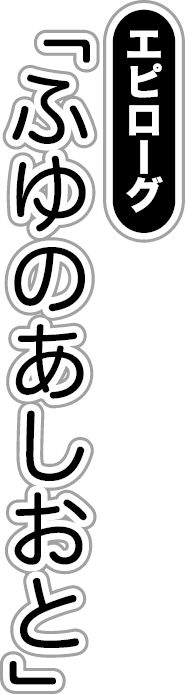

| あいすのっ！ (ぷちぱら文庫) | |
| あるてみす。 & 夜空野ねこ & ｒｅｆｅｉａ | |
| (2011) | |

生まれたばかりのまっさらな白。雪の赤ん坊が、空から生まれ落ちる。
黒く淀んだ雲。そんな雲を見上げて、すぐ地面を見下ろす。
「今日も沢山積もりそうだなぁ」
地面に埋まっているかのような感覚。植物になった気分だ。
「ふふふ」
不思議と笑みがこぼれた。
まるで、本当に赤ん坊を見ているように、ごく自然と顔が緩む。
「そりゃ！」
行動開始。
何も知らない雪へ最初の記憶を植え付ける。
赤ん坊へ言葉を教えるように、ゆっくりと一つずつ。
「これが足です」
最初に、足の形というものを。平らで白い雪へと刻印していく。
「これが重さです」
次に、人の重さを。深い雪の海へと、足首まで埋めてやる。
「これが弱点です」
最後に、自らが溶けてしまうことを。
細かい雪の結晶を、手ですくって息を吹きかけ消してやる。
「わかったかな？」
自分の知識を教えることが楽しかった。
何度も何度も繰り返す。
機嫌をよくして、右へ左へ。踏み込み、跳びはね、すくって、消して。
「ん？」
雪とは違う色。
少女がこちらを見ていた。
「何をしてるんだ？」
「えっ......」
雪合戦で使う玉のように、瞳が丸まっていった。
「なんだよ。そんなに驚くか、普通」
「ゆ、ゆ......雪だるまがしゃべった！」
「は？ 俺は雪だるまじゃないだろ？」
「そうなの？」
「ああ、そうだぞ。どこからどうみても優しいお兄さんだろ？」
爽やかな笑顔。
「でも、全身雪だらけ......」
「これは雪で遊んでいたからだ」
疑いの眼差し。
「第一、雪だるまがしゃべるとでも思ってるのか？」
「う、うーん」
少女が小首を傾げている。
「じゃあ、質問を変える。雪だるまがしゃべったって思って驚いたんだよな？」
「うん」
「じゃあ、しゃべるとは思っていなかったということだよ」
「あっ、そっか」
納得したように手を叩く少女。
「小娘、馬鹿だろ」
「ば、ばかじゃないもん！ えらいもん！」
人々の思いを届ける郵便ポスト。それ以上の感情をのせて、少女の頬が真っ赤になった。
「それに、馬鹿はお兄ちゃんでしょ！ こんなに寒いのに雪をいっぱい身体につけて！」
「甘いな。俺は雪に魔法をかけていたんだ！」
「魔法？」
「そうだ！ こうやって......」
雪をすくって、息を吹きかける。
「あっ......無くなった！」
「ふふん。どうだ、お兄さんの凄さがわかったか？ こうやって、息を吹きかけたら雪を溶かせるんだぞ」
「そうなの？ 消えちゃうの？」
「ああ、そうだ。雪は暖かくなると溶けて消える生き物だからな」
「生き物......？」
「そう、生き物。冬しか生きられないけどな」
「ふーん......じゃあ、雪は照れ屋さんなんだね」
少女は腕を組んで考え込むと、そんなことを言い出した。
「ん、照れ屋さん？」
「うん。だって、雪って綺麗じゃない？」
「ああ。そうだな」
人は無垢な白さに美しさを覚える。
「だから、みんなに綺麗だって言われて愛され、褒められるのが恥ずかしくて溶けちゃって。それで、いつまでも残らないのかなって」
「なるほど......」
感心した。馬鹿かと思っていたが、思い違いなのかもしれない。
「というか、帰らなくていいのか？」
「え？」
「おとーさんとおかーさんが心配するぞ？」
「......じゃあ、お兄さん。明日もまた遊んでくれる？」
「え？」
「また、お兄さんと遊びたい。今度は長くもっとおしゃべりして、色々と教えて欲しい」
少女がこちらを見つめてきた。
周りの雪まで溶けてしまいそうなほどの真っ直ぐな熱視線。
だから、その瞳を見ているだけで、春がくる予感がした。
「つぅ......」
多田智一は偏頭痛と共に目覚めた。
「また......か」
毎年、冬の初めに見る謎だらけの夢。
もう何十回と見ているが、未だにこの夢が何を意味しているのか、わからないままだ。
でも、意味がわからないはずなのに、胸が痛む。
「こんな後味の悪い夢を見るくらいなら、ゾンビに追われる悪夢とか、世の中の美女が平安美人になる悪夢とか、おっさんに臭いを嗅がれ続ける悪夢を見たほうがマシだっ！」
そう強がってみるものの、リアクションを伴わないボケは虚しいだけだった。
「はぁ......」
ひとりの部屋に広がってゆくため息。
「うーむ......」
思考を巡らせる。過去の記憶を検索して、夢の意味を知ろうと頑張った。
「ううーん」
寝起きの脳へ鞭を打つ。準備運動をすっ飛ばし、いきなり朝から全力疾走だ。
「............だめだ、疲れた」
息切れするほど考えたにもかかわらず、何もわからなかった。
これも毎年、繰り返してきたことだ。
「まぁでも......きっと、いつかわかるよ......」
今は、考えすぎて熱くなった額をどうにかしたかった。
「......また、来年に持ち越しかな」
智一はため息を吐きながら、窓の外を見つめた。
寒そうな風が、木々を揺らしていた。
「ちょっと、外の空気でも吸ってくるか」
そう決めると、手早く着替えを済ませて、外に出ることにした。
大きく背伸びをしながら公園へやってくる。
いつものベンチに腰掛けて、おなじみの光景を拝む。
「ふぅ......」
冬の心地よい息吹を全身で感じた。
昼だというのに、空気が冷たく肌を叩いた。でも、それも悪くない。
智一は煙草をポケットから取り出すと、一服した。
吐く息とは違い、寿命の長い呼出煙をくゆらせる。
「かわりに自分の寿命を縮めているけどな」
しかし、死ぬのなら苦しまずに死にたい。
「......雪みたいに死ねたら楽だよな」
春のあたたかな日射しに見守られて、ゆっくりと溶けて消えていく。
溶けた後は、土に吸い込まれ、その水分で花が咲く。この上なく、最高な終わり方。
「ま、人間が雪みたいになれるわけじゃないしな」
これ以上考えても、意味がない。
「......煙草も終わったし、帰るかな」
立ち上がって、背伸びをすると、背骨がたくさん鳴った。
「次にここへ来る頃には、もっと雪が積もってるかなぁ」
寒波が街を本格的に襲うのも近い。その時が楽しみだ。
「......ちょっと！ 待ちなさい！」
「ん？」
家に戻ろうと一歩踏み出したところで、見知らぬ声に呼び止められた。
「今、ポイ捨てしたでしょ！」
冬服を纏った色白で小柄な美人が智一のことを睨みつけていた。年は智一よりも少し年上だろうか。ついでにいうと、小さな身体に似合わず巨乳だ。
「は？」
「は？ じゃないわよ！ 私は見てたんだから！」
冬の冷たさよりも痛々しい視線で、美人は智一を睨みつけていた。
眉毛を吊り上げて、意志のこもった強気な表情。美人だからこそ、絵になる。
「だから？」
智一はわざと素っ気ない言葉を返した。
煙草を捨てた自分が善良な市民とはいえないが、最初から敵意剥き出しの相手に好意を抱くわけはない。
「だからじゃないわよ！ あんたにはモラルってものがないの？」
「失礼な。俺はこう見えても紳士なんだぞ。雨の日にコンビニへ行ったら、きっちりとビニールカバーつけるくらいにな」
「そんなの紳士じゃないわよ！ 人としての常識よ！」
「ていうか、なんだよ。わよわよとうるせーな！ 見知らぬ相手にいきなり大声で突っかかってきて。お前こそモラルや常識がないんじゃないのか？」
「なっ......」
公園の温度とは裏腹に、その美人の頬が真っ赤になっていく。
つまり、とてもわかりやすい女だった。
「ダメなものはダメっていうのが、大人の常識よ！」
「それだと日本人は子供ばっかりになるな」
「なんでよ？」
「例えば、上司に飲みに誘われて断り切れないサラリーマンとか、それで酔いつぶれた上司を送って知り合った奥さんとダメとわかっていながら浮気してしまうサラリーマンとか、ダメとわかっていながらついでに娘もいただいてしまうサラリーマンとか」
「そんなピンポイントな例えじゃ説得力ないわよ！」
美人は絶叫した。美人なので、それすらも魅力的に見えてしまう。
「......お前、無知だろ」
「ふん！ どうせ、私は鞭みたいに攻撃的な女ですよー」
「......訂正。お前、馬鹿だろ」
「だれが馬鹿よ！」
口論か掛け合いかわからない応酬を繰り広げるうちに、その美人ははっと気付いたように智一のことを見た。
「あれ、あなた......。もしかして......と、ともかず？」
「何で俺の名前を......？」
「私よ、私っ！ 沙姫......秋野沙姫よっ！」
「あきのさき......」
智一は、名前を記憶の中で探ってみたが、検索には引っかからなかった。
「まさか、覚えていないの？」
「はい」
「そう......やっぱり、そうよね。前に会ったときから、随分と季節が過ぎちゃったもの。無理もないわよね」
沙姫はさっきまで怒っていた顔を思案顔に変えた。
コロコロと表情が変わるので見ていて飽きない。
「でも、やっぱりむかつくから殴らせてね」
そして、にこやかに宣言する。
「は......」
理解するよりも早く、智一は平手で殴られていた。
「いってえええええぇ！」
「あー、久々に思いっきり叩けた！」
満足そうな沙姫。
「ふふ、トモなら容赦しなくていいもんね！」
なんら躊躇することなく、第二打に入る勢いだ。
「ちょっと、たんま......」
「平手は急にはとまれないっ！」
寒空に、聞いているだけなら心地の良い音が再び響いた。当然、殴られた当事者は痛い。
これが新しい生活の始まりになるとは、このときの智一には想像もしないことだった。
結局、成り行きで沙姫を家に連れて帰ることになってしまった。
「結婚を誓い合った女の顔を忘れるなんて......最悪ね！」
しかも、とんでもないことを言い出した。勿論、智一に結婚を誓い合った記憶などない。
それでも、沙姫は間違いないと言い張って譲らなかった。
「......ねぇ、声を確認したいから〝あいうえお〟って言ってみて」
「あいう......」
仕方なく智一が口に出そうとした時、沙姫に口を塞がれた。
平手ではなく、唇で。
「んっ、ちゅうぅ、じゅ......っぷはぁ」
突然のキス。しかも、沙姫は大胆に舌を動かして、智一の口の中を暴れまわった。
「......んー、このキスの感触。やっぱり、トモよ。間違いない」
「間違いないじゃない！ いきなりキスすんな」
「えへへ」
沙姫は頬を緩ませて笑った。
「笑って誤魔化そうとすんな！」
「いいじゃない」
「よくねぇ」
智一は顔が恥ずかしさで火照るのを感じながら、抗弁した。
「男から強引にキスしたらダメだけど、女の子からなら許されるのよ！」
「そんな理屈聞いたことねぇぞ！」
「理屈じゃないわ。社会はそういう仕組みでできているのよ」
そう言って、沙姫は智一が出した缶コーヒーを飲んだ。
「さっきので確信したわ。やっぱり私が捜していた人よ」
「俺が？」
「うん」
「......証拠は？」
「女の勘」
「もしもーし、これはサスペンスドラマじゃなくて現実ですよー？」
「煩いわね！ ともかく、目の前の人物は私の捜し人よ！」
沙姫は両手を前で組み、智一のことを睨み付けた。
両手を組むと、まるで腕に巨乳を乗せているかのような姿になる。
美人だし、巨乳。性格は、残念かもしれないが。
しかし、ポイ捨てをするとはいえ一応は常識人である智一としては、身に覚えのない犯行は否認するしかなかった。
「だから、責任とってもらうわ！」
「は？ 責任？」
「ええ。まぁ、よーするに......単刀直入にいうと、結婚してください！」
沙姫は口ごもったものの、押し切った。あまりの強引さに智一は、絶句した。
「よし、じゃあ決まりね」
「おい、こらまて。勝手に決まるな！」
「なんでよ！ ３秒間黙ってたじゃない。３秒ルール適用よ！」
「適用されねーよ！」
「何が不満なのよ？ こーんなに美人と結婚できるという好条件なのに！」
「まぁ、たしかに......」
紛う事なき美人ではある。平安時代でなく平成時代に生きる智一には否定できない。
「男にとって美人を奥さんにするのはステータスでしょ！」
「一理あるけれど......」
結婚なんてまだ、早い。いや、そもそも正体不明の人物と結婚できるはずがない。
「まっ、いいわ。ゆっくりと考える時間くらいあげる」
沙姫は缶コーヒーを持ち上げると、一気に飲み干した。
「というか、さっきから思ってたんだけどまずいわね、これ！」
「......文句あるなら飲むな！」
「飲むわよ！ トモとあれだけ唾を飛ばしあったら喉が渇いたんだもん」
「飛ばしてねーだろ！」
「あ、唾液交換だったわね？」
「それはまぁ......」
恥ずかしいことをサラリと言う。
しかし、貪るような大人のキスをしたばかりだというのに、沙姫からはまるでいやらしさを感じない。それは、ある意味、沙姫の持つ純粋さからかもしれない。
「あ、結婚するんだったわね？」
智一は無言でスルーした。
「ちっ、どさくさに紛れてもだめか」
「ばればれです」
結局、会話したり口論したり雪合戦ならぬ物合戦をしたりしているうちに、暗くなってきてしまった。
「もう真っ暗だ」
「そうね。まぁ、部屋にいる限り暗くはならないけどね」
「えーっと......それは......要約すると......このままずっと部屋にいるってことですね？」
「ええ」
何ら迷うことなく、沙姫は頷いた！
「ええ、じゃないっ！」
「あら、意外とあっさり許可したわね」
「同意の意味じゃなくて、否定の意味だ！」
「......むっ！ いいじゃん、泊めてよ！」
沙姫は不満げに口を尖らせた。
「おかしいだろ。何で見ず知らずの女を......」
「だから、見ず知らずじゃないって言ってるでしょ！ トモ、紳士なんでしょ！」
「紳士ですよ。雨の日にコンビニへ行ったら、きっちりとビニールカバーつけるくらいの」
「だったら、こんな暗い中に女の子をほっぽり出さないの！」
「......むぅ」
確かに、辺りはもうすっかり暗くなってしまっている。
......結局、押し切られてしまった。
でも、幸い多田家には空き部屋がある。そこを使えば、万が一にも間違いは起こらない。
「じゃあ。また明日」
「え、あっ、ちょっと......」
何か言いたげな沙姫を無視して、智一は部屋を出た。
いつまでもこんな面倒くさい場所にはいられない。
無駄にボキャブラリーを消費して、無駄に物が飛び交い、無駄に近所をお騒がせして、無駄に住みにくくなるだけだ。
＊ ＊ ＊
「んっ......」
智一は身体に重みを感じて、目を覚ました。
「えっ......」
瞼を開けて、異変に気付く。
「えええ!?」
「ちぃっ！ 起きたか」
智一を見下ろす小さい影。その姿は間違えようもない。
「沙姫さん？」
沙姫は無言で、智一に馬乗りになっていた。
「何で、俺の上に乗って......」
「......今、見ているのは全て夢よ」
「夢......？」
「そう、夢」
「そうか。じゃあ、目を思いっきり開ければこの悪夢から解放されるわけか！」
「何が悪夢よっ！」
沙姫は智一の腹部に何度も拳を叩き込んだ。
「いたっ！ いたい！」
「ほらほら、おやすみなさい。そうすれば何もかも終わってるから」
「余計に目が冴えたんだが！」
お腹に伝わってくる痛みが目覚まし時計代わりになる。
心臓が激しく脈動して、血液を全身へと運んでいく。
「えっと......沙姫さん。何をしてる？」
「見てわからないの？」
言われて智一は改めて状況の分析に努めた。
細くて白い沙姫の太ももが左右に広がって智一の下腹部を跨いでいる。
「あー......跳び箱の練習？」
「に、しては飛び越せてないでしょ！」
沙姫は頬を大きく膨らませた。
「お、女の子が......こんな格好してたら......わかるでしょ、普通」
これは、夜這いと考えるのが最も妥当な状況。
「えっと......沙姫さん？」
「あー、もうこのバカトモ！ 名前呼ぶなっ！」
「え？」
「トモに、そうやって目を見て......名前を呼ばれると、我慢できなくなっちゃうのよ！」
ほんのりと潤んだ瞳で見つめられると、金縛りにあったように動けなくなってしまう。
そして、肉棒も固くなってしまう。
「責任とってもらうわよ！」
「え、ちょ、ちょっと......」
智一が止めるよりも早く、沙姫の身体が動いた。
「あぅ......」
「くぁ......」
いきなり、亀頭の先にまとわりついてくる生ぬるさ。
信じられないことに、いきなり騎乗位で挿入されてしまった。
「はぁっ......んんぅ......あぁ......」
沙姫は小さい声をあげて、瞳を細く歪ませた。
「トモ......んぅ......はぁ、んぅ」
そうして、小さな手のひらをゆっくり伸ばして智一の頬を優しく撫でる。
「沙姫さん......？」
「ねぇ......わか......る......？」
雪みたいに白い手だが、その手のひらは暖かくて心地良い。
「今、私は......トモと......繋がってるんだよ......はぁ、んぅ」
途切れ途切れの声で懸命に、紡ぎ、奏でる。
「......沙姫さん......なんで？」
「はぁ、んぅ......だから言ってるでしょ......トモが......私の名前を呼ぶだけで......我慢できなくなるの......」
「だ、だから......な、なんで」
智一には、理解できなかった。名前を呼ばれるだけで、そうなってしまう感情が。
「............好きだから」
「え？」
「トモのことが、あんたのことが好きだからっ！ 世界の誰よりも愛しているからっ！」
暗がりでもわかるぐらい顔を赤くしながら、沙姫は言葉を続けた。
「大好きな人が、そばで寝ていて......寝顔を見ていたらっ......我慢なんかできっこないよ！ だからっ、だから、だから......」
「............沙姫さん、でもそれって」
「言わないで......。わかってるから......言わないで」
沙姫は恥ずかしそうに、短い髪を掻き上げた。
「......自分がエッチな女の子だってわかってるから」
言い終わると、沙姫は腰の動きを再開した。
生ぬるい粘膜に愛撫されながら、亀頭がゆっくりと小さな膣穴を進んでいく。
「はぁぅっ......でも、そう思われたって......いい。はぁ、んっ......スケベな女だと思われても......いい。けれど、私は......どんな風に思われても......トモと繋がりたかったの！」
「沙姫さん......」
他人に存在を求められる。人に愛されるという気持ち。それは、悪い気はしない。いや、とても満たされた気持ちになる。今はまだ、状況が理解できないけれど。
「......ありがとう」
自然と声が出ていた。
「そこまで思ってくれてありがとう」
「トモ......」
沙姫の伸ばした指に、智一は指を絡めた。
「......今の俺......沙姫さんのことをどう思ってるのか、正直わかってない......好きなのか......嫌いなのか......けれど」
繋がりあった指の腹をゆっくりと動かして、沙姫の小さい柔肌を堪能する。
「今はただ沙姫さんと、もっとこうしていたい、触れ合いたいって思ってる」
「ん......」
智一の言葉に安堵して、沙姫は笑顔になった。拒絶される可能性だってあったのだから。
「じゃあ......もっと繋がろう......ね？」
「うん」
智一が小さく頷くと、沙姫は二人の距離を縮めるように身体を沈めていった。
「はぁ、んぅ......」
「くぁ......」
吐息が重なる。それだけで、脳に安心感が広がってゆくかのようだった。
「はぁ、ふうぅ、トモ......これ、わかる？」
「これって......先っぽにあたってるやつ？」
「そ......」
亀頭の先端に触れる金魚すくいのポイのような膜の感触。
「処女膜......だ」
薄いけれど、存在意義は分厚い。
「トモ......でも、わかったか」
「あのなぁ。沙姫さんよりも年上なんだぞ？」
「え？ あー、うん。そうね」
一瞬、沙姫はきょとんとした表情を見せたが、頷いた。
「......ねぇ、こっちでもファーストキスだね」
「ん？」
「私の処女膜とも......はじめてキスしてる」
沙姫は腰をゆっくりと動かして、智一の鈴口に処女膜を擦りつけた。
「そう......だな」
処女膜があるということは、男性経験がないということ。
つまり、沙姫のはじめての男になる。
「......いいんだよね？」
「うん、いいよ。あげる......」
沙姫は絡めている指先を動かして、智一の分厚い指肉を優しく擦った。
「トモに私がどう思われていてもいい......一方通行でもいい。私が好きな気持ちは変わらないから。好きな人になら全部あげてもいい......」
「沙姫さん......」
心の中で沙姫の存在が膨らんでいった。
このまま膨らみ続けたら、胸が苦しくなりそうなぐらいに。
「ほら......もらって......私の最初を......」
「うん」
智一は指に力をこめて、沙姫との繋がりを強めた。
そして、一気に腰を突き上げる。
「はっぐううぅ！」
くぐもった声をあげて、沙姫は白い身体を激しく仰け反らせた。
その勢いで、額に滲んでいた汗が智一にこぼれ落ちた。
「だ、大丈夫？」
「はぁ、んぅ、はぁはぁ......」
荒い呼吸によって、豊かで張りのある乳房が激しく上下する。
その光景を見ているだけで、智一は胸が苦しくなるぐらいに興奮してしまった。
「ひゃぅ、あっ......なんか太く......ひゃ、んぅ......」
「ご、ごめん......」
「はぁはぁ、んぅ、いいのよ......トモ」
沙姫は潤んだ瞳を智一に向けると、優しく微笑んだ。
「太くなるってことは......私で興奮してくれたってことだよね」
沙姫が肌にも負けない白い歯を見せた。
そうして、自分からゆっくりと腰を動かし始めた。
「だからもっと興奮してっ......太くなったトモのおちんちんで、処女膜の奥......撫でてっ」
「さ、沙姫さんっ！」
「ひゃああぅ！」
沙姫の言葉が、智一の本能を繋いでいた鎖を断ち切った。
「はぁ、んぅあっ！ トモ、はげし、んぅ！」
智一は、腰を突き上げて処女膜の奥へと亀頭を侵攻させていった。
徐々に道が狭くなっていっても勢いを止めない。溢れた熱情は、もう止められなかった。
「ひゃぅ......んぁふぁ......あっ......奥にはいってきて......ひぃぅ」
「これが、沙姫さんの......」
誰とも接触したことがない肉襞。はじめて侵入してきた肉棒にも、蔓のように絡みついてくる。
「沙姫さんの中......凄く狭い......はぁ、くうぅ」
隙間などないと言わんばかりに接触してくる膣肉。はじめて生殖機能をはたした膣は、それほどまでに狭かった。
「はぁ、んぅ、でもっ、そのおかげかな......トモの全部......わかるよっ」
沙姫は下着をずらしていた手で、肉竿を触って愛撫を始めた。
挿入していない部分もいじられて、ますます興奮を助長する。
「こんな......固いのがっ......私の膣に入ってきてるんだねぇ......あっ、ううん！」
男根の大きさを探るように、沙姫は指先を動かす。
猛りきった海綿体が、ますます限界を超えていく。
「ひゃふぅ！ 今っ、跳ねたよっ！ トモのおちんちん、跳ねっ......ひぁあ、はあぁぁっ！ はぁはぁ、でもぉ......トモ......もっと繋げて......私の膣にトモの全部教えてっ」
「沙姫さんっ」
餌を目の当たりにした獣のように、肉棒が動いた。
より甘い液体を、より柔らかい肉を求めるように。
「はぁ、んぅ！ きてるよっ！ 奥にきてるっ！ ひはぁあっ、んぅ、あぁ、あっ！」
「沙姫さんの膣から生ぬるい液体でてきてるっ」
「はぁあぅ！ トモっ、勢いよく出し入れしすぎ......ひゃあぅん！」
「動かしてる力加減は変えてないんだけど......」
破瓜と愛液。その相反する二つの液体が抽送を潤滑にしていた。
「沙姫さんがエッチな液体たくさん出すからだよ」
「そんなこと言われても......はぁ、んぅ！ こ、こんなっ、激しく擦られたらっ、我慢なんてぇ......ひゃぁ、あっ、できっこない......んああ！ はあっ、うぁあ......んあぁ！」
愛液の粒が、沙姫と智一の肉体に飛び散って肌を濡らす。
「はぁあ、ああぅ！ トモっ、手加減してっ、んぅ」
でも、そんなことはもう無理だった。とっくに、理性の鎖は断ち切られていたから。
智一は腰を思い切り突き上げて膣奥へと亀頭をぶつけながら、開いている手のひらで柔らかい沙姫の太ももを撫で回した。
「んぅ、スケベなトモ......んぅ、はぁ、んっ」
「こんなにエッチな液体を出してる人には言われたくない」
智一は太ももに出来上がった愛液の水玉をすくって見せた。
「ひ......あっ......」
「ほら、見えるでしょ？ 自分の愛液が」
「う、うるさいわよ！ バカトモ！」
「ふうぅん？」
腰を少しだけ左右に振ると、亀頭の先っぽが膣肉に食い込んだ。
「みゃああぅん！」
喘ぐ沙姫を無視して、動きを速くさせていく。
強引に左右に拡張された膣穴からは、更に愛液がこぼれ落ちてくる。
「ほら、これでみえるでしょ？」
「あ、あほっ！ このあほっ！」
羞恥に顔を赤らめて、あわてふためく沙姫の仕草に加虐心がより一層刺激される。
「ねぇ、沙姫さんのどんな味がするかな？」
「えっ......」
沙姫が不思議そうに智一のことを見つめた。
智一はその表情に笑いを返すと、こぼれ落ちた愛液を指に染みこませ、
「はむっ」
たっぷりと染みこんだ愛液を味見した。甘酸っぱい味が口腔に広がる。
「おいしい」
「いやっ！ ばかっ！ そんなのやめてよっ！」
「ん？ なんでさ」
「ひゃあ！ んんんんぅ！」
「いやぁ、処女の愛液はうまいなぁ。長年熟成されてきただけはあるよ」
「ううぅ、いやぁ、ううぅ......恥ずかしいから言わないで......んぅ」
「の、わりには......」
亀頭の感覚に異変を覚えた。左右からの圧迫が強くなっているのだ。
「他人に愛液を舐められて......膣の締めつけを強くさせてるみたいですけど？」
「はぁ、ううぅ！ このっ！ あんまりっ、調子にのるなっ！」
沙姫は身体を倒して、智一の唇に吸いついた。
「んぐっ？ んぅ」
「んぅ、ちゅうぅ、ちゅりゅ、ちゅうぅ」
亀頭で触れている肉よりも柔らかい唇の感触。
「ちゅうぅ、ちゅう、ちゅぷ......ぷはぁ、はぁ、は、んぅ......」
唇と唇がはなれていく。その間には細長い唾液の橋ができた。
「なんで、いきなりキスするんだよ」
「......トモが変なことするから......口を塞がなきゃって......」
「......でも、思っていなかったな」
「ん？」
「エッチしながらキスを......舌を絡め合わせるなんて、ね」
「感想は？」
「ん......悪くない......かな？」
沙姫は小首を傾げて舌先を伸ばし、もう一度キスをしてきた。
「んぅ、ちゅう......ちゅぷ」
唾液を絡ませながら、お互いの口内を貪りあう。
「はぁ、んぅ、ちゅうぅ、ちゅうう」
沙姫はキスをしながら、繋いでいる指先に力をこめた。
智一も逃さないように握り返し、鎖のように絡め合った。
「はぁはぁ、んぅ、トモ、腰も、うごかひて......」
智一は頷くかわりに、腰を動かした。
「はあむ、んぅ、はぁ、あああぅ......あっ、トモぉ......ああぅあ」
舌に負けないように、性器同士も大胆に絡み合ってゆく。
「んぅあ、はぁぅ、んぅ、はぁ......ああ、ひゅごい、トモぉ」
恍惚とした表情を浮かべる沙姫。それは、智一も一緒だった。
「んぅ、ちゅうぅ、沙姫さんっ」
小さい口穴に舌を差し込んで動かす。
愛液に負けないほどに唾液もおいしかった。
「お口同士でキスしあって......んぅ、亀頭と子宮でもキスして......はぁ、んぅ」
「沙姫さんっ......」
「はああぅ！ ああぅっ、んぅ、ちゅうぅ、んぅ、ひゃぁ、ひょも、んぅ！」
膣の一番奥で回り続けている亀頭が、水風船みたいに愛液を吸って大きく膨れあがる。
「俺、そろそろっ」
「んちゅ、いいよ、トモ......」
「え？」
「射精して......いいよ。けど、お願い」
沙姫は潤んだ瞳でまっすぐに智一を見つめた。
その瞳はいつまでも見続けていたいとさえ思えるほどに綺麗だ。
「今日は同じ布団で寝させてっ......トモのぬくもりを......抱いて寝かせてっ」
「え......」
「せめて目が覚めるまででいいから......夢を見させて......抱っこして......」
「ん......わかった......」
ここまでしておいて無下になどできない。
智一は承諾の意志を込めて、沙姫の形のよい頭部を優しく撫でてあげた。
「激しく動くよ」
「ん......」
元の姿勢に戻すと、智一は一気に腰を動かし始めた。
「はぁ、んぅ！ あっ、あああぅ！」
小さい穴に埋まっていく肉棒。けれど、度重なる抽送によって膣内は広がっている。
「はぁはぁ、あっ！ 沙姫さんっ！」
自らの亀頭によって整備した産道を激しく突き進む。
そうして何度も愛撫させた肉襞にまたカリ首を愛撫させる。
「はぁ、あっ！ ああぁ！ トモっ！ トモっ！ いいよ、だしてっ！」
子宮にぶつかる衝撃だけで、今にも鈴口が割れそうだった。
「トモのっ、んぅ！ 精液を私にちょうだいっ！」
沙姫は潤んだ瞳で智一を見下ろした。
だが、逆にそれが、智一の最後の理性をかき集めた。
「はぁ......くうぅ、沙姫さんっ！ 腰を浮かしてっ！」
こんな美しい人の子宮を汚す。そんなことをしてはいけない気がした。
「んぅ！ いやっ！ 私は抜かないっ！」
けれど、智一の意志とは反対に沙姫は白い雪のような身体を沈み込ませた。
「わかってやってる？ このままだと、沙姫さんの......」
「はぁはぁ......そんなの知ってるわよっ！」
「くおっ！」
亀頭の退路を断つように締め付けを強める膣。出口を失った亀頭は、前に進むしかない。
「こうしてっ！ 男の人をもとめちゃう......立派な女なんだからっ！ 子宮に、んぅ！ はぁあぅ、精子きたら、どうなるか......んぅ、わかるわよっ！」
懸命に言葉を紡ぎながら、沙姫は自ら激しく腰を振った。
粘膜の感覚と激しい絡みつきに、今にも鈴口が爆発しそうだ。
「いいからっ！ トモのっ！ 精液をっ、私に注いでっ！ んぁ、はぁ、んんぅ！ 大好きな人にっ、私のはじめてっ！ 全部あげたいのっ！」
「くうぅ！」
脈拍が急に早くなる。このままでは、沙姫の中で溶けてしまって全てを失いそうだった。
「はぁああぁ！ 沙姫さんっ！」
けれど、智一は渾身の力を振り絞って腰を突き上げた。沙姫の中で溶けるのならば本望だから。
「ひゃあぅ！ トモっ！ トモおぉ！」
小さい顔に滲み出た汗が飛び散る。
その汗粒に負けじと、結合部分からも愛液の雫が高く飛ぶ。
「だすからっ！ ここにっ！」
智一は爆発寸前の鈴口で子宮を撫で回した。着地点を見定めるように、念入りに。
「沙姫さんの全部もらうよ！」
「んんぅ！ いいわよっ！ あげるっ！ だからっ......だして......たくさん射精してっ」
「はぁあ！ くうう！」
沙姫の許しを得て、智一は子宮口で激しく亀頭を動かした。
固い感触が、鈴口の穴をこじあけていく。
「あああぅ！ あ、子宮叩かれて、んぅ！ んああ！ ひゃあ！ あああっ、割れるっ！ トモのおちんちんの先っぽがぁ......われそおおぅ！」
「くああああぁ！」
こじあけられた鈴口から、内部に溜めこんでいた白い液体を一気に解放した。
「ふひゃああぁっぁ......あああぅ、あついのきて......る」
脈打つ亀頭の動きに合わせて、沙姫の膣も小刻みに動く。
「ああっ、これが......長年愛した......人の......精液......お腹にきてる......トモの精子......子宮に、きてる......んぁ、はぁはぁ......」
沙姫は呟きながら、声と一緒に白い身体を小刻みに震わせた。
下から見上げているからか、どこか今まで以上に大人っぽいお姉さんのように思える。
「ようやく......念願の......大好きな人の精液......もらえたぁ......ふふっ......」
サンタにプレゼントを貰った子供のように、沙姫はとびきりの笑顔を見せた。
「トモ......すきぃ......」
そうして、繋がったままの身体を智一に預けた。
雪みたいに白いけれど、暖かい身体。
「......」
だから、今夜は約束通り。
このまま、おやすみなさい。
ふたりは、そのまま溶けるように眠りに落ちていった。
一夜明けて、朝の食卓。
先に起きた智一は沙姫が食パンを食べるのを眺めながら聞いた。
「ねぇ、沙姫さん」
「ん？」
「昨日、どうしてあんなことしたの？」
「......トモが好きだったから。悪い？」
そう言うと、沙姫は苺ジャムみたいに顔を赤くした。
けれど、智一だってそれに負けないくらいに心が甘くなった。
「悪い、悪くないの問題ではなく......」
昨晩のことを思い出したらもっと熱くなってしまった。
「......だ、だからって、ああいう一方的なことはどうかと思うぞ。軽い女だって思われたくないだろ？」
「はぁ!? デブっていいたいわけ！」
「そうじゃなくって......えーっと......」
あさっての方向へ飛んだ会話を、引き戻す。そして、沙姫に一発で通じる言葉を探す。
「......淫乱な牝犬だと思われたくないでしょ？」
「め、牝............まぁ、そうよね」
今度はちゃんと意味が届いたようだ。
沙姫の口から大きなため息が聞こえてきた。ほんのりとジャムの香りがする。
「......私ね、欲しい物は何が何でも手に入れちゃうの」
「何となくわかる」
「なんだと」
「自虐したのそっちだろ！ それに、俺はもの扱いかっ！」
「人物なんだからものでしょ！ それに......その......トモが欲しかったの。それだけ欲しかったってことなの！」
沙姫は小さい顔を更に真っ赤に染めた。その表情は見ているだけで、心を甘くさせる。
「でも、女の子から......もとめちゃうのって......やっぱ変だよね」
「......いや変、ってほどではないんじゃないかな？」
「え？」
「なんていうか、その......」
嬉しいと言いたいところだけど、そう言ってしまうと智一まで溶けてしまいそうだった。
「欲しい物、我慢できないって気持ちはわかる」
「トモ......」
「でもね、やっぱり合意の上じゃないと。欲しいからって勝手に商品を持っていくと......窃盗と同じだろ？」
智一は懇々と説諭した。
「うん......ごめん。そうよね」
「まぁ、もう終わったことだし。気にしなくていいよ」
「いいの？」
「いいですよ」
軽く頷く。
「じゃあ、もう一枚食パンいただいても？」
「いいですよ」
更に、頷く。
「じゃあ、今度も苺ジャムで食べても？」
「いいですよ」
また、頷く。
「じゃあ、暫くここに住んでも？」
「よくねーです」
危ないところだったが、なんとか回避した。
「......どさくさに紛れてもだめか。ちっ」
「おい、アマ。何を舌打ちしてんだ」
「アマって......ひどいわね！ 禿に見える！」
「ええ、見事な禿女。ツルッパゲ」
「頭にきた」
「脱毛がだろ？」
「ハゲハゲって煩いわよ！」
沙姫が殴りかかってくるが、智一は寸でのところで避けた。
「はぐうぅ」
まるで、慣れない雪で滑ってしまった観光客みたいに身体のバランスを崩して沙姫は転けた。
「生憎、前世は闘牛士でしてね」
「ぎゅうう......」
沙姫が拳を握りしめて、立ち上がる。
「......で、どうして私が暫くここに住んだらだめなのよ！」
「寝込みを襲われるから。以上」
「あのね、トモ。私は寝込みを襲うのが生き甲斐なのよ。しょうがないでしょ」
「忍者かよ」
「そうよ！ だから色仕掛けもちょちょいのちょいだったでしょ！」
「どこがだよ」
「むかっ」
沙姫は両腕を組んで智一を睨み付けた。忍者はここまで堂々と殺気を出したりしない。
「なによ！ 私のマンコに射精したくせにっ！」
「マ、っておい！ 女の子がそういうこといっちゃだめだろ！」
「うるさいわね！ 責任とりなさいよ！ 責任！」
「はぁ？ 沙姫さんがどかなかったからだろ！」
「いーっちゃお、いっちゃお！ おーまわりさんにいーちゃお！ 男に監禁されて中出しされたっていっちゃーお！」
「どうもー、性犯罪の貴公子ですー」
智一は爽やかスマイルを浮かべた。背景は色鮮やかなハイビスカスだ。
「何よ、その笑顔」
「な？ この笑顔が犯罪者に見えるか？」
「ふふん。あんたは、目つき悪いからね。笑っても無駄よ」
「悪かったな！ 好きこのんで目つきが悪いんじゃねぇ！」
「......まあるくさせたら可愛らしいのにね」
「は？」
沙姫が訳のわからないことを言ったので、智一は目を丸くした。いや、点にした。
「な、何でもないわよ！ とにかく、私はこの家から出ていかないからね！」
「強情だな」
「ええ。強情ですよ。昔からゴキブリ女って呼ばれるくらいにしぶといですもんね！」
「いよっ！ ゴキ大将っ！」
「ガッサッサッサッサ！」
沙姫は謎の笑い声を上げた。
「何それ？」
「ゴキ大将の笑い方。無理あったかな？」
「笑うところかよ、そこ......」
兎も角、これ以上口論しても無駄らしいことだけはわかった。
智一は、さじを投げた医者の気分が今ならわかる気がした。
「ふぅー......わかったよ」
寝込みを襲われたとはいえ、智一にも負い目がある。
せめてもの罪滅ぼしをするのも紳士の務めだ。
「いりゃいいさ。好きなだけ」
「きゃっほー！」
飛び跳ねて喜ぶ沙姫。そして、智一を嘲笑まじりで見つめてくる。
「ふふふ！ 国家権力に屈したわね？」
「屈してねぇよ！ 俺はここいらで有名なアウトローなんだぞ」
「雨の日に傘をビニールに入れる紳士がねぇ？」
細い唇をつり上げる沙姫。何だか憎たらしいよりも、愛らしく思える。
「......うっせぇ！ アウトローにも礼儀があんだよ！」
智一は恥ずかしさを隠すために、小さく呟いた。
それに、これからの身の振り方を考えるにはまだまだ時間が必要そうだ。
「ごちそーさまでしたっ」
「ごちそうさん」
ふたりで手を合わせて、西洋式の朝食が終了した。
「ごちそうさんって......トモ食べてないじゃん」
「ああ、俺は食ったよ。沙姫さん」
「わ、私を食ったとか......えっと、その......じゃあ、おかわりする？」
「勘違いするなよジャム女」
「はぎっ！」
智一は沙姫にデコピンを食らわせた。白くて小さい額に小さな赤い痕ができあがる。
「ひどっ！ 傷物にされたっ！」
「うるせぇなぁ。ビリヤードの玉みたいに弾いて穴に落とすぞ？」
「ルールわかんないから例えもわかんないけれど、侮辱されてるってのはわかるわよ！」
「わかん、わかんとやかましいな」
「和姦、和姦とやらしいな？」
智一は再びデコピンを食らわせた。
「ひゃふうぅ......何するのよ！ もう！」
沙姫は鼻息荒く智一を睨み付ける。食事の後に、こういうやりとりをするのも悪くない。
「......っと、そうだ。沙姫さん。ルールを決めるぞ」
「ん？ ビリヤードの？」
「じゃなく。この家で一緒に過ごす上でのルール！」
「そんなものいらないじゃん」
「いります。家族で住むのだってある程度のルールはあるでしょ？」
沙姫は腕を組んで考え始めた。
「......んー、朝は必ずお母さんが起こす、娘の門限は十七時まで、お父さんが一番風呂は譲るけれど、お父さんの靴下とは一緒に洗濯しないで、とか？」
「そんな窮屈そうな家庭はまっぴらだ！」
いつだって全国のお父さん達の立場は弱い。
「もっとあるだろ......暖かい家庭の例えが」
「例えば？」
「んー......朝は挨拶するとか。ご飯は一緒に食べるとか」
「ああー......」
沙姫が馬鹿みたいに口をあけて頷いた。
けれど、そんな仕草も可愛く見えるのだから美人は得だ。
「そっか。その例えはわかりやすいわね。たしかにそういうのもルールよね。うちの家では普通のことだったから、風前の灯火だったわ」
「いや、たぶん灯台もと暗しだ」
「うっさいわね！ 光ってるから同じよ！」
無茶苦茶な理屈だが、暖かい家庭に恵まれた沙姫が眩しかった。
「......ともかく、ルールを決めるぞ」
智一はノートを取り出して、一枚ページを破る。そうして、規則的に並ぶ横線を無視して字を書き綴っていった。
「達筆ね」
「できる男は字がきたねーんです」
智一は紙に達筆（他称）な字を書きこんでいく。
時折臭ってくるインクの匂いは、何となく心を落ち着かせてくれた。
「はい、読んで」
「ええーっと......二十一時以降はお互いの部屋には出入り禁止。脱がない、誘わない、襲わない。......んー、字が汚くて読み間違っちゃったかな？」
「あってます」
「えー、でもおかしいわよ。このルール」
沙姫は口を尖らせて、不快感を露にした。
「いや、だって昨日みたいに寝込みを襲われたくないので」
「人を淫乱なサキュバスと勘違いしないでもらえる？」
「じゃあ、昨日みたいに寝首を狩られたくないので」
「大丈夫。狩るのはカリ首だけだから！」
「淫乱忍法チョップ！」
智一のツッコミが沙姫の頭に炸裂した。
「はぐうぅ！」
頭を抑えて智一を睨みつける沙姫。怒った顔も可愛いのだから、なおさら美人は得だ。
「というか、私が言いたいのは......」
沙姫は机の上のペンを手に取った。そうして、達筆な文字の下にかわいい丸字を追加していく。しかも、ご丁寧に規則正しい線に平行で。
「はい、読んで」
「えー、顔を合わせたら挨拶をする、一緒にご飯を食べる」
「そ。これもルールなんでしょ？」
「......まぁ、そうだけど」
「ね？」
とびきりの笑顔の前に文句が封印された。
こんなにも暖かい家庭にいては自分自身がわからなくなってしまうかもしれない。
「............そうだな」
けれど、それも悪くはないかもしれない。
孤独で寒い家庭とはサヨナラグッバイだ。
「というわけで！」
沙姫は、大きくハナマルを書いた。丸い物を作るのが得意なのか、綺麗な円だ。
そうして、大きい文字で決定とつけ足す。
「おはよう、トモ！」
「おはよう、沙姫さん」
遅い挨拶。でも、何だか爽やかな気分になれた。
今日も一日頑張りましょう。
沙姫と一緒にいると、自然と前向きな言葉も出てきた。
冬の日は短い。
「おもっ......」
両手にぶら下げた買い物袋。二人分の鍋の材料は思いの外、重かった。
「つべこべ言わないっ！」
「ちょっと持ちましょうか？ とか相手を気遣う女の子らしい一面はないのか」
「重い物を持つのは男の務めですー」
沙姫は顔面の筋肉を緩ませて智一をおちょくってきた。
両手が空いていたらデコピンしてやったのにと思うが、今はそんな余裕は無い。
「沙姫さんこっち通るぞ」
智一は沙姫を呼び止めて、いつもの公園に入った。この場所を真っ直ぐに縦断した方が、自宅に近いのだ。
「やー、しかし真っ白」
雪の積もった公園は小さな銀世界だ。
まだ人があまり踏み入っていないので、純粋なほどの白さを湛えている。
「昨日の夜、吹雪いてたからね」
「んー、でも誰もいないわね」
「普段は子供達が遊んでるんだけどな」
「詳しいわね？」
「伊達にそこが定位置じゃないですから」
そうして、智一はいつも座っているベンチを指差した。
「というか、何でトモはこの公園によくいるの？ ......あ、わかった。犬の散歩しているお姉さんと知り合いたいからとか？」
「飼い犬も飼い主も交尾ってか！」
「わんわんっ、あんあんってか！」
智一は、若干引き気味に、沙姫の顔を見た。
「なによ！ 可哀想な子を見るような目をするなっ！」
「はいはい。そーですね」
「むかつくー！ そういう大人な態度はやめなさいよね！」
「子供な沙姫さんは子供達と遊ぶといいよ」
「なっ......あのね、私が子供を性欲の対象にするとでも思ってるの！」
「頭がピンクなんですね！」
「あたりまえじゃん！ 見たらわかるでしょ！」
沙姫は自信満々に腕を組んで胸を張った。うまいこと言いすぎて、言葉の真意は悟れていないらしい。
「っと......降ってきましたね」
空を見上げれば、白い玉がゆらゆらと数を増している。
そうして、白い大地をさらに色濃くしていく。
「そうね。寒くなってきたし、ささっと帰りましょ」
「腕も痺れてきたしな」
両手いっぱいの買い物袋。こんな寒い夜は、盛大に鍋だ。
「......さてと」
沙姫が手伝ってくれたおかげで、食事の後始末もすぐに終わった。
時計に目をやると二十時過ぎ。もうそろそろ、よい子が寝る時間だ。
「沙姫さん。お風呂入っていいぞ」
「ん？ あー......トモ。先にお風呂に入っていいよ」
「ん？ いや、沙姫さんからどうぞ」
「なんで......？ あー、ははーん」
「どうした？」
「さっき、お鍋の汁を捨てた理由がわかったわ」
沙姫は腕組みして、うんうんと頷いた。
「え？」
「私の入ったお風呂のお湯を使って雑炊を作る気でしょ！」
「おまわりさーん！」
こうして、馬鹿な会話をしているうちに、あっという間に悪い子の時間になってしまう。
「......んじゃ。先に入ってきますよ」
「ん」
沙姫が小さく返す。
「あっ、そうだ。トモ。お風呂からあがったら話があるから。私の部屋にきて」
「元俺の部屋ね。りょーかい」
今度こそ智一は風呂に向かった。
「ふぅー」
一日の汚れが全て溶けたみたいに、身体がさっぱりした。
「えーっと......」
入るときにはノックを三回。良い子で紳士の智一にとっては基本だ。
「どうぞ」
扉越しに沙姫の声が聞こえてきたので、ドアを開けた。
元智一の部屋。だが、王の帰還を喜ぶ者はひとりもいなかった。
なぜならば、見慣れたベッドに鎮座しているのは王様ではなく女王様だから。
「なによ。目つき悪いわよ」
「いや、気にするな。風呂からあがったらいつもこうなんだ。......それで何？ 話って」
「たいしたことじゃないんだけど......」
沙姫は智一に向かって指の折りまげを繰り返した。こちらへ来いという合図だ。
「で？」
智一は近くまで移動して、話を振る。湯冷めする前に温かくして寝たかった。
「何で、朝ご飯食べなかったの？」
「ん？ 食べたぞ。馬鹿娘が寝ている間に」
「馬鹿いうなっ！」
「いでっ！」
いきなり身体を押されて、床に寝っ転がらされた。
「な、なにすんだ！」
「まー。ご飯についてはいいわ。どうせこれから毎日一緒に食べられるし。それよりも......お互いのことをもっと知っておくべきだと思うのよね」
「なら話すか？ 俺は寿司の中でカッパ巻きだけが許せなくてな。きゅうりで飯を食べるということがはっきりいって理解できん」
「そんなのはご飯食べながらいくらでもできるでしょ！」
「うごっ！」
転がったままの智一に向かって、沙姫はおもいきり足でお腹を踏んづけた。
「......私が知りたいのは。内面じゃなくて外面よ！」
「外面？」
「そ。......たとえば、こことかね！」
沙姫は智一の上に乗っけた足を、ゆっくりと下に移動していった。
「ちょっと！ おい、こらっ！」
股間部分を動き回る小さな足裏。潰されるまではいかないむず痒い圧力が伝わってくる。
「ふーん......トモのは右曲がりか」
子供が電車の玩具で遊ぶみたいに、足を前へ後ろへと繰り返す。
「はぁ、くうっ！ おいっ！ なにしてるのかわかってんのか！」
「ふんっ！ 馬鹿だけど子供じゃないんだから。わかってるわよっ！」
沙姫は智一を見下ろした。頬が赤くなっている。
「さっきも言ったでしょ。私は外面を知りたいってね。目とか、鼻とか、眉毛とか、口とか。そんなのはご飯を食べながらでも見られるけれど......ここは不可能でしょ？」
沙姫は股間部分に触れている足でリズムを刻んだ。
「納得できるかっ！」
「ま、そうよね。だから後で私のも触らせてあげるわよ。これでおあいこでしょ？」
「そういう意味じゃねー！」
「むっ！」
智一の抵抗が気に入らなかったのか、沙姫は切れ長の眉毛を吊り上げると、足先を斜めにして、股間にぐいっと食い込ませた。
「くあっ！」
「今は私の方が優位なのよ！ 私は上から見つめる側、トモは下から眺める側でしょ？」
「くぅぅ......はぁ......」
「さてと。そろそろいいかしらね」
沙姫は可愛らしい唇にも負けない可憐な舌先を出した。
それをゆっくりと動かして口紅を塗るように舌なめずりする。
「ふふ......」
沙姫は足先を器用に動かして、智一の股間のジッパーをあけた。
「お、おい！」
真っ赤な亀頭が露になる。
「ふーん......トモの......こんな色なんだね」
沙姫は腰を折りまげて智一の亀頭をまじまじと観察した。
「ふふ、なんだか......びくびくしているね。んー......青筋までたてちゃって......可愛いような気持ち悪いような......」
「なら見るなっ！」
「内面は心で見るもの。外見は目で見るものでしょ！」
沙姫は笑顔を浮かべたまま、視線を智一の顔から肉棒に戻した。視線を外さないまま、足の動きを再開させる。
「くおっ！」
「ひゃっ、すごっ」
少しの振動だけで、背筋に電気が駆け抜けた。
ニーソのきめ細やかな質感が、何ともいえない摩擦を生み出していた。
「ね、どのくらいの力加減がいいのー？」
沙姫は智一の反応を伺いながら、足の動きに緩急をつける。
それでも、足指は決して鈴口から離さない。
「くぁ......」
智一は、未知の刺激の前に声を殺しきれなかった。
「ふむ。このくらいがいいんだね」
沙姫は足の力を調整して、肉棒を右回転させた。
「ど？」
「はぁ、くっ、見たらわかるだろっ」
「わかんないから聞いてるの！ どうせ、私は馬鹿ですもんねー」
頬を膨らませた沙姫の表情を見つめていると、智一も心拍数が激しくなってきた。
全身がリンゴにも負けないくらいに赤くなっていると思えるぐらいに。
「えへへ。トモ。お揃いだね」
「なにが？」
「顔の色同じ。それに......凄く汗をかいているのも」
まるで、一緒にサウナに入っているみたいに、お互い、汗の粒を浮き上がらせている。
「男の人のって......こんなに熱くなるんだね」
沙姫は反り返った肉棒の輪郭を、蒸れきったニーソでゆっくりと摩擦していく。
「こんな禍々しい形のが昨日......入ってたんだ。......そりゃ痛いわけよ、うん」
沙姫は呟きながら、心のキャンバスに亀頭の形を覚えさせているようだ。
「沙姫さん。そんなに珍しい？」
「だって......トモ以外のおちんちん見たことないもん」
智一は、不意に沙姫が処女だったことを思い出した。
「......なんか、今、おちんちん震えたけど？」
「うるさいっ！」
今、目の前で男性器を嬲っている沙姫は昨日まで処女だったのだ。
そして、その処女を捧げられたのは智一自身。
そう考えるだけで、睾丸に眠る液体が噴出しそうになってきた。
「......ねぇ、これって......」
沙姫が足先だけをゆっくりとあげた。
「この先っぽからでてるのって......精子だよね？」
「間違ってはいないけど......」
「早漏ってやつ？」
「違う！ 先走り汁」
智一は全力で否定した。
「ふーん......でも、精子なんでしょ？」
「まぁ......似たようなものかな」
「なら、早漏じゃん」
「だから、ちげーって......くあ！」
言い切る前に、沙姫は足指で鈴口をこね回した。
「やーい早漏」
「馬鹿よりまし......くぁ」
裏筋を左右に擦られると、亀頭が跳ねてしまう。
「もう......トモ、だめじゃない」
沙姫は足指の先っぽで、鈴口を抉って拡張する。
「せっかく、お風呂に入ったのに。こんなに汚したら意味ないじゃん」
「沙姫さんが......」
「人のせいにするんだ？」
沙姫は膨れ上がった亀頭の先端を足の指先で弾いた。
「くふぅん！」
女の子のような声を出して悶えてしまう智一。
「女の子に足蹴にされて射精しちゃいそうなのは、トモがやらしいからでしょう？」
「そんなこと......くううぁ」
赤黒い肉棒の先っぽを子供を寝かしつけるときみたいに、沙姫は優しく何度も撫でた。
「素直になりなさいよ。そっちのトモのが私は可愛いくて好き」
「別に、沙姫さんに好かれなくたって......はぁぅ！」
「いいのかなー？ こんなエッチなことをさせてくれる女の子を逃がしても？」
沙姫は頬をつり上げて意地悪く笑った。
そうして、乾いてもいないはずの唇を舌先で舐めた。
「はぁ......トモの先走り汁......臭くておいしそう」
唇の上を反復する舌先。その口の中は、想像の汁の味が広がっているのだろう。
「......お前、わかってるのか。とんでもなく恥ずかしいこと言ってるって」
「馬鹿だけどわかるわよ！ それにさっきから言ってるでしょ？ こんなエッチなことさせてくれる女の子、いないってね」
沙姫は汗で顔にはりついた短髪を払いのけた。
その女の子らしい仕草を前にして、智一は脳まで膨張してしまう気がした。
「それに......素直になれって言ってるじゃん」
荒い息のおかげで激しく上下する沙姫の乳房。
「正直に言うけど。私はね、今すごく興奮しちゃってる」
「見りゃわかる」
「じゃ、見てみる？ 私のアソコ......」
沙姫はゆっくりと太ももを広げると、可愛らしいショーツを見せた。
「濡れてる......」
「お揃いだもん」
沙姫は無邪気に笑った。
「だって......何だか嬉しいの。私の足だけで気持ちよくなってくれるなんて」
黒いニーソに、先走り汁が点々とシミを作っていく。
「......服よごれるぞ？」
「あとで、洗濯するからいい。それに......」
「くおっ！」
親指をおもいっきり押し込まれる。
「トモで汚れるなら......私は全然構わないし......」
「沙姫さん......」
昨日襲われたにも関わらず、また目の前の愛しい人を抱き締めたい感覚に襲われた。
「沙姫さん......俺っ」
「ん、いいよ......けど......」
「はぅう！」
「もう少し......トモのおちんちん堪能させて」
言い終えると、沙姫は更に激しく足先を上下させ始めた。
「ふふっ......精液とお汁で、おちんちんテカってる......」
「はう、くうぅっ」
互いの汗と先走り汁で水気を帯びたニーソ。
火照った肉棒のせいか、逆に冷たく感じた。
「ふぅ、んぅ......この熱くて......テカっているのが......私のあそこに......今から」
沙姫は手を動かして、自分の身体を撫で回し始めた。
「はぁ、ふうぅ」
淫らになりつつある沙姫を前にして、智一の本能が叫び声を上げた。
もう我慢できそうになかった。スイッチが完全に入ってしまったから。
「んっ、はぁ......ふふ、トモ......すごくぎらついてる」
「くっ、だって......」
「しょうがないな......けど、約束して」
「約束？」
「トモが私のことをどう思っているかは知らない。けれど......エッチするときだけは私だけを見て。内面と外面。全部ひっくるめて」
真剣な表情だった。
「沙姫さん......」
「守れる？」
智一は無言で大きく頷いた。同時に、心も大きく傾いた気がした。
「じゃ、次はトモが......私をじっくり見る番ね」
沙姫は雪みたいに白い手で、ゆっくりと智一を抱き寄せた。
「ちゃんと支えておいてよ」
「ん」
智一は短い返事に付け加えて、右手で腰のラインを握りしめた。
汗を含んだ白い肌はつきたての餅みたいに手に吸いついてくる。
「ちょっと！ 撫でてないで、支えてよね」
「はいはい」
指先だけ動かして、柔肌を堪能する。沙姫の外面をもっと知りたかったから。
「挿入するわよ」
「お願いします」
下手に出るのは癪だったが、本能のためなら自尊心など安い取引材料だ。
「んぁ......」
ゆっくりと温かさに包まれていく肉棒。先ほどまでとは違う熱を帯びた膣内の感覚に亀頭が慣れるまで時間がかかりそうだ。
「はぁ、んっ、はいったぁ......」
一仕事終えたサラリーマンみたいに胸をなで下ろす沙姫。けれど、膣壁は今この時も働き続けている。
「沙姫さんの膣、脈打ってる」
「ふふ、トモのおちんちんも脈打ってるわよ......はぁ、んっ」
「どうしたの？ いきなり喘いで」
「どっかのスケベな手が愛撫するからでしょ！」
沙姫の指摘は正しい。智一の手が、しっかりと脇腹に食い込んでいるから。
「でも、気持ちいいんでしょ？」
「あ、んんぅ！ ちょっと、もぅ......」
沙姫は口では否定しつつも決して妨害はしてこない。
智一は受け入れられたことが何だか嬉しくなって、ついつい沙姫の肌に触ってしまった。
「はぁ、ふっ、あっ、そんなに私の肌好きなの？」
「スベスベしてるしな。それに、雪みたいに白いのに冷たくないし」
「......そっか。ならしょうがないわね」
沙姫は小さな手のひらを智一の手に重ねる。
柔肌に挟まれて、精神状態が高揚感に変化していく。
「触ってもいいけど......腰も動かしてよね」
「沙姫さんが動いてよ」
「なに？ トモ、動いて欲しいの？」
「だめ？」
「んー。だめじゃないけど......」
沙姫は口ごもった。
「けど？」
「......いやらしいその手で、もっと私を愛撫してくれる？」
「喜んで」
智一は手の位置を横へ持っていくと、形のいいおへそのあたりを撫で回してやった。
「んぁ、あぁ......はぁ、ん、そのまま撫でててね」
沙姫はゆっくりと腰を上下させ始めた。
「はぁ、んんぅ、あっ！」
「くぅっ」
亀頭を膣壁で愛撫されるのはかなり気持ちがよい。
沙姫が撫でて欲しいと思う気持ちもよくわかった。
「はぁ、あっ、んぅ、あんぅ」
甘い声を漏らしながら、抽送を続ける沙姫。
智一も負けじと懸命にお腹の周りを撫で回した。
「はぁ、んぅ......トモって本当にスケベよね......私に......女の子にこうやって腰振らせて、お腹のまわりを触りまくるんだもの」
「男の子はみんなそんなもんなの」
「そうなん......だっ、んぅ、はぁ、んんぅ」
「でも、お揃いじゃん」
「はぁ、んんぅ、何で？」
「スケベなのは......ね！」
「ひゃああぅ！」
沙姫は兎みたいに腰を跳ね上げさせた。その動きがより淫らな気持ちを掻き立てる。
「ばかぁ、急に動かないでよっ！」
「ごめん。沙姫さんの膣が気持ちいいからさ」
「はぁ、んぅ！ もぉ......んんっぁ！」
沙姫が今度は白蛇みたいに身体をうねらせる。浮き出る肩甲骨が何とも健康的だ。
「おっぱいも、ほら。こんなになってるし」
智一は腕の位置を動かして、小さな身体に似合わない大きな乳房を掴むと指先だけでこね回した。
「んんんぅ！ 先っぽ触りすぎっ」
乳首の先端をいじるだけで締め付けが強くなる。
そのきつさは苦しさではなく快楽を生みだしてゆく。
「先っぽばかりそんなに触らないでよ」
「わかったよ。じゃあ......」
「はぅうんぅ！」
智一は今度は下乳のあたりに何度も指を食い込ませた。
「んぅ、もう......ばかトモぉ」
沙姫は猫なで声をあげて、腰の動きを再開する。
包皮に染みこんでくる愛液の量が増えているのがわかるぐらいだった。
「はぁ、んんぅ、あっ、んん、んんぅ」
美女の膣穴。二晩連続で、その味を堪能していると思うだけで智一に優越感が湧き上がってきた。
「にしても、昨晩まで処女だった人には思えないね？」
髪の乱れをものともせずに抽送を続ける姿は、艶っぽくて扇情的で、さながら娼婦みたいだ。
「んぅ、しょうがないでしょ、はぁ、んんぅ！ トモとエッチしているって思うだけで......身体が疼いちゃうんだもんっ！」
「沙姫さんっ！」
「あみゅぅん！」
智一は腰を思い切り突き入れた。こんなだらしない男にそこまで思ってくれる気持ちだけで、ただただ嬉しかったから。
「はぁ、あっ、んんぅ、んぁ、ああぁ、トモぉ」
沙姫の喘ぎ声、肉同士がぶつかる音。その二つが、雪のように白い肌を温かくしていく。
「沙姫さんの身体、真っ赤だ」
「はぁ、んぅ、そりゃ当然じゃない......こんなっ、激しい運動してたら、んああ!!」
激しく、そして淫らな上下運動を続けながらもお互いの心も求めて会話を交わし続ける。
「......トモは、しんどくないっ？」
「なんで？」
「私を......上に乗せてて」
「んー......沙姫さんちっこいし、全然負担にならないけど」
「ちっこいって......また、そうやって馬鹿にするっ！」
「そのおかげで、ここもすごい狭いけれどね」
智一は肉竿を左右に動かしてやった。
「ああっ、んんぁ！ いきなっ......ああぁ、あっ！ 左右にふっちゃ、らめっ」
そうして狭い膣壁を更に拡張する。
「はぁ、んぅ、昨日も思ったけどっ、トモのおちんちんがおっきすぎるのよ！」
「でも、ろくに見たことないんでしょ？」
「うっさいわね！」
「いてっ！」
軽くお腹を殴られた。
「まぁ、どうなんだろうね。そういえば、俺、他の男のちんこ、見たことないや」
「えっ？」
「まー、たぶん人間って興味ないことは覚えないからだよ」
同性の性器をまじまじと見る趣味はないのが普通だ。
「あー、うんそうよね」
沙姫は口早に答えると、腰も速く動かし始めた。
急激な抽送で亀頭が上へと持っていかれる。
「沙姫さんっ！ いきなりすぎ、はぁ、んぅ！」
「ふふ、さっきの仕返しよっ！」
得意げに言い放つと、いやらしい音を噴き上げながら小さな身体を空高く上昇させる。
「はぁぅ、んぅ、けどっ、絶対今日のおちんちん、今までのトモのおちんちんの中で一番熱くて逞しいと、んぅ、思うっ......。だって、奥まで届く度にっ、はぅ......私の脳がどうにかなっちゃうんだものっ！」
「沙姫さんっ」
「はぁ、ふうぅ、んんぅ！ ねぇ、トモっ」
「なに？」
「さっき出してたっ、先走り汁で、んぅ......いっぱい膣の中、いじっていいよっ。お風呂にまだ入ってないから......はぁ、んんぅ、あとで綺麗にできるし」
「はぁ、くうっ！」
智一は沙姫の言う通り、おもいっきり肉棒を擦りつけた。
ほとばしり始めている先走り汁を膣のいたるところに染みこませていく。
「そう、もっと！ 私の子宮にっ！ んんぁ、んんぅ！ そうっ、そこらへんっ！」
愛液を掻き分けながら、図太い肉竿を容赦なく振り上げる。
そうして、膣の一番奥を蹂躙していく。
「沙姫さんっ、どう？」
「うん、きてるっ！ トモのっ、奥の方にっ！ 入ってきてるよぉ！」
昨晩、精液を放った場所。智一はそこを、ただひたすらに責め続けた。
「ふぁ、あっ！ んんぅ、ああっ、はぁ、ううぁ、トモぉ！」
喘ぎ声とともに、沙姫の腰の動きも加速していく。
枝毛一つない短髪から汗粒が激しく幾度となくこぼれ落ちる。
「んんぁ......ふぁ、あっ、こら、トモっ！ 腰だけじゃなくって......」
「はぁはぁ、こっちもだね」
尖りきった乳頭も指先で抓んでやる。
「はああぅんぅん！ ばかっ、優しくつねってよっ」
「んっ、ごめん」
言われて指の力を弱めていく。そうして、グミみたいになった乳首を優しく弄ぶ。
「そう、んぅ！ 女の子は優しく扱ってよね！」
「次から気をつけますよっ」
汗まみれでよく滑る肌の感覚を楽しんだ。けれど、よく滑るのは肌だけではない。
「くう、沙姫さんの膣、すっごい滑る」
「それはこんなに長時間、突かれ続けたら......」
「そうだよね。恥ずかしい液体すごいでてるもんっ」
「はぐうぅん！」
智一は肉竿を揺すって、わざと淫靡な水音を立ててやった。
「聞こえるでしょ？ エッチな音が」
「はぁ、あっ、んぅ、そんなのっ、わかってるわよっ！」
「おかげで、すっごい気持ちいいよっ」
「トモぉ、んぅ！ はぁ、んんぅ！」
沙姫は耳まで真っ赤にした。
「あっ、ああああ！ んぁ、はぁ、いいよ、トモっ！ はぁはぁ、んんぁ！ ああっ、あつ、きてるっ！ 子宮口にっ！ ......さっきまで足蹴にしてっ、んぅぁ、いじっていたおちんちんきてるっ！」
身悶える沙姫を見ていると、智一の興奮も助長された。
セックスとはお互いの共同作業なのだから。
「はぁはぁ......くはぁ、くぅ！ 沙姫さんっ！」
智一は動きやすいように沙姫の細い腰を掴んだ。そうして、更に下半身を激しく動かす。
「んんぁ！ ああ、トモっ！ トモおぉ！」
高まっていく快感。一緒に沙姫と昇り詰めている感覚が、より智一の動きを加速させた。
「はぁああああぅ！ ああ、あっ、ああああぁ！」
「ああっ、くうぅ、沙姫さんっ！」
お互いにそろそろ限界。最後の力を振り絞って、もっと頂上へと走っていく。
「はんんぅん！ いいよっ！ トモっ、今日も膣に出してっ！」
「きょ、今日も......」
「そう！ んぁ......ぅぁ......トモの赤ちゃん欲しいからっ......膣にっ！」
途切れ途切れに言葉を漏らす沙姫。
「わかったよ......沙姫さんっ！」
沙姫の気持ちに応えたかった。智一は腰を思い切り突き上げて、子宮に照準を合わせる。
「はんんぅ......んぁ......ふぁっ......きてぇ、トモ......ああぁっ、んぅ！」
「はぁはぁ、しっかりと奥まで注ぐよっ！」
沙姫のお腹のあたりに手のひらを移動させて、円を描くように撫で回した。
「ここにいっぱい注ぐからっ！」
「ひゃぁ、ぅぁ......うん、注いでっ、そこに......お腹にまで届くくらいにっ」
甘い声に誘われながら、腰を必死に突き上げる。本当にお腹まで届かせたかったから。
「ふぁっ、ああぁっ！ んんぁああ！ あっ、トモっ！ 受精させてっ！ 濃くて熱い精液ちょうらいいぃ！」
「うんっ！」
制限時間ぎりぎりの爆弾を抱えるような思いで、膣奥へと走り抜ける。
「ふぁっ！ くうう！」
柔らかい最終地点。ゴールテープを切るかわりに、先端の鈴口が切れた。
「ひゃはあああああぅうん！」
膣奥で弾け飛ぶ精子。まるで、炸裂弾のように細かい破片を膣壁へぶつけてゆく。
「んぁ、はぁはぁ......きたよっ、トモの精子......子宮にきたよ」
「うん」
そう繰り返す沙姫に、智一はお腹を優しく撫でながら願いをこめた。
よい子が宿りますように、と。
家にいるのは暇だ。でも、外に行くのも寒い。
そんな中、多田家では新たな遊びが生まれようとしていた。
その名は「ふぇらちおごっこ」。と言っても、ただのフェラチオに他ならない。
「い、いきなり咥えるな！」
「ふぁんで？ ふぉもがふわえろっふぇ」
沙姫は口の中に亀頭を放り込んだまましゃべった。何を言ってるかわからない。
形容できない内頬に動きをうけて、肉棒に生温かい快楽が広がっていった。
「くはぁ、はぁはぁ......前後に動いて」
「んぅ、ちゅぅ、じゅりゅ、じゅうぅ、じゅぶ」
沙姫は顔を上下に動かして、口全体で智一の肉棒をしごいた。
「ちゅうぅ、じゅぶ、ちゅうぅ、ちゅ......トモのおちんちん、んぅ、跳ねてる」
楽しそうに感想を言いながら、無邪気に淫らな行為を続ける。
「くっ、はぁ......」
紳士たる智一でも、この快感を前に、情けない声を上げてしまった。
「ちゅうぅ、んぅ、お口の中で暴れすぎ、んぅ、ちゅうぅ、ちゅう」
沙姫は跳ねる肉棒を片手で掴んでしごきながら、口の動きを速める。
「じゅう、じゅりゅう、じゅ、じゅうう......じゅば、じゅう」
「あぁ、くぁ......沙姫さん、舌先を左右に揺らして」
「んぅ、こお？ ちゅぅ、ちゅぱ、じゅう、ちゅ、ちゅりゅ」
智一の要求に応えて、舌を揺らす。
「ふぁんぅ......はねてる......んぁ......ちゅうぅ、んんぐ......んんぅ、んんぅ」
それでも沙姫はしっかりと肉竿を咥え込んで、懸命に奉仕した。
「はぁはぁ、沙姫さんっ......こっちも撫でて」
「んぅ？」
智一の指示に従って、沙姫は睾丸も撫で回した。
「ちゅうぅ......すごっ、キンタマ......固くなって......んぅ、ちゅうぅ、ちゅぱ」
「ふぁぁっ、んぅ！」
智一はあまりの快感に仰け反った。左右の睾丸の割れ目。そこを爪先でなぞられたのだ。
「んぅ？ ちゅうぅ、ちゅうぅ......ぷはぁ、トモぉ、ここが弱いんだ？」
先ほどまで咥えていた口を自由にさせた途端、口撃してくる沙姫。
「ふふ。私はトモのことぜーんぶ知ってるんだからね！」
満足げに笑う口に肉棒が再び食された。
「ちゅうぅ、ちゅ......あついおちんちん......唾液塗ってもあついまま......んぅ」
淫らで美しい姿に、智一の興奮も高まっていった。
「沙姫さんっ！」
「ふぇ、はああんんんぅ！」
智一は腰を突き出して、沙姫の喉奥に肉竿を突き出した。
「はあああんん！ んんんん！ んんんぅ！」
智一は小さな沙姫の頭に手を回し強引に前後させた。
沙姫は涙目になりながらも、智一の肉竿を決して口から離すことなく受け入れる。
「んぐぅう、んぅ、んんぅ、んぁ！ んぅ、ちゅう、んんぅ！」
でも、そのままでいるような沙姫じゃない。舌先がカリ首に絡みついてきた。
「くはぁ、くうぅ！」
「んぐぅ、んんぅ！ 割れ目から......苦いのすっごくでてるぅ......んぁ、ちゅうぅ」
先走り汁が喉奥へと塗りつけられていく。
喉奥に触れる度に、亀頭が蕩けてしまいそうだった。
「はぁあ、沙姫さんっ」
頭を押さえる手に力が入らない。
それほどまでに、全身の神経が決壊しそうな鈴口に集まっている。
「ちゅうぅ......ちゅぱぁ、はぁはぁ......んぅ、トモ......私も気持ちいいよ」
「えっ......」
「トモのおちんちん、こんなに舐められて......嬉しくて気持ちいいよぉ......ちゅうう！」
「沙姫さん......」
「ふぁ！ んんぅ！」
智一は腰を突き入れて左右に揺らした。
身体と心が満たされて、熱い気持ちが込み上げてきた。
「沙姫さんっ！ 沙姫さんっ！」
「んぐぅ、んんぅ、んんぅ！ んんぁ、ふぉもぉ......んぅ、ちゅうぅ、ちゅう」
名前をたくさん呼ばれて射精を察知したようで、沙姫は口内に力を入れて唇を窄めた。
「くああああぁっ！」
瞬間、目の前が真っ白になり、寒くもないのに全身が激しく震えた。
「んんんんんんんんんんんぅ！」
沙姫の口内に白濁液を飛び散らせながら、智一は腰を突き出した。
「んぅ、んんぅ......」
沙姫は涙を小さな瞳に浮かべた。けれど、口から亀頭を抜こうとはしない。
「んぅ、んんぅ、んんっ......」
ゆっくりと白い喉が動いて、こくん、こくんと精液を飲んでゆく。
「ああぁ......沙姫さん......」
更に、満たされてゆく。心震えるほどに。
「ぷはぁ......はぁはぁ......」
何度かにわけて食道へ精液を流し込むと、沙姫は満足げに微笑んだ。
「ふふ、全部のんじゃった」
「まずいだろ？」
「全然」
「本当に？」
「うん。とってもおいしかったよ、トモ。それに、ふぇらちおごっこ。とっても楽しかったね」
「あ、ああ......」
その破顔の前に智一は頷くしかなかった。
「またしようね」
「暇だったらな！」
照れ隠しのために、智一はわざと大きな声で答えた。
＊ ＊ ＊
「トーモっ！」
「いでぇっ！」
意味もなく足先で股間を潰される。
智一は悶絶した。衣服という防御がないので、ダメージが想像以上に大きい。
そう、ふたりは一緒にお風呂に入っていた。勿論、沙姫の発案だ。
「おまえ、そこがどこかわかって蹴ってんだろうな！」
「わかってるわよ！ でもね、ちーっとも私の方を見ようとしない誰かさんは欠点だらけよっ！」
「ぐううぅ......」
ここ数日で色々と経験したとはいえ、まだ女性の裸を直視するほど慣れてはいない。
「ほらほら！ 何も言い返せないじゃない！」
沙姫が股間をどんどん攻撃してきた。身体をひねって足掻いてみるが、狭い風呂場ではたいして効果は得られない。
「むだよっ！ 小さいから、退路もないわよっ！」
「悪かったな、小さくて！」
「おちんちんはこーんなに大きいのにね？」
言い返してやろうと、視線を向けたがすぐ逸らすはめになった。
湯船に大きな乳房が浮かんでいたから。
「......あんまり女性の身体ってものに見慣れていねーんです」
「ふーん、じゃあ......私が慣れさせてあげるわっ！」
「うおっ......」
誘導されるように腕を引っ張られ、湯船から出される。
一歩外に出ることで、お風呂のあたたかさを実感できた。
「慣れさせるって......どうするつもりだよ」
「もっと近くで......見させてあげるのよっ！」
「えっ......うおっ！」
智一は沙姫に引き倒されて、沙姫の上にのしかかる体勢になった。
「さ、沙姫さん？」
無言でこちらを見上げてくる瞳。それでも、智一は視線を必死に逸らした。
「......女にここまでさせといて......まだ、そうやって逃げるの？」
「逃げてなんて......」
「......ねぇ、じゃあ......何回言えばいいの？」
「え？」
「何回、トモのことが誰よりも好きって言えば......素直になってくれるの？ 本当の気持ちを言葉にしてくれるの？」
「それは......」
「本当の気持ちを見せてくれるなら......私は何回だって言うよ？」
沙姫の言葉が、雪みたいに降り積もって心を重たくしていった。
「......沙姫さん」
じっと見つめられると、魔法が解けたように素直になれた。
「......冷えていく心を溶かすあたたかさと本当の姿を、見つめる勇気を、ください」
「ふふ、よく言えました。本当の多田智一君」
沙姫は微笑んで、智一を見上げてきた。
ふたりは、自然とお互いの身体を求め合って繋がった。
「んぁ、ねぇ......トモ。私の顔だけじゃなくって、身体を見て」
「ん......」
繋がったまま、ゆっくりと視線を落としていく。
そうして、沙姫の綺麗な身体を目に焼き付ける。
「......俺、今すげー後悔してる」
「え？ なんで？」
「さっき、沙姫さんの身体を見たがらなかったことを......」
まるで、不純物の一切無い氷。透き通る肌は、曇りも傷もない。
「こんな綺麗な身体を、もっと早く見ることができたのに」
「ふふ......そうよ！ 後悔なさい」
子供のような無邪気な笑み。その純真さが、沙姫の魅力の一つだった。
「触ってもいい？」
「勿論よ。慣れるために、ね」
了承を得て、手のひらを伸ばす。
「......あったかい」
湯船に浸かっていたおかげで、いつもより温かかった。
このまま触り続けたら溶けてそのまま一体化してしまうのではないだろうか。
「はぁ、んぅ......おっぱいばっか触ってないで......腰も動かしてよ......」
「うん」
腰の運動も再開する。図太い陰茎が、柔らかな肉襞と触れあいながら前後した。
「んぁ、はっ......んっ、んんぅ......はぁぁ」
ピンク色の口穴から、甘い声が噴き上がる。同時に、心の奥の快感も湧き上がってきた。
「ふぁ、あっ......トモのっ、おっきくなって......きてる」
「沙姫さんの喘ぎ声きいてたら、そうなっちまう」
「............っ！」
「なんだよ、視線そらして」
「この距離で目を見てそんなこと言われたら、そうなるわよっ！」
沙姫は頬を膨らませた。
「......でも、嬉しいからもっと言って」
「ん......」
あたたかさを得る代償に、心の壁をどんどん溶かしていく。
「可愛いぞ、沙姫さん」
「ああぅ！」
抽送運動を速める。
「んっ、はぁ......んっ、あああぁ......はぁあぅ......トモぉ」
沙姫が眉毛を歪ませた。
「はぁはぁ、沙姫さんっ」
「もっと、奥まで......トモの大事なので......突っついて......んぁ、はぁ......。んぅ......はぁ、あっ......穴の一番奥で、トモを感じたいっ」
「わかった」
誘われるままに、膣奥を突っつく。
「ひゃあぅ、んっ......トモのおちんちん......はぁ、ふうぁ、奥にきてるよっ」
子宮口と鈴口のキス。
「はぁ、んぅ......トモっ」
「沙姫さん」
負けじと上の口もキスをはじめる。
「んぅ、ちゅううぅ......はぁ、ちゅうう......んっ、んんぅ」
二つの口で繋がり、上も、下も、心も、全てが温かくなっていく。
「んんぅ！ んっ、ちゅうぅ、んんん！」
キスを続けながら、子宮口に亀頭を擦りつけたまま円運動させた。
「はぁ、んぁ！ トモのおちんちんがっ、私のマンコ広げてっ、はぁ、あっぁ」
キスしたばかりの口から飛び出してくる卑猥な単語に、興奮が脳裏にこびりついてくる。
「はぁはぁ......」
荒い呼吸のまま、視線を落としていく。
こんなにも綺麗な肌の持ち主を犯している。妙な優越感に、心を奪われていった。
「ちゅうぅ！ ちゅう」
「ひゃああぅ！ トモ、んんぅ！ おっぱい吸うなら、先に言って......ふぁぁ」
沙姫が声と膣壁を震わせた。その微動に亀頭が刺激されて、気持ちいい。
「ちゅうぅ、ちゅう......はぁ、ちゅうう」
だから、吸うのをやめなかった。舌の先っぽで、尖りはじめた乳首を転がす。
「んもう、トモのスケベっ......はぁ、んぁ、あああっ」
「ぷはぁ......身体に慣れてって言ったの沙姫さんだろっ」
「うん......だから、いいよ......もっと吸って」
「ん、けど次はこっち......ちゅうぅ」
先ほどとは違う乳房に食らいつく。そうして、微妙な味の変化を堪能した。
「ひゃあぁ！ ああぅ！ んぅ......亀頭膨れて、んぁ、はぁはぁ......トモぉ」
女性の性感帯を次々と制覇していく。征服感が更に亀頭を大きくした。
「沙姫さんの膣が気持ちいいからっ」
「あっ、はぁっ、ああぁ......じゃあ、いいよっ......もっと激しく動いてっ」
沙姫の言葉に、力強く頷く。
「あっ、あああぁ！ きてるっ、拡がってりゅっ」
速く、激しく、深く。もっと、あたたかかく。
「くううぅ」
汗ともお湯ともわからない粒。激しい抽送についてこれずに、沙姫の身体に落ちていく。
「んぁあ！ あん！ んぅ、熱いのがっ、はげっ、激しいぃ！ ふああ！ んああ！」
反響する沙姫の声に、身体を包まれる。何だか安心感が湧いてきた。
「はぁはぁ......」
湯気と一緒に鼻孔に抜ける沙姫の汗の香り。
「はぁ、くはぁ......」
それほど長く湯船に入っていないはずなのに、頭がのぼせてきた。
「沙姫さん、俺、もうっ！」
「うんっ、いいよ！ トモっ」
沙姫がこちらの腕を掴んだ。湿った手のひらにつかまれるだけで、勇気が湧いてくる。
「くうぅ、はぁはぁ！」
最後の瞬間に向けて、動きを加速させる。包皮が擦りむけようがおかまいなし。
「ひゃあぁ！ んっ、んんぅ、あっ！ んんんぅ！ ああぁ、ああっ、あああぁ！」
沙姫の自慢の巨乳が、嵐の海みたいに激しく揺れた。
「はぁ、ううぅ、くううう！」
そんな大きな乳房を目で追いかける。
「くううぅ！」
長時間走り続けて息切れした亀頭が、遂に快感に捕まった。
「ひゃあああああああああああぁぅ！」
沙姫の叫び声が反響した。同時に、快感が腰の奥から突き抜けていく。
「ふぁ、ああっ、んあっ、んぅ......はぁはぁ......あったかい液体......でたぁぁ......んぅ」
上気した顔が、こちらを見つめてくる。
「ふふぅ......トモの精子......たっくさん......お腹にきてるよぉ......んぅ、ふぁ......」
「ああ......」
嬉しそうに笑う沙姫。散々に濡れた髪の毛を、優しくひと撫でしてやった。
「えへへ......こうしてくっついてると......お風呂よりあったかいね？」
「ああ」
暖かい空間は苦手。だけど、苦手だからこそ憧れる。思考と亀頭を一緒に引っこ抜いた。
＊ ＊ ＊
沙姫との騒がしい生活にもすっかり慣れてきた。いや、強引に慣らされたというべきか。
ひとりで孤独だった頃と生活が違いすぎて戸惑うこともあるが、こんな暖かな生活も満更じゃない。
「ふむ......」
智一は沙姫が来てからのことをぼんやりと思い出しながら、トイレで用を足していた。
「この間の雪合戦は大変だったな......」
いつもの公園で行った一騎打ちの雪合戦。お互い年甲斐もなく本気で雪球をぶつけ合ってすっかり雪でドロドロになってしまった。激闘は数時間にも及んだ。
それだけじゃない。この数週間で散々、エッチなこともした。
「..................」
たまにはこういう、静かな夜もいい。
沙姫と暮らすようになってから、騒がしいのも、性的なものも満ち足りている。いや、満ち足りすぎて溢れている。
アンモニアと一緒に煩悩も出してしまって、こういう日は、早く寝てしまおう。
智一が冬の大気のような清らかな気持ちで、そう思ったときだった。
「ん......？」
物音が近づいてきた。
「え......」
そして、何ら躊躇なく扉が開いて、沙姫が入ってきた。
「ふぃい......」
そのまま、智一の膝の上に乗っかってくる沙姫。
「ちょ、ちょっと沙姫さんっ！」
「んー......」
気怠そうな返事。どうやら、まだ眠りの国から帰ってきてないらしい。
「なんだか、あったかい便座カバー......」
「ふおっ！」
沙姫は智一の膝をさすってきた。思わず、情けない声をあげてしまう。
「沙姫さん......」
「ふぁぁ......」
どうやら完全に寝惚けているようだ。
「んっ......」
小さな声をあげると、沙姫は智一に座ったまま、おしっこをし始めた。
降って湧いたアブノーマルな事態に、智一は思わず唾を飲み込んだ。
「はぁ......」
我慢していたのか、満足げな声をあげる沙姫。
鼓膜を揺らす沙姫のおしっこの音。そして、沙姫の柔らかいお尻。
そして、生温かい尿によって濡らされる肉棒。
智一は、息を飲んだまま、固まってしまった。
「ふうぅ......」
沙姫が満足げな声を出した。どうやら放尿は終了したらしい。
ほのかに尿のアンモニア臭が漂う。
「洗わなきゃ......」
沙姫の小さな指が智一の二の腕を突っついた。
でも、それはビデではなく男のユビだ。
「......？」
沙姫の頭に疑問符が浮かんだ。そうして、指を何度も何度も押してきた。
「あ......れ？」
指の動きがとまる。
しばしの沈黙。そして、
「......って、え、えええ!?」
「いってええ！」
驚くはずみに、盛大にお互いの頭をぶつけた。
沙姫がもの凄い勢いで後ろを振り返ったのが原因だ。
「......いったああぁい！」
「沙姫さんのせいでしょ！」
「ああ、もう！ 痛いから、夢かもしれないっていう最後の望みも消えたじゃないの！」
「いててててっ！」
沙姫は智一の皮膚をつねった。
「はなせ！ というか、おりろ！」
「というか、そうよ！ なんで、トモが私の下に座ってるのよ」
「どっかの小便垂れが座ってきたからだろ！」
「え......あっ......」
沙姫の顔が、急激に赤くなってゆく。
そうして同化して赤くなった肌からは、湯気が出そうなほどに汗粒が滲み出た。
「......み、見たわね？」
「見るどころか、聞きもしました」
「きいいぃっ！」
「いてててて！」
同じ場所をまた抓りあげられる。
「嘘だから、うそ！」
「え......？」
「えっ、いや、ほら......見る、聞く、臭うだった」
「......この、さいてーへんやろー！」
顔を真っ赤にして沙姫が暴れ回る。肘がドスドスと智一の腹部にめり込んだ。
「ぐはっ......というか、過失は俺にはないぞっ！ どっかのお寝惚けさんが勝手に座って、勝手に放尿したんだろうが！」
「放尿いうなっ！」
「かはっ......」
今度は裏ヘッドバッドが炸裂した。
「は、鼻血でんだろ！」
「人の放尿みて鼻血ださないでよね！ このスケベっ！」
「ば、ばっか！ ちげぇ！ 精神的にじゃなくて物理的に、だ！」
しかし、言い争っている場合ではない。
さっさと、どいてもらわないと被害が増える一方だ。
「とりあえず、降りろ。話はそれからでもいいだろ」
「............ねぇ、トモ」
急に真剣な声を出す沙姫。いつもながら切り替えが早い。
「何？」
「さっき、過失はないって言ったけど......鍵あいてたわよね？」
「いや、嗅ぎあってはいないぞ？」
「とーぼーけーるーなー！」
「いでででっ！」
また同じところを抓られた。
「......あいてましたよ。ええ、閉めてませんでしたよ......たしかに、俺はトイレのロックをしてませんでした。色で言うと赤くしてませんでした」
「......過失あるじゃん！」
「いや、まぁ......そうだけど。だけど、普通は......」
「異変に気付いたらとめるじゃん！ いたいけな美女が放尿するのとめるじゃん！」
「それを言ったら、異変に気付くでしょ、そっちも！ それに自分だって放尿つってるじゃん！」
「......なんかシャクだわ」
沙姫は不服そうだった。智一の胸に嫌な予感が込み上げてくる。
「......トモ、責任とってよ」
「なんだ？ 便器に顔を突っこんで、飲み干せばいいのか？」
「ふふん、それも楽しそうね？ でも......私が、興味あるのは......こっちよ！」
「うおっ......」
沙姫は、自分の股の間から生えているかのような位置にある智一の男性器を指先でいじりはじめた。
「な、何をしてるんだよ！」
「おちんちんの先っぽを指先でいじっているんですー」
「そ、それはわかる！ 俺が言ってるのは」
「何でいじっているのか、ってことでしょ？」
「くぁ......」
カリ首の部分を親指の腹で潰してくる沙姫。微妙な圧力加減が、妙にもどかしい。
「責任とってよ。私のおしっこを見たことへの。音を聞いた事への。臭いを嗅いだことへの！」
「い、いっでぇ！」
言葉が続くたびに、指先に力が加わる。けれど、痛い感覚が快感へと変わっていく。
「あら......痛がってるけど......青い筋たたせちゃってるじゃん」
沙姫は嬉しそうに声をあげると、やや前傾姿勢になって亀頭の様子を探りはじめた。
「ほら、やっぱり。勘違いじゃなかった」
「な、何がだよ......」
「私にいじられて、きもちいーんでしょ？」
「んなわけ......」
「ふーん？ でも......」
沙姫は青筋を浮き立たせた肉棒へ手のひらを伸ばした。
「ギチギチにかたくなってるけど？」
「そ、それは......」
智一の言い訳の退路を断ちながら、沙姫は指を上下させて竿を刺激した。
「ふふ......跳ねてる」
嬉しそうに呟いて、手の動きを速める。
快感という餌に吸い上げられるように、亀頭全体が跳ね飛んだ。
「はぁ......はぁ......ふぁ......沙姫さん......俺......」
理性が霞んでいく。けれど、その先を促す勇気が出てこない。
「ふふ......トモ、心配しなくていいよ？ 私は、トモを拒まないよ......どんなトモだって構わない」
「沙姫さん......」
「んっ......」
何も言わなくても、沙姫は身体をずらして唇を近づけてきた。
「んぅ......ちゅ、ちゅうぅ......ふうぅ......んんぅ」
お互いの唾液と唾液を混ぜ合わせる。
「はぁ、ふうぅ......ちゅうう......んん、んん」
沙姫は喉を鳴らして、智一の唾液を飲み込んでいく。
「んんんぅ......ぷはぁ......トモぉ......」
「沙姫さん......」
暫く見つめ合った後、沙姫の頭が小さく揺れた。
「私が誘導しても......いい？」
「うん......」
「ん」
優しく微笑んだ沙姫は、雪原に昇る朝日のように眩しかった。
「んあ......」
「ふぁ......」
沙姫の中はとても温かい。先っぽを入れただけで、射精感に襲われるほどに。
「んう......トモの......もっと奥に入れてもいい？」
「ああ......」
智一は精一杯の強がりで答えた。けれど、油断したらすぐに果ててしまいそうだ。
「んんぅ......んんん、んぁ」
青い筋を脈打たせて、小さな膣穴へとはまっていく肉棒。いつもと違って滑りがいいのは、放尿の後だからだろうか。
「はぁ、あっ......う、埋まったよ」
沙姫が嬉しそうな顔で智一を振り返った。
髪が揺れたおかげで、シャンプーのいい香りが鼻をついた。
「じゃあ、動くね」
沙姫は小さな唇を噛みしめると、智一の腕を力強く掴んだ。
智一も負けじと沙姫の太ももをニーソの上から掴んだ。
「はぁ、あっ、んんぅ」
狭苦しい産道を、ゆっくりと味わう。
「んぁ、はぁは......んんぅ、んんあ......」
目の前で沙姫の小さな身体が上下する。
その度に、カリ首に肉襞が深く絡みつき、お尻の柔らかい感触が太ももを刺激した。
「んぁ、はぁ、んんんっ......どんどん大きくなって......んあ」
可愛い喘ぎ声が上がる度に、沙姫の小さな膣の中で肉棒は膨れあがっていく。
沙姫の背中が快感で反る。その反応を見ているだけで、愛おしさが更に芽生えてきた。
「沙姫さん！」
「ふぇ!?」
智一は後ろから沙姫を抱きしめた。
驚いて、沙姫は瞳をオセロのように白黒させた。
「ちょっと......トモ、どうしたのっ、んっ」
「すまん......その、なんだ......沙姫さんを見ていると、何となく抱っこしたくなった」
「だ、だ、だ......抱っこ......」
沙姫が俯いて、声を小さくしていく。
「だめか？ こうやって抱っこするのは」
「だ、だめ......じゃないです」
珍しく敬語になる沙姫。
不思議に思って顔を覗くと、柔らかそうなホッペがりんごみたいに真っ赤になっていた。
「沙姫さん......？」
「な、何？」
「胸、触ってもいい？」
「ん......いいけど......」
「けど？」
「抱っこしながら......揉んで......下さい」
沙姫は耳まで赤くなっていた。
「ん......」
智一は小さく頷いて、沙姫のことを抱っこしながら、優しく乳房を揉んだ。
「んぅ、はぁっ、トモっ、んぅ......トモの手が......服の上......動いてる」
「揉んでるから、当然だろ」
「そうだけど、んっ......なんか、服の上からなのにっ、あつい......」
沙姫のうなじにも汗粒が流れ込んでくる。
智一は、その小さな雫を舌先で拭い取ってやった。
「ひゃああぅ！ そ、そんなとこ、舐めないで、よぉ！」
「じゃあ......どこならいいんだ？」
智一は服の上から乳首を引っ張った。
「ひゃああぅ！ んっ！」
「ここを、舐めてほしいとか？」
「はぁ、んっ......そこも舐めてほしいけど......」
「けど？」
「い、今はだめ......こんな繋がったまま、吸われたら......お漏らし......しちゃいそう」
さすがの沙姫も、羞恥心で耳たぶまで真っ赤になっていた。
「けど、すでに......すごく漏れてるぞ？」
「い、言わなくても......はあぅ！」
「じゃあ、言わなくてもいいように。耳でわかるように、音を鳴らそう」
智一は腰の動きを再開した。もう、手を動かすだけでは満足できそうもない。
「みゃああぅ！ だめっ、んぅ、あっ......」
大きな乳肉をいじり回しながら、下から突き上げるように腰を動かし続ける。
「そんなっ、太いおちんちんでっ、ああぁ、奥だめえぇ！」
重力が手伝って、いつもより奥底まで突き刺さる。
だから、子宮口の柔らかさを十分に味わうことができた。
「はぁ、くうぅ......愛液まみれの肉襞が絡んできてっ」
温かな布団で寝ていた時よりも身体が火照ってくる。
「おっぱいいじりながらっ、抉っちゃだめっ、んぁ、はぁぁあ！」
「はぁ、んんぅ......恥ずかしがることないだろっ」
智一は乳房を撫でた。
「放尿を見た仲じゃないか」
「はぁ......そうだけど、んんぅ！」
小さな膣壁がさらに圧迫してくる。
膨張部分から液体を噴出してしまいたいと、亀頭が叫ぶかのようだ。
けれど、まだまだこの暖かさを味わいたい。
「おしっこ出し合った性器で......擦りあわせてるんだからっ！」
「あっ、ううぅ......あっ、んぅ、そういうこと言うなぁ......はぁっ......んんぅ！」
乳房を押さえている手から伝わる沙姫の心音。
肉棒を突き入れるごとに、激しく鼓動を増していく。だから、まだまだこの音を味わいたいと思った。
「はぁ、あっ、くううぅ！」
けれど、気持ちだけではどうにもならない。
愛液で酔いすぎた亀頭は、一刻も早く精液を吐き出したがっている。
「だめ、沙姫さんっ！ そろそろっ！」
「んぁ、馬鹿っ......トモ......さっきも言ったでしょ......どんなトモでも受け入れるって。だから、いっぱい......だしてっ！」
沙姫は掴んだ手を強めた。
「中に......」
本当に最後まで沙姫の中にいたかったから。
だから、力を振り絞って腰を突き上げた。
「ああぁぅ！ トモっ！ トモ......！」
「はぁ、くうううぅ！」
何度目かわからない子宮口との熱いキス。
荒々しく絡み合わせて、擦りあわせる。
「ああっ！ でるっ！」
積もり積もった本能が溶けて、亀頭から溢れ出した。
「ひゃあああああぁぅ！」
同時に、沙姫も膣壁を小刻みに震わせて、身体を大きく仰け反らせた。
「ああぁ......あったかい......液体......きてるっ」
掠れ声が、響く。
愛液を放った膣は、今まで以上に温かい。
だから、冬の朝の布団みたいにいつまでも包まれていたかった。
あと、五分、このままで。
「............」
トイレだったのが幸いだった。拭き取る、流す、あら簡単。
思わずＣＭで流したくなるぐらいに、事後処理はすぐだった。
「......ねぇ、トモ」
「ん？」
「眠れない気がする」
「気がするだけでしょ」
「じゃあ、眠れない！」
沙姫が顔を真っ赤にして、腕を組んだ。
このポーズになった沙姫の話を適当に流すことは難しい。
「しょうがねぇなぁ......」
智一は頭を掻き上げながら、ゆっくりと白い息を吐いた。
「寝るか、沙姫さんの部屋で」
「だめよ！ それじゃあ、約束破っちゃうでしょ！」
「むっ......そうか」
多田家の家訓。「二十一時以降はお互いの部屋には出入り禁止」は一応有効だった。
「じゃあ、ここで寝るか」
「異臭に包まれないで、布団に包まれて寝たいですっ！」
ごもっともな意見だった。
「リビングだな」
「うん」
部屋で寝る方が、暖かく眠れる。
けれど、ふたり一緒に心が暖かく眠る方がいい。
「じゃあ、布団とってくる！」
「はいはい」
今日も一日幸せでありますように。
智一は心の中で呟きながら、眠りについた。
＊ ＊ ＊
いつもの散歩道。でも、今日は二人の間には一台の自転車があった。
「結局、自転車買っちゃったね」
自転車が家に無いどころか乗ったことすらない智一だったが、沙姫と散歩しながら自転車のことについて話しているうちに乗ってみたくなった。
というわけで、早速買ってしまったわけだ。
「有言実行。俺の座右の銘だ」
「ふーん......有言実行、ね」
沙姫の言葉を聞き流しながら、智一は自転車のハンドルを力強く握ってみた。
今日からこいつが、愛車だ。
「ふふっ」
「なんだよ？」
笑い声につられて、視線を愛車から沙姫へと移した。
「トモ、何だか嬉しそうね」
満面の笑みを智一に向けてくる。だから、歩く速度が自然と速くなった。
「......人間、未知なる体験をするときはドキドキするもんだろ？」
この年になって自転車の練習をするのは少し恥ずかしかったが、同時に楽しみでもある。
今までの冬とは違った充実した時間を過ごせる気がした。
でも、今は冬真っ只中。人間の足で走ることすら困難な雪道だ。
「雪が、ある程度溶けるまで無理かな」
そこをタイヤで走るのは、無謀なのかもしれない。
「......そうね。けど、大丈夫。今年はきっと乗れるから」
自転車を勧めたのは沙姫なのに、なぜか歯切れが悪かった。
「ん？」
「......あーあーあー、いや、今年は自転車で色々と出かけられるってことよ」
「そうだな」
智一は葉っぱのない桜並木を見つめた。ここが桜色に包まれる頃には、自転車にちゃんと乗れていたい。
「ね、トモ」
「ん？」
「自転車の練習。付き合ってあげるね？」
「あー............」
誰かに教わった方が、早く乗れるようになるに決まっている。
「そうだな」
「ん......じゃあ、春になったら......練習しよ」
沙姫が寂しげな顔をした気がしたが、自転車を買った喜びが大きいからそう見えたのかもしれない。
「乗れるといいなぁ......」
「風を切るのは気持ちいいわよ」
「だろうな」
想像しただけで、心がまた弾む。
春の訪れが楽しみになったから、今なら蝶の気持ちがわかるような気がした。
家でふたりで会話をしているとあっという間に時間が過ぎてしまう。
そうして、冬の太陽はすぐに眠ってしまうのだ。
だから、ふたりは暗くなる前に再び買い物に出た。今度は、食材を求めて。
「ねぇ、トモ」
「ん？」
「神社よろ！」
そして、買い物の帰り道。沙姫は一日の疲れを全く見せることなく提案した。
家でダイエットのために反復横跳びや筋トレをしたりしているというのに、体力は底無しのようだ。
「やだな。石段が多いだろ」
智一は即答で却下した。
「えー！ 前は、さくさく昇っていたじゃん！」
前に神社に行った時はお互い駆け足で競争した挙句、境内でセックスをしたのだが、今日は身体がだるい。
「今日は体調不良なの。低血圧なの。しんどいの」
「そーなの？」
「の」
「だめなの？」
「の」
「神社よるの？」
「の」
沙姫の顔がにやけた。
「ストップ！ 今のなし」
「だめでーす。言いました。あなたは言いました」
「むぅ......」
慌てて取り消そうとしたが、男に二言は無い。
「まぁ、しゃべってたらすぐつくわよ」
結局、沙姫に続いて、石段を昇っていくことにした。
でも、雪道を進んだせいか足が重く感じる。
「願い事でもあるのか？」
ただ歩いていると辛いだけなので、智一は気を紛らわすために会話を振った。
「トモのお嫁さんになれますように？」
「......そのまま石段から転げ落ちろ」
「ふふーん。照れるなよー」
「照れてねーです」
智一は沙姫が先に歩いてくれていて助かったと思った。
こちらの表情を見られることがなかったから。
ストレートに想いを伝えてくる沙姫に戸惑いながらも、愛されて嬉しくないはずがない。
「とうちゃーく」
しゃべっていたら、本当に着くのが早かった。
狛犬達が寒くないのかと思うほど、無人の境内は雪に支配されていた。
「さて、おみくじ」
沙姫は百円を入れると、四角い箱に手を突っ込んでおみくじの紙を取った。
「......あれ、トモはひかないの？」
「あー......」
ついでなので、ひくことにした。折角、苦労して長い石段を登ってきたわけだから。
お金を入れておみくじを手にとって、開封。
「小吉か......」
微妙なのは、嘘をついてばかりだからなのかもしれない。
神様のありがたい教えに目を通すと......要約すれば、部屋で安静にすべし。
智一はゆっくりとおみくじを細く折りたたんで、沙姫に近づいた。
「沙姫さん、帰......うおっ！」
肩を叩くよりも早く、抱きつかれた。
「おい、なんだ」
「したくなっちゃった」
「............」
逃げようとしたが、沙姫の瞳を見ると、本気だ。
ここで、無駄な抵抗をするのも男らしくない。
「......いくぞ、沙姫さん」
「うん」
短髪が小さく揺れ動く。同時に、亀頭を大きく突き出した。
「ひゃぁあぁああぁぁああぁ」
「くぁ......」
想像以上に濡れていた。いつもよりも、すんなりと亀頭が入っていってしまう。
「沙姫さん......濡れすぎ」
「それはぁ......汗よ！ 汗！」
照れ隠しでそう言う姿も可愛かった。だから、繋がったまま優しく頭を撫でてあげた。
「うっ、馬鹿っ！ そうやって優しくしてっ！ ほ、惚れなおしちゃうじゃないの......」
頭を撫でているだけなのに、膣の締め付けが厳しくなる。
それだけで、何だか幸福感に満たされるから不思議だ。
「......動くぞ」
「はぁ、トモぉ......んぅ、ふうぅ、ふぁ、ああっ、あああぅん」
沙姫の反応を見つめながら、抽送を続ける。
「んんん！ はぁ、んぅ」
「ここが気持ちいいの？」
「ひゃぁぅ！ んんっ！」
沙姫の白い肌が大きく跳ねた。
「だめ、ちょっと......トモ、その上の部分せめちゃ......ああっ、あぅ、ああっぅ！」
「でも、気持ちいいんでしょ！」
「ひゃあぁぁぁぁぁぁぁぁぅ！」
けれど、容赦はしない。
「んんぅ、トモっ！ はっ、はあぁ、膣の皮、激しく擦りすぎぃ、んんぅ！」
沙姫がこちらの首に両手を回してきた。
「あったかい......外で寒いはずなのに......あったかいよ......」
「ああ、そうだな」
だから、汗がいつもより出ている。
「もっと、あったかくして......」
沙姫の問いかけに小さく頷く。そうして、愛液塗れの亀頭をより奥へと動かした。
「はぁ、ふぁ、トモのおちんちんっ、あったかい......うぁ......んうう」
大好きな人の卑猥な単語と音を聞きながら、神聖な境内で子宮口を何度も叩く。
「はあああっ、ふあああ！ そうっ、もっと触れてっ、私とあたためあってぇ！」
亀頭を媒体にして、湧き上がった感情を子宮口にぶつける。
「ああっ、はああぁぁん！ あああっ、だめぇ！ トモっ、もおぉ！」
「くううぅ！ 沙姫さんっ！」
思いをこめるように乳房を強く握りしめる。
そうして、乳肉よりも柔らかな子宮口へと亀頭を擦りつけた。
「ひゃ、ひゃめひぃえお！ ひゃあぁ、ああっ！」
亀頭の先っぽを膣奥で回転させる。衝撃に耐えきれない鈴口が、いよいよ決壊した。
「ふやああぁぁああぁ！」
産道に向かって噴射していく白濁液。小さな穴は、すぐに液体で満たされる。
「ああっ......んぁ......垂れてるぅ......私のマンコから......トモの精液ぃ......」
粘り気と熱さを帯びた液体。白い粒が、雪のように地面に降り落ちていった。
「ふぁ......あっ......ねぇ、トモぉ......」
「ん？」
「おちんちん抜く前に、もっかいキスして」
「......ああ」
唇を伸ばして、舌と舌を重ね合わせた。
「ちゅう......んく、ん......ちゅぱ、ちゅうぅ......」
舌と舌で交換。沙姫の甘い唾液を受け取り、胃袋へと流し込んだ。
事後処理を終えて、これでようやく帰路につける。
そう思った智一に、沙姫は抱きついていた。
「......ねぇ、トモ。お願い」
「なっ。今度は何だ？」
「先っぽだけでいいから、おちんちん舐めさせて！」
「はぁっ!? うお！」
沙姫は素早く智一のズボンに手を伸ばしてきた。
智一は慌てて身体を引いて逃げようとした。
「ちょっと！ 何で逃げるのよ！」
「馬鹿か！ 逃げるだろう、普通！」
「逃げないっ！」
ベルトみたいに、両手を腰に巻きつかせしがみつく沙姫。もう、逃げられない。
「おいっ！ 痛いからっ、はなれろっ！ もう出ないって！」
「やだー！ だって、おちんちん吸わないと死んでしまう！」
「死にません！ この雪の香りが混ざっている空気を吸い続ける限り、死にません！」
フェラチオされながら窒息死されたら目覚めが悪い。
それでも、アサガオのツルのように沙姫は智一の背中に腕を回して絡みついてきた。
結局、いつものように沙姫に押し切られてしまった。智一に拒否権は無い。
「......動くよ？」
「......うん」
白い乳房の間にうずくまる肉棒。
射精したばかりだというのに、その心地よさに肉棒はまた熱を帯び始めた。
沙姫は乳房でしっかりと肉棒を挟むと、上下運動をはじめた。
無人の神社とはいえ、いつ誰がくるかわからない。
「はぁはぁ......んぅ......はぁ、うう」
時折、亀頭に吹きかかる白い息がむず痒い。
「トモ......寒くない？」
「沙姫さんは寒いの？」
「ううん。私は全然。むしろ......熱いくらい」
沙姫の柔肌が、霧がふきかかったような湿り気を帯び始めている。
肉棒に汗を吸った肌が吸いついてきて、快感が増してゆく。
「しかし......トモって意外とスケベね......んぅ......まさか......咥えるくらいなら、挟んでくれって言うなんて......思ってなかったわよ」
こちらを煽るような笑みを浮かべる沙姫。
けれど、そんな仕草でさえも今は愛おしい。
「男の子だから、な」
智一は指を伸ばして、額にはりついた髪の毛を整えてやった。
今、触れている毛先の一本一本まで愛おしい。
「嫌いになったか？ 俺のこと」
「んぅ......はぁ、トモ......ずるい......」
「ずるい？」
「そんな、答えがわかってる質問してきて......ずるいよ」
沙姫は雪にも負けない白い歯を見せて笑った。
「嫌いになったら......こんな風に......おちんちん挟んで......動くわけないでしょ」
沙姫は強調するように上下運動を強めた。
「んぅ、トモのおちんちんって可愛いよね」
「......そこは逞しいとか言って欲しかったな」
「逞しい......のかな？ トモ以外の見たことないからわかんない」
沙姫は鼻先を亀頭の先端へくっつけると、主を確認する犬みたいに嗅ぎ始めた。
「んふうぅ......トモの臭いだぁ......」
そうして、だらしなく頬を緩ませる。
「でも......おしっこの臭いも混ざってるから......綺麗にしないとね？」
「ぜひ、お願いします」
「んっ......ちゅ......」
餌を求める雛鳥みたいに沙姫は上唇を伸ばした。
「はぁ、んぅ、ふう......ちゅう、ちゅ」
愛でるように、短い接吻を亀頭に何度も繰り返してゆく。
そのキスによって眠りを解かれた欲求が、喉元を通り抜けていった。
「沙姫さんっ......動いて」
だから、智一は素直に言葉にすることができた。
「ちゅ......ちゅう......ん、ごめん。キスに夢中だったわ」
こちらの要求に応えるように、大きな乳房が動いた。
「はあ......ん......はぁはぁ、んっしょ......」
球体をしっかり掴む沙姫の指。埋まっている様が、乳肉の柔らかさを物語っている。
「はぁ、くうぅ」
「ねぇ、トモ......気持ちいい？」
「ああ......」
「ふふ、よかった......じゃあ、もっと頑張って気持ちよくさせたげる」
沙姫は上機嫌になりながら、大きなふたつの乳房を、中央へ寄せた。
「んんぅ、トモのおちんちんあっつくて......かたい......」
刺激をたらふく味わった肉竿はどんどん成長している。
「ねぇ、トモ......こうすれば、おっきくなってるのわかる？」
愛らしい笑みを浮かべながら、ベロを思いっきり垂らして亀頭の下へと配置する。
同じ赤い物体なのに、亀頭がひどく醜く見えた。
「......臭いんだろ？ あんまり口とか近づけない方がいいんじゃないか」
「ふん？ 大丈夫だよ」
沙姫はベロを口の中に戻すと、上下運動を再開した。
「こうやって......しっかり磨いて綺麗にしてあげるから......んぅ」
沙姫は胸を力強く肉棒に擦りつけた。
「はぁはぁ......んぅ、ふうぅ......ほら、トモ......恥垢がとれてきてるっ」
大きな乳肉の側面に白い垢がこびりつきはじめていた。
「胸、臭くなるぞ......」
「んぅ、はぁはぁ......かまわない......んっ、はぁ、ふうぅ......むしろっ、トモの臭いならもっと身体につけたいっ」
智一の静止を振り切って、沙姫は乳房を更に密着させてきた。
「ふふっ、トモのおちんちん、隠れちゃったね......」
「......ああ、沙姫さんの胸の中に隠れてる」
「んぅ......ねぇ、私の胸に隠れる感想は？」
「......似たもの同士だな。俺たち」
「え？」
「沙姫さんも、答えがわかりきってる質問してる」
智一は大きな手のひらで、形の良い沙姫の頭を撫でた。
「いやだったら、胸の谷間に隠れさせない」
「......ふふ、あはは」
沙姫は無邪気に笑った。
「何がおかしいんだ？」
「ん......いや......本当、似たもの同士だなって。でも、私、お似合いで嬉しい」
「......ああ」
「トモ......んぅ、ふうぅ......んっ」
沙姫はお返しとばかりに、二つの乳房で亀頭を丹念に拭っていく。
「はぁ、ふうぅ、んんぅ、はぁはぁ」
乳房の間から、ときおり飛び出る亀頭はヌルヌルと濡れてきている。
「ふふ、んぅ......先っぽからお汁でて......臭いきつくなってるよ。はぁ、ふうぁ......私のおっぱいで擦られて......気持ちよくなっちゃったんだね」
「くうぁ、沙姫さんっ！」
「はぁはぁ......トモの臭いもっと......吸いたい」
まるで、雑草でも引き抜くようにして、両乳房で亀頭を引っ張る。
あまりの気持ちよさにカリ首が震えた。
「はぁ、んぅ......トモのおちんちん、おっぱいの中で震えて......可哀想......んく」
情愛と母性の視線を向けて、沙姫は亀頭を舐めた。
「ちゅうぅ、ちゅぷ......んぅ、ちゅうう」
まるで、ミルクを舐める子犬のように舌先を動かす。
生温かい粘膜に擦られて、鈴口あたりがむず痒くなる。
「だめだっ、汚いって......」
「汚くない......さっきあんだけ擦ったもん」
「くはぁ！」
沙姫は包皮と亀頭の隙間に舌先を滑り込ませると、細い空間でさえも舌粘膜で弄んだ。
「ちうう......じゅぶ、じゅうう......しょれに......わたひ、もう......我慢できない......ちゅうく、じゅぶう、じゅりゅりゅ」
「はぁ、うああっ！」
谷間からはみ出ている亀頭が沙姫の小さな口内に飲みこまれた。
「くぅ、はぁ、あったかいっ......」
谷間とは違う口の中の温かさ。その居心地のよさに、亀頭が跳ねて喜んだ。
「んぐう......じゅうぶ......ふふぅ、おっぱいと口の中で、トモのちんこ動いてる......」
唾液の道へと続く、谷間の道をリズミカルに動く肉棒。
言葉を出せないほど、射精感が高まっていく。
それほどまでに、乳と口の奉仕はとてつもない快楽だった。
「ふううう......ふううぅ、んんぅ、トモのおちんちんから出たお汁......おいし」
舌の上で亀頭の下腹を転がす。
「はあぁ、トモぉ......ここが、雪の中って思えないくらいに......あったかい......んぅ」
まるで、空から降る雪みたいに、沙姫の汗粒も地面へと降っていく。
「きっと、トモの先走り汁飲んでるからだよね......はぁ、んぅ、ちゅうう......だからぁ、もっと頂戴......はむっ、んんん、じゅるう、じゅううっ、んうっ」
「沙姫さん、くうぅ」
根本を潰せば液体がもっと出ると思ったのだろう。
沙姫は陰茎を乳房で潰した。それは確かに間違いではない。
「はぁ、ううう！」
智一は、もう我慢できなかった。なんとか繋ぎとめていた理性が完全に消失する。
「はぁああ、沙姫さんっ！ もうっ！」
「うん......ちゅう、じゅうう、出して......トモのお汁飲ませて......もっと熱くさせてっ」
快楽の世界へ誘うように、より激しく舌先と乳房を動かし亀頭をなぶる。
「ふう、ちゅううぅ......んんふうう、んんっ！ はぁ、ん......トモの臭いをたくさん......つけてぇ......んんっ、んむぅ」
瞬間、全てが、真っ白になった。
そう思えるぐらい、脳が痺れる程の快感が突き抜けた。
「んはぁっ......ひゃああああぅ！」
そうして、壊れた蛇口のように勢いよく白いマグマを噴出させた。
熱くて白い液体は、容赦なく沙姫の顔にかかってゆく。
「はあぁ......うぁ......トモの精液たくさん......んんぅ」
恍惚とした瞳で、沙姫は自分に精液を浴びせた発射口を見つめた。
「頭も髪も、胸も服も......なんだかトモにだっこされてるみたい......」
まるで、天井から下がった蜘蛛の糸のように、太くて白い粘糸が雪の上へ幾重にも張られていく。
「はぁ、あったかいよぉ......トモのお汁......やっぱりあったかい......」
そうして、精液は同じ白色をした雪へ溶けて消えていった。
そう、生きてるものはいつか消えてしまう。
「ふふ......トモ......好き」
けれど、沙姫の声を聞きながら、溶けてしまえる雪は幸せな気がした。
（なんでだろうな......）
幸せなはずなのに、どこか悲しい。
智一は自分の心の感覚に戸惑っていた。
だけど、いつだって答えは見つからない。
「......時間結構たっちゃったね......」
「ああ」
辺りは暗くなってきていた。
冬眠しない腹の虫が、活発に動きはじめそうだ。
「さ、トモかえろ」
「あー、ちょっと待ってくれ」
智一は賽銭箱の前に移動した。
「ん？ お願い事？」
「まぁな」
賽銭を投げ入れて、両手を叩いて願いをこめる。
「............」
今年は自転車、乗れますように。明日も一日頑張れますように。
いつもはあまり神仏を信じない智一だが、今日は違った。
それは、想いや願いに真っ直ぐな沙姫が傍にいるからだろうか。
＊ ＊ ＊
夜中の団らんタイムは自然とできていた。
互いに会話もすることなく、ただただ沙姫と同じ空間と時間を過ごす。
「ねー、トモ」
「ん？」
沙姫が時計を指差した。シンデレラの魔法が解ける三時間前、つまり二十一時が近い。
「じゃあ、オヤスミ沙姫さん」
少々名残惜しいけれど、続きはまた明日。
そう思った智一だったが、
「トモ待って」
「ん？」
智一が振り返ると、沙姫はこちらをじっと見つめていた。
「何だ？」
「......できそうにない」
「は？」
「オヤスミできそうにない！」
「うおっ......」
いきなり身体を引っ張られて、体勢を崩された。
そして、沙姫の小さな身体へ不時着した。
「いてて......」
本当にゼロ距離で、沙姫がこちらを見上げていた。
「沙姫さん？」
「......オヤスミできそうにない」
「......コーヒーでも飲みましたか？」
「......照れ隠し、下手よ」
話題を逸らす作戦は阻止された。こんなにも近くなのだから、無理もないのかもしれない。
「ふふ、やっぱり。トモは嘘がつけないタイプね」
「は？」
「この前も......お風呂上がりの時も照れてたでしょ。あの時とおんなじ仕草してる」
「............何でわかんだよ。そんなことねーです」
「その癖もそう」
「え？」
「トモって照れているとき、ねーですって言うよね」
「......そんなことねー......」
「ほら、また」
智一は癖を指摘されて何も言えなくなった。
ほんのすこし同じ時間を共有しただけなのに、今まで一緒に生きてきたみたいに思えるから不思議だ。
「だから言ってるじゃん。トモは嘘がつけないんだってば」
沙姫は優しく笑った。
「......だから、私も嘘をつかない」
沙姫は小さな手のひらを伸ばして智一の汗ばんだおでこを撫でた。
「トモを見てたらドキドキしてきちゃった」
「それが、オヤスミできない理由か？」
「うん......そう」
夏の砂浜みたいに熱い沙姫の肌。
その上に、寝っ転がっている智一まで火傷しそうに感じる。
「沙姫さん」
熱くてすぐに逃げ出したい気持ちもあったけど、もっとこうして見ていたいとも思った。
肌を接していると、沙姫の心音が感じられる。
「......すげぇ、ドキドキいってる」
「......だから、さっきそう言ったじゃん」
鼓膜を鳴らすのは、波音ではなく、生きている証の音。
「......いいよ、トモ」
これ以上の言葉はいらなかった。心と心の距離が近いから。
「ふふ......トモの、もうこんなになってる」
「......まぁ、そりゃ......男の子だしな」
沙姫のような美人を組み敷いて、興奮しない男がいる訳がない。
「つまり、私は女の子として魅力たっぷりってことよね？」
「そういうことかな」
「そりゃそうよね。私だもん」
自信たっぷりにお決まりの台詞を吐く沙姫。
そんな無邪気な沙姫を眺めながら、智一は優しい手つきで頭を撫でてやった。
「えっ......」
沙姫はきょとんとした。そして、
「......にへへ」
顔の筋肉を全て弱めたのではないだろうか。そう思えるほどに、小さな顔が緩んだ。
「頭以外も撫でていいか？」
「ん......待って」
軽く智一を静止すると、沙姫は大きな胸を深く動かして、深呼吸を、一回、二回、三回と繰り返した。
「......うん、心の準備おっけい。さぁ、召しあがれ」
「準備なんているのかよ？」
「いるわよ！ さっきも頭撫でられただけで、脳みそがほわほわしちゃったのに......そんな状態でおっぱいなんて触られたら......気絶しちゃうわよ」
「そんな大げさな」
「女の子はそーいうもんよ！」
沙姫が口の先っぽを尖らせる。その表情のひとつひとつが愛らしい。
「じゃあ......遠慮なく」
智一は柔らかそうな乳房に手を伸ばした。汗ばんだ柔肌は、想像以上に手のひらに吸いつく。
「......気絶してないよね？」
「んっ......大丈夫......声......聞こえるでしょ」
耳を澄まさずとも、聞こえている。沙姫の甘くて可愛らしい喘ぎ声が。
「ふぁぅ......はぁ」
指を動かす度に小さな声があがる。相手から返事があるのはやはり嬉しい。
「......柔らかい」
「......ふふっ、そう？」
髪も柔らかかったけれど、乳房はもっと柔らかい。
女の子の肌の味を手のひらから吸収していく。
「んぅ、はぁ......トモのおちんちん......震えてる」
「沙姫さんのおっぱい触ってるからだよ」
「えへへ......嬉しいな」
運動会のかけっこで一位をとった子供にも負けないぐらいの笑顔。
そんな笑顔とは裏腹に、指の狭間にある大きく淫らな乳肉。
「沙姫さん......」
そんな沙姫に、欲情がさらに高まる。
だから、智一はもう片方の乳房にも手のひらを伸ばした。
「んっ......左のおっぱいも触りたいの？」
「うん」
「えー......」
沙姫は不満そうな声を出した。
「ダメか？」
「ダメかなー」
「......」
「......ふふふっ」
沙姫は智一の顔を見て笑った。さっきの笑顔よりも、さらに子供っぽく無邪気に。
「ほんと、トモって嘘つくの下手すぎっ。今、すごく残念そうな顔してた」
「悪かったな！」
「ふふ......怒んなよー」
鼻先を指先で弾かれる。けれど、痛みよりも愛しさが伝わってくる。
「触ってもいい。けど......その前に......チューして」
「え？」
「チューして。チューしながら、おっぱい両方揉んで」
口先を尖らせる沙姫。拗ねたときと違って、その唇も卑猥に見えるから不思議だった。
「んっ......ちゅうぅ......ちゅ」
親鳥が雛に餌をあげるように、口先をくっつけあった。
「はむうぅ、ちゅうぅ......ちゅうぅ、ちゅりゅ......んぅ......」
舌と舌を絡ませ、互いの口内を掻き回しあう。そうして、お互いの唾液を交換しあう。
「んぅ、んっ......はぁはぁ......沙姫さん」
「はーっ、はーっ、トモ......」
呼吸を求めて唇を離す。けれど、愛の詰まった唾液の糸は沙姫と繋がったままだ。
「はぁはぁ......沙姫さん......俺......」
もっと、沙姫の奥底で繋がりたい。口づけする度に、沙姫のことがもっと欲しくなる。
「挿入したいんだよね？」
「うん」
「ふふっ......そっか」
「その......含み笑いってのが気になるんだが？」
「ん？ いや、今のトモは素直だなって思って」
智一は横を向いた。
「そんなことねー......ないです」
「ごまかしきれてねーです」
沙姫がニヤケ顔で笑ってくる。本当にたくさんの笑顔を持っていると感心するぐらいだ。
「......しゃーねーだろ。嘘つけないって言われたところなんだから」
「ん、でも......私は今のトモも好きかな」
「え？」
「素直で可愛い」
「............ありがとう」
迷ったけれど、素直になれた。それは、きっと沙姫のおかげだ。
「さぁ、おいで......トモ」
「ん......」
沙姫に導かれるまま、智一は腰をゆっくりと押し入れた。
「はぁぁっ......」
「くぁ......」
亀頭を半分埋めただけで、快感が背筋を駆け抜けた。
「はぁん......んっ、んんぅ」
淫らな水音と、沙姫の甘い喘ぎ声。
それを声援に変えて、亀頭を沙姫の膣奥まで走らせた。
「埋まった......」
「うん......トモの先っぽ......あたってる......睾丸も、ね」
埋まりきった肉棒の下にある精巣も、柔らかな沙姫の尻肉へ密着していた。
「動くぞ」
「んっ」
沙姫が小さく頷くのを確認すると、智一は腰をゆっくりと前後に動かした。
「はぁ、んっ......あっ、あ......」
柔らかい膣肉と擦れあう度に、沙姫から可愛らしい喘ぎ声があがる。
「トモ......んっ、あぁ、んぅ......ふぁぁ......」
こちらの動きに身を委ねる沙姫。
大きな乳房が波打ち、うねり、元の位置に戻り、再び、波打つ。
「沙姫さんっ、おっぱい触ってもいいか？」
「ふぇ、んっ、いいけど......はああぅ！」
乳首の先っぽを抓りあげただけで、小さな身体が大きく跳ねた。
「はぁ、んんぅ......んぁ、あっ、ううぅ......」
快感に流されるように、沙姫は瞼を閉じた。
「はぁはぁ......沙姫さん」
肉襞がカリ首を撫で回す。優しく、締まる。
「はぁ、んんっ！ トモのおっきくなって......んぅ！ ああぁ、んぅ、カリ首がっ、ああぅ......んんぐぅ！」
奥を拡げて、手前を拡げて。何度も往復して小さな産道を、整えていく。
「ああ、トモ......んぅ、あっ、ううぅ、ああっ......激し、んぁ！」
沙姫は快感に耐えながら、智一の手を強く握った。
「ああぁ、はぁ、んぅ......もう、トモ......やっぱ可愛いわねっ」
「えっ......」
「おちんちんが......膣の中で跳ねてる......はぁ、んっ、あぁ、ほらまたっ」
笑顔と淫らさの溶け合った表情で見つめられると、亀頭が更に喜んで跳ねてしまう。
「でも、沙姫さんだって......エッチな汁すげぇ出てる」
「しょうがないでしょ......私だけ、んぅ、嘘つけないもん！」
往復する度に、ヌメリを増していく産道。それはつまり、沙姫の欲情の証だ。
「キスした後に、大好きな人と繋がって、おっぱい揉まれて......エッチな汁でちゃって当然じゃない！」
「沙姫さんっ！」
素直で淫らな台詞が嬉しい。そして、沙姫のことがとても愛おしくなる。
だから、智一も態度で示そうと腰をさらに激しく揺り動かした。
「ひゃあぁ、んぅ！ トモっ、んんぅ！ あああっ、ああぁ！ ああぅ！ あぅ、はぁ......亀頭が、んんぅ！ 子宮らへんにあたってる、んぁ、あっ！」
「そこが一番柔らかくて......気持ちいいからっ！」
産道の一番奥の場所。智一はそこに向かって執拗に肉竿を突きつけた。
「ああっ、いいよぉ！ んぅ、そうやって気持ちよくなって......えっちな場所にも、トモの記憶残してぇぇ！ たくさんきざみこんでっ」
「ああっ......はぁはぁ......沙姫さんっ！ 沙姫さんっ！」
もっと奥へ、もっとあたたかく、もっと気持ちが伝わるように。
心に思い描くとおり、正直に。
智一は腰を動かしながら、可愛らしい乳首を伸ばしてあげた。
「ひゃああぅ！ んっ、乳首伸ばしちゃ、あっ、ああぅ！」
「乳首伸ばしたらっ、締め付けがっ、くぅ！」
肉棒を包む四方の膣襞の圧迫が強くなる。
その強さが、沙姫との距離を、もっともっと縮めてくれる気がした。
「はぁはぁ、くうぅ、くぁ......」
射精感が高まってくる。
このまま、快感という白い世界で大の字になって溶けてしまえたら幸せだろうか。
「あっ、くうぅ......沙姫さんっ、俺っ！」
「んっ、いいよ......」
沙姫は勇気をわけるように、智一の腕を強く掴んだ。
「くっ......沙姫さんっ、このまま......このままっ！」
正直になりたかった。それがいけないことだとわかっていても。
「膣にっ！」
「はあ、んっ、ああぁ......んぁ、最後まで......絶対に離れないでっ」
沙姫は瞳を潤ませて、真っ直ぐに智一を見た。
その瞬間、智一の全身が脈動した。
「くうううぅ」
快楽に満ち溢れた血液が一気に身体を駆け巡る。
そうして残っていた理性を全て押し流した。
「ひゃああああぅん！」
同時に、沙姫も全身を痙攣させた。
「あぁぅ......きてるぅ......お腹にきてるよぉ」
膣奥で弾け飛ぶ精液。そして、溢れ出す愛液。
雪の白さとは程遠い濁った白さとあたたかさがふたりを包んだ。
「トモの......精液......子宮にきてる......」
沙姫は小さな口を開いて、快感に震えていた。
「......沙姫さん......このままチューしたい」
自然と思ったことが口に出ていた。今は思うまま、正直になれた。
「うん......しよ、チュー」
沙姫は両手を広げて、智一の気持ちを受け入れた。
「んぅ、ちゅうぅ......ちゅりゅ......んんぅ」
「はぁ......んっ、んんぅ」
絡み合いながら、お互いの口腔を求め合う。
窓の外は、今晩も真っ白な厳冬。
けれど、今夜は暖かいまま眠れそうだった。
「沙姫さん、大丈夫？」
「んっ......大丈、くしゅん！」
風邪気味のようなので早めに日課の散歩を切り上げて家に帰ってきたのだが、症状は思ったより重そうだった。血色も相当悪い。
智一は手のひらを伸ばして、沙姫のおでこに当ててみた。
「あっつ！」
まるで、お湯を沸かしたやかんみたいだ。
「大丈夫じゃないだろう！」
沙姫の肩を抱いて、ベッドに誘導する。服の上からでも体温の高まりがわかった。
「ううぅ......大丈夫だから......」
「いいからさっさと寝ろ！」
智一は沙姫を強引にベッドに寝かしつけた。
「薬もってくるから、絶対にそのベッドから出るなよ？」
「ごほっ、ごほ......うん」
弱々しく答える沙姫。
昨日まで元気に暴れまわっていただけに、その姿が更に小さく見えた。
「ほら、持ってきたぞ」
「ありがと......ごほっ、ごほ......」
薬と水を用意すると、智一はベッドに腰掛けて準備をはじめた。
「飲める......よな？」
「......口移しー」
「俺にまでうつるのでねーです」
「くそぉ......やっぱ海で溺れないとだめかぁ......」
沙姫はそれでもいつもの軽口を叩きながら、半身を起こした。
智一は片手で沙姫の背中を支えると、薬を飲みやすい姿勢にしてあげた。
「んっ......きゅ、きゅ......ごきゅ」
コップを傾けて喉を鳴らす沙姫。
「......はぁ、ありがと」
「ん」
空いたコップを受け取った。重なった手の甲は、いつもより熱い。
「......あとは寝ておけば大丈夫だから」
「............いや、だめだろ」
「え？ ひゃ......」
智一は清潔なタオルで、沙姫の額の汗を拭ってやった。
「トモ......？」
「汗も拭かないとな。溶けかけの雪だるまみたいに全身びちゃびちゃだろう」
「むっ......」
沙姫は自分の全身を見渡した。確かに、汗で衣服が白い肌に纏わりついている。
「まぁ、そうね。汗でちょっと気持ち悪いかも」
「ああ。だから、拭いてやるよ」
沙姫は無言で智一を見つめた。
「何だよ。目を大きく見開いて」
「え、だって......拭くってあの、その......リコーダーじゃなく？」
「は？ リコーダー？」
「うん。こう、ぴーひょろひょ......って、吹く」
「おい。こっちは真剣に言ってるんだぞ？」
「あ、あのいや......ごめん。気にしないで......下さい......」
まごつく沙姫。でも今は、冗談を言っている場合じゃない。
「拭いていいんだな？」
「お願いします......」
沙姫は神妙に頷いた。さっきの冗談は照れ隠しだったのかもしれない。
智一は、タオルで丁寧に汗を拭いていった。
「............」
お互いに無言の時間。だから、寒風で窓が揺れる音がいつもより大きく聞こえた。
「なぁ......背中拭きたいんだが......」
額、頬、首以外の場所。特に、汗腺の多い背中を拭かないと意味が無い。
「お願い......します......」
「じゃあ......その、拭くのに服が邪魔だから......」
「うん......。これでいいです......か？」
沙姫は衣服を脱いで、智一の目の前に座った。
汗ばんだ白い背中は、どの角度から見ても美しかった。
「ああ。......じゃあ拭くぞ」
小さな頭がゆっくり縦に揺れるのを確認すると、智一は新雪のような背中へとタオルを押し当てた。
「............」
また、無言の時間。
「沙姫さんさ」
「は、はい？」
「身体細いよね」
「え......そ、そうですか？」
「何キロなの？」
無言で裏拳が飛んできて、智一の鼻に直撃した。
「ぐおっ！」
「女の子にそういうこと聞くな！ バカトモっ！」
「りんご三個分とか答えておけよ、じゃあ......」
「そういう魔法の言葉は使いたくないですー」
沙姫はそっぽを向いた。けれど、会話の流れも上向きになってくれた。
「じゃあ、別の質問してもいいか？」
「今日の下着の色？ 何も穿いてませーん」
「そんなもの、見りゃわかんだろ」
「へぇ、見たのね？ 後ろから覗き見してるのね。あー、やだやだ。病人のおっぱいを視姦するなんて最低のクズ野郎ですこと」
「......うっせーな！ そんなでけーものぶら下がってたらしょうがないだろっ！」
どうしても視界に入ってしまう美巨乳。それほどまでに沙姫の胸は存在感がある。
「ま、トモだから見られてもいいけどね」
「すげー恥ずかしいこと言ってるぞ？」
「そうね。でも、盗み見なんて恥ずかしい行為してる人よりマシでしょ？」
「根に持つな......」
智一がため息をつくと、沙姫は笑った。
「何か面白いこと言ったか？」
「ううん。やっと、いつものトモに戻ったなって思って」
「俺は、俺だろ？」
「ふふ、そうね。トモはトモ」
何か沙姫の台詞に引っかかるものを感じた。自分の知らない自分を知っているかのような。
考えてみれば、いつだって沙姫は謎めいたことを言っていた気もする。
「こら。頭じゃなくて腕を動かしてよね。自分で志願したんでしょ？」
「ああ......」
思考は沙姫の声によって遮られた。
智一は背中の汗を綺麗にする作業に戻った。
「お客さん、痒いところはありませんか？」
「子宮口」
智一は、無言で強く背中を擦ってやった。
「いたっ！ いたたっ！ ちょっと！ 強く擦りつけないでよっ！」
「人が心配してやってるってのに......」
この調子ならそんなに風邪も酷くないのかもしれない。
智一は少し、ホッとした。
「ねぇ、トモ」
「何だ？」
「こーしてると......何だか、お風呂に入ってるみたいじゃない？」
「まぁ......そうだな」
お背中を流しているみたいな、そんな気持ちになるのは確かだ。
「............沙姫さん。さっきの質問の続き、いいか？」
智一はさっき気になったことを聞くことにした。
「ん？ 何？」
「............何で、敬語だったの？」
「えっ......」
「さっきまで......敬語だったじゃん」
「あーあーあー......んー、そうだっけ？」
「ええ」
「............細かいこと気にしないのっ」
「なんだよそれ。勿体ぶるなよ」
「内緒。女の子には秘密があってとーぜんなの！」
沙姫は大きな声を出した。
けれど、背中の向こうの顔色までうかがうことはできない。
「............真顔で怒られたら、昔を思い出すじゃん......」
沙姫が小さな声で呟いた。
「ん？ なんか言ったか？」
「何でもないでーす」
とぼけるような声。
気になったけれど、今は余計なことを考えても仕方ない。
智一は汗を拭うことに集中した。沙姫をこれ以上、病と闘わせたくないから。
再び静かになった部屋に、寒風が窓を鳴らす音がまた聞こえてきた。
ごとごとがたん、ごとごとがたん、と。
「......ほら、パジャマ貸してやるから。今日はこれを着ろ」
「ありがと」
「ほら、目を瞑ってあっち見ておくから......」
そう言って、智一は沙姫に背中を向けた。
「あら、生着替え見ないの？」
「見ねーよ」
「背後からこっそり視姦はするのにねー？」
「うっせーです」
「くしゅん！」
調子に乗ったのが悪かったのか、沙姫は可愛いクシャミをした。
「ほら、風邪が悪化するぞ」
「ずずっ......うん」
するするしゅるん、と衣擦れの音。意識しているからか、妙に大きく響いた。
「トモ、もういいよ」
沙姫の声。衣擦れの音より寒風の音よりも、やはり一番聞きたい音。
智一は振り返った。
「ぴったりだな」
「トモの臭いがするけどね」
沙姫はパジャマの袖に鼻先を擦りつけた。
「くしゅっん！」
そして、今度はさっきよりも大きなクシャミ。
「だー！ 俺のパジャマに鼻水がっ！」
「ふふっ、これで私の残り香を嗅ぎながら、鼻水を舐め回せるわね」
「速攻、洗濯機行き」
これだけしゃべれるのなら、明日には元気になっているだろう。
だから、早く明日を迎えて欲しいと思う。
「......ほら、あほなことやってないで、さっさと寝ろ」
「まだ眠くないんだもん！」
「なら、いい方法があるぞ。目を瞑って円周率を数えろ」
「えっと......３．１４１５９２６５３５８９７９３２３８４６２６４３３８３２７９」
「お酒はいくつになってから？」
「２０......って！ わからなくなったじゃないの！」
整えられた眉毛がつり上がったけど、病気で弱っているせいか、いつもより迫力がない。
「子守歌が聴きたいなぁ」
「辞退します」
「ぶーぶー。責任者だせー」
頬を膨らませる沙姫。その真っ赤な顔に智一は人差し指を伸ばした。
「ひゃ......トモ？」
「ほっぺたまだ熱いな」
体温計代わりに差した指。柔らかい頬は、いつもより熱いと計測できた。
「でも......薬も飲んだから、大分楽になったわよ」
「そうか」
まるで、飼い猫とじゃれるように智一は指先で頬をくすぐってやった。
沙姫も大きな瞳を、猫のように細めた。
「トモの指......冷たい」
「沙姫さんの頬が熱いだけ」
「そう......だといいね」
「何だよ。俺は確かに標準よりも冷たい性格だとは思うが、体温は標準だと思うぞ？」
「あーあーあー......うん、そうね」
沙姫が視線を横へ流す。智一は変なことを言う沙姫に首をひねった。
「あっ！」
そして、沙姫は口を丸くした。
「......ちょっと！ ボーッとしないでよね！ 折角、人が凄い発見したってのに！」
「すまん。それで、世紀の大発見は何だ？」
「ふふ、パジャマと枕。お揃いなんだね」
「......それで？」
「な、なによ！ その冷たい反応は！」
沙姫は眉毛を吊り上げた。
「いや、肩透かしだったから」
「そ、それは、トモが勝手に性器とか卑猥とかにハードルを上げてるからでしょ！」
「生気失いたいか？」
「すいませんでしたー」
沙姫は唇を元気よく尖らせる。そして、そのまま智一に唇を近づけた。
「むー」
「どさくさに紛れてキスを求めるな」
「眠りを覚ますのは、古今東西、王子様のキッスじゃない！」
「さますのは熱にしろ」
「きゃふん！」
智一は夏の砂浜みたいに熱くなった沙姫の白いおでこを指先で突っついてやった。
「病人に手荒なことするわね」
「それが、多田病院の治療法ですから。それに、まだ優しい方だろ？ 世の中にはな、刀傷に焼酎ぶっかける医者だっているんだぞ？」
「たしかにそうね......全然マシかも」
そうして、柔らかな表情を浮かべる。
「それに......こうやってトモの顔が見られるだけで元気になれそう」
「そうか」
「うん......」
言葉とは裏腹に、沙姫の瞳の元気は徐々に失われていっている。
「本当に生気を失いつつあるのか？」
「ううん。薬が効いてきたみたい」
「そうか。じゃあ、今日はゆっくり寝ろ」
「......そうする......けど」
「けど？」
「私が寝るまで、ずっといて」
閉じかけていく瞳。最後の力を振りしぼって、智一をしっかりと捉えていた。
「......わかったよ」
「よかった......」
徐々に沙姫の長いまつげが下へと移動してゆく。
「............」
やがて、可愛らしい寝息をたて始めた。
智一は、赤ん坊を寝かしつけるお母さんの気持ちが今ならわかる気がした。
なぜなら、凄く目の前の人物を愛おしく思えたから。
「明日は元気になってくださいね？」
「............」
答えが返ってこないことはわかっていた。
でも、明日にはきっと元気になっているはず。
「あーしたはーれになーれ」
子守唄のように、口ずさんだ。
きっと、明日の天気も沙姫の体調もハナマル快晴だ。
＊ ＊ ＊
「ううぅ......いてて......」
少女がくぐもった声をあげた。
激しい勢いで、雪の絨毯が剥げていた。少女と自転車がすごい勢いで転倒したからだ。
「おい、大丈夫か？」
駆け寄ることができなかった。けれど、せめて遠くから声をかける。
「えへへ......教える側が、転んじゃ頼りないよね......」
顔を雪面からあげて、こちらを見た。
そうして、見せた満面の笑みに安心する。
「怪我とかないか？」
「うーん......ちょっと擦りむいたけど、これぐらいなら大丈夫」
ゆっくりとこちらに歩み寄り、小さく細い肘を差し出してきた。
透き通る白い肌に、赤い血が滲み出ている。
少し羨ましい。けれど、見惚れている場合じゃない。
「血が出てるじゃないか......見せてみろっ」
少女の腕を掴んだ。血が通っているおかげか、暖かい。
「ひゃっ！ つめたっ」
「あ......ごめん。冬だから......手が悴んでいるみたいだ」
慌てて腕を放した。少女に触れていいのは、清く正しい人だけだから。
それに、よく考えたらバイ菌が入るかもしれない。
冷たいから、活発に蕃殖はしないだろうけど。
「あんまり危ないマネはするなよ？」
「............」
返事をしない少女。
「返事は？」
「でもぉ......」
「でも、じゃない！ 俺も助けることができないんだから！」
丸いお腹に声が響いた。雪風を切り裂くような大きい雷声。
「は......い......ごめんなさい」
下を向く少女。従順に反省するその姿に、罪悪感が芽生えてくる。
けれど、芽生えるのは草木だけで十分だから。
誰もが望む春の兆しよ、早くこい。
「ほら、よい子はそろそろ帰れ」
時計を指差した。
よい子でいられる時間がもうそろそろ終わろうとしている。
「うん」
雪の降る町には不釣り合い。
少女が小さな自転車に手を伸ばした。
「......あー、乗って帰るなよ？ さっきみたいに転けるからな」
「怒られたくないから、そーする」
少女が大きく頷いた。
そうして、小さな手のひらをこちらに向けて振ってくる。
「じゃあ、またね」
「ああ。またな」
言いつけ通り、小さな自転車を押して帰る少女。
その後ろ姿が小さくなるまで、木の棒みたいに細長い手を振り続けた。
明日も一日頑張りましょう。
＊ ＊ ＊
また、夢を見た。いつもより、鮮明に。
正夢、予知夢、何かの暗示。いくら考えても、わからなかった。
けれど、ひとつわかっていることがある。
そう、明らかに最近夢を見る確率があがっている。
......でも、いちいち夢の意味を考えていたって、仕方が無い。
心配だった沙姫の体調も拍子抜けしてしまうぐらい一晩で治ったし、またいつもの賑やかな日常が戻っていた。
クリスマスを楽しんで、大晦日も一緒に過ごして、お正月には「あけましておめでとうございます」とふたりで挨拶して羽根突きをする。
そして、沙姫を驚かすために内緒で続けている自転車の練習。
今までにないぐらい充実した冬を送れている気がした。
だから、何も心配することはない。
幸せに慣れていない孤独な心が邪魔をしているだけだから。
智一は自分に言い聞かせると、今日も秘密の自転車練習に行くことにした。
「ふむ......」
まずは、日記を読み返して、昨日までの復習をする。
「......なるほどな。遠くを見る」
反省点を口に出して読んだ。失敗こそ成功の母なのだから。
「今日も一日頑張りましょう」
日記に毎回記している魔法の言葉。
智一は、元気よく、大きな声で、口にした。
そうして、練習のために馴染みとなった土手にやってきた。
「遠くを見る......遠くを......」
忘れないように復唱しながら、遠くに見える白い雲を見つめて、こぐ。
こぐ、こぐ、こぐ、回る、回る、進む。
「おおっ！ ぐおっ！」
こげたと思った喜びも束の間、体勢を崩してしまったので慌てて停止した。
けれど、失敗ではない。
「走れた！」
ついに、自転車に乗ることができた。
「もう一回！」
急激にあがったテンションのまま、智一はもう一度自転車をこぎだした。
感覚を忘れる前に、身に染みこませたかったから。
「遠くを見る......遠くを......」
さっきの雲は冬風で流れていたので、別の雲を。
ただ前だけを見つめて、こぐ。
心の音が、自然と高まってしまう。同時に、足を動かす速度もあがっていく。
「ああぁ！ 気持ちいいっ！」
智一は年甲斐もなく、大声を出してしまった。
それぐらい、心が震えていた。
「これはいいなぁ」
今なら、はじめて空を飛ぶ雛鳥の気持ちがわかった。
風をきるということは、これほどまでに気持ちいいものなのか。
「......」
同時に風の暖かさに気付いた。
春もすぐそこまで来ているのかもしれない。
「ちょっと休憩」
ブレーキをして、休憩。
「......うめぇ」
まるで、風呂上がりの牛乳。いつも何気なく吸っている煙草がとてもおいしかった。
「運動したからか」
額の汗をシャツで拭う。おかげで、雪が溶けた後の泥みたいに布が水分を含んだ。
「雪解けか......」
冬が去って、春が訪れる。それは、ごく自然なありふれたこと。
「このあたりも花が咲き誇るんだろうなぁ」
まだ寒くて元気がない草木。きっと、暖かくなれば元気になる。
「景色もゆっくり変わっていってるしな」
見える景色が変わるということは、春というフロアへ向かって階段を昇っているということだ。その、冬よりも高いフロアから見る景色は最高に美しいだろう。
「......待ち遠しいよな？」
誰に対する問い。それは、心の中の自分への問い。
「待ち遠しいよな？」
邪魔な雪が消え、そこから草木が芽生え、雪という重りが消え、木々は元気を取り戻し。
いいや、人も動物も虫も、みんなが元気を取り戻し。
雪だけが犠牲となり、沢山の生物が生きるのなら。
きっと、それは待ち遠しいことなのだ。
だから、春よ早くこい。受け入れる覚悟はとっくに出来ている。
だから、春よ早くこい。沙姫と一緒に自転車で風をきる準備も出来ている。
「さてと」
煙草の火を消した。
「......しかし、最近あんまり吸わなくなったな」
沙姫と出会った頃は毎日のように吸っていたのに。
最近はおいしいはずの煙を味わう回数が格段に減っている。
「まぁ、でも健康的かもしれないな」
身体が、どうせ吸うのなら春の爽やかな空気を吸えと言っているのかもしれない。
もう一度、風を切るためにペダルに足をかけた。
ブレーキ。そして、後ろを振り返る。
「これだけこげりゃ、十分だろう」
数百メートル以上、自転車に乗って進めた。これで、免許皆伝だ。
「折角だし、乗って帰ろうかな？ ......あー、でも、雪があるな」
深い雪の上を自転車で進む。
きっと、夢で見た少女と同じようにすっ転ぶことになる。
「............押して帰ろう」
智一は自転車のハンドルを握りながら、家へ向けて歩き出した。
疲れた身体に冬の冷気が心地よい。
「ふぅ......」
洗濯日和の本日、２月20日。
耳を澄ませば、春の足音が聞こえてきそうだ。
「白い息ともしばしのお別れ、か」
だから、智一はたくさん息を吐いてみた。
「はぁ......はぁ......」
そうして、酸欠になる。
「はぁ......」
最後の白い息が、高い空へと消えていった。
流れる雲は速い。だからきっと、春もすぐに流れてくる。
「空は嘘つかないもんな」
白い息が、溶けていく。
その姿を名残惜しそうに見つめながら、自転車と一緒に歩く。
「ん？」
住宅街に帰ってくると、見慣れた後ろ姿を見つけた。
「へい、彼女。暇？」
智一は軽く沙姫に声をかけた。
「......っ！」
振り向きざまに睨み付ける沙姫。
「......って、何だ。チャラ男と思ったら、チャリ男じゃない」
「というか、お前。いつもあんな感じで、声をかけられたら睨み付けるのか？ か弱いご老人が道をたずねてきたらどうするんだよ？ あんな厳しい視線......」
いつものペースになるかと思ったのに、沙姫の視線はどんどん厳しいものになっていく。
まるで、真冬の気温のように。
「沙姫さん？」
「............なに？」
「何か、怒ってるよな？」
「さぁ？」
冷たい。沙姫は早足で歩いていく。
「おいっ」
智一は、いつもとは違う沙姫に戸惑いながら、必死に自転車を押して追いかけた。
「どうしたんだよ。いきなり怒って」
「別に」
「......別にじゃねーだろ！」
つい、智一も声が大きくなってしまう。
沙姫が立ち止まって、智一を振り返った。瞳がまるで兎みたいに真っ赤だった。
「じゃあ、ハッキリと言ってあげる。めちゃくちゃ不愉快」
「え？」
智一には何を言われたかわからなかった。
「............私との約束を、また破るんだね」
「......沙姫さん？」
「もう知らないっ！」
会話を決裂させると、沙姫は早足で駆けていってしまった。
小さくなっていく姿を、智一はただ呆然と見守ることしかできなかった。
「はぁ......」
自転車を置いて、ベンチに座る。そして、煙草を吹かした。
「怒ってたなぁ」
ため息を煙と一緒に吐き出した。気のせいか、いつもより濁って見える。もわもわと。
理由がなく怒るわけがない。だから、きっと、こちらに非がある。
「声のかけ方か？」
いつもの楽しい会話の延長線。だから、これが原因ではないだろう。
「......」
沙姫の言葉を思い出す。
（......って、何だチャラ男と思ったら、チャリ男じゃない......？）
視線を目の前に止めた自転車に向けた。沙姫と一緒に買った自転車。
「あっ......」
気付いた。そして、自分がとんでもない馬鹿だと思って、後悔し、自己嫌悪した。
「自転車押していたら気付くよな、普通」
まして、タイヤに泥までついている。
「......約束を破ってしまった」
一緒に練習しようと、言っていたのに。
それなのに、沙姫のことをびっくりさせてやろうと思って一人で練習していた。
「......それは理由にならねーよ」
今更ながら、自分はなんて馬鹿だったんだろうか。
でも、そうだと気がついたのなら、すぐに行動に移さないといけない。
そうしないと、本当に自分は嘘つきになってしまうのだから。
「うん」
だから、早く帰って謝ろう。
自転車にだって乗ることができたのだから、仲直りだってできるはずだ。
春は、すぐそこなのだから。
「よしっ」
煙草の火を消したかわりに、心の灯火をつけないといけない。
明日も一日頑張るために。
智一は自宅に急いだ。
「沙姫さん？」
部屋をノックするが、返事がない。
「沙姫さん」
何度呼びかけても効果がない。
「......謝らせてください」
神に捧げる懺悔になっても構わない。だから、智一は扉越しに声をかけ続けた。
「謝らせてください」
「......聞きたくない」
ようやく聞くことのできた沙姫の声は、まだ怒ったままだ。けれど、食い下がらない。
「謝らせてください」
「何も聞きたくないっ！」
「謝らせてくださいっ！」
「だからっ、何も聞きたくないっ！」
「謝らせてくださいっ！」
「このっ......」
ドアがおもいきり開かれた。
そして、いきなり平手が飛んでくる。
「しつこいわねっ！ 顔も見たくないのよっ！」
頬が痛みで熱い。
でも、きっと沙姫の心のほうが痛みで腫れ上がっているに違いない。
「......じゃあ、顔を見ないでいいから聞いて」
だから、智一はもっと謝りたくなった。心を晴れ上がらせるまで、何度でも。
「一人で練習してごめんなさい」
「............」
「約束を破って......」
「言わないで」
「え？」
「それ以上、言わないでっ！」
真っ赤な頬に、涙がこぼれ落ちた。
「それ以上言われると......本当になっちゃうから......私の思い違いじゃなくなっちゃうからっ！ ......だからっ！ だから、それ以上言わないでっ！」
「沙姫さんっ」
智一は小さく震える沙姫の身体を抱き締めた。
「ごめん」
そして、心から謝罪の言葉を伝えた。
「ううっ......うううぅ......」
沙姫は声を出して泣いた。まるで、赤ん坊のように。
「うあああぁあ......あああぁっ」
「ごめん」
ただ謝ることしかできない。
「ごめん......」
「はぁ、ううっ、ううううう......」
己の無力さと不甲斐なさに打ちひしがれる。何度も味わったことがある悲しい感情。
「うあっ......うっぐ......」
「え？」
沙姫は口を押さえて、その場に崩れ落ちた。
「げっ、ううぅ......うげぇ......」
「沙姫さん......？」
「げはっ、げほおおっ、げぼ、げぇ......」
沙姫は小さな口から、嘔吐していた。
突然のことに、智一は小刻みに揺れるか細い姿をただ見つめることしかできなかった。
「げぼおおぉ、げふ、げほ......」
ひとしきり吐き捨てると、弱々しい身体が床に倒れた。
「沙姫さんっ！」
ここでようやく魔法がとけたように、智一は沙姫の身体を支えた。
だから、情けない気持ちよりも心配する気持ちが身体に溶け込んでくる。
「............トモ、ごめん。床、汚しちゃった」
朦朧とした瞳が智一を捉えた。
「そんなことはいいからっ！ 大丈夫？」
「......あのね、トモ......もう一つ......謝らないといけないことがあるの。私も......トモに内緒にしていたことがあるの......」
「え？」
「......赤ちゃん、できた、の。私とトモの子供だよ......」
「子供......」
もつれ合った複数の単語が、ようやく一つになっていく。
「......さ、沙姫さんっ！」
けれど、その一瞬の思考の間は、沙姫の意識を奪うには十分だった。
「んっ......」
小さな声と共に、長いまつげが動いた。
「ト......モ？」
「おはよう」
眠りから覚めた沙姫を、智一は笑顔で迎えた。
「......笑っててキモいんだけど」
残念ながら、智一のスマイルは不評だった。
「何だよ。父親らしく優しさを滲ませたのに」
「あっ......」
小さな瞳が智一から視線を逸らした。
「......トモ......本当にごめんね」
「なぜ謝る？」
「トモのこと嘘つきって責めていたのに......私も秘密あるのに......」
「いや、違うだろ」
ゆで卵のような白くて弾力のある沙姫の頬を、智一は優しく撫でてあげた。
「俺のは約束反故。でも、沙姫さんのはそうじゃないじゃん。......それに、謝るなら俺のほう。全然気付かなかった。ごめん」
「で、でも......」
智一は、何か言おうとする沙姫の口に人差し指を突き立てた。
「これ以上はなし。余計な心労は子供に悪影響だろ？」
「......そうね」
沙姫がようやく和らいだ笑みを浮かべた。
どこか、母性を感じたのは母親になったからだろうか。
「何ヶ月？」
「三ヶ月目かな」
「そうか......全然気付かなかった」
栄養のあるものを食べようとしていた沙姫。
いつもより沢山寝ていた沙姫。
よくよく考えれば、思い当たる節は沢山あったのに。
「沙姫さん、ごめ......」
小さくて白い指が、謝ろうとする智一の口に突き立った。
「これ以上はなし、なんでしょ？」
「そうだったな......」
また、約束を破るところだった。
「......だから、これ以上は約束破れないな」
全身が熱くなるのがわかっていたから、心だけでも冷却する。
智一は大きく息を吸って、吐いた。
沙姫に想いを伝えるために。
「沙姫さん」
「ん？」
「俺と......俺と結婚してください」
「えっ......」
まあるい瞳が、ますます開かれた。
その眼差しを真っ直ぐに見つめながら、もう一度、智一は想いを伝えた。
「俺と結婚してください」
「え、えっと......え、えーっと......えっと」
沙姫は同じ単語を繰り返して、視線を泳がせた。
「それは......子供ができたから？」
「え？」
「私とトモの間に......子供ができたから......結婚してくれって......」
「......それは、たしかにある」
嘘はつかない。もう、好きな人を傷つけたくなかったから。
「けれど、さっき......沙姫さんを哀しませて......俺、すげぇ辛いし......怖かった。......もうこのまま喧嘩して、この今の生活が終わるんじゃないかなって」
「トモ......」
「これってたぶん......失いたくないからなんだよな。きっと」
きっとそうだ。
智一は、心の中で言い聞かせて、空気をしっかりと吸って、吐いた。
「つまり、俺にとってもう沙姫さんは......失いたくない存在。心の底から大切な......大好きな人ってことだと思う。だから、沙姫さん......約束......守らせてください」
「........................うん」
長い沈黙のあと、沙姫の首が小さく揺れた。
同時に智一の心も大きく揺れて、愛おしさがこみあげてきた。
「大事にする。沙姫さんも......お腹の子も」
「......もう、破らないよね？」
「ああ、破らない」
力強く頷いた。
「うぅぅ......」
先ほどまで潤んでいた沙姫の瞳。そこからまた、液体が零れ始める。
「沙姫さん？」
「ごめん......すごく、嬉しくって......」
哀しい涙から、嬉しい涙へ。暖かい雫が頬を伝った。
「やっと......やっと、私のこと......」
「沙姫さん」
もう、言葉なんていらない。うれし涙を指に乗せ、その気持ちを分け合えばいい。
「......あんまり泣くと、お腹の子に母親は泣き虫って思われるぞ」
「ふふっ、そうだね......」
沙姫が笑みを浮かべた。
はっきり言って、この笑みのためならいつだって死ねる。そう、心から思えた。
「なあ、耳あててもいいか？」
「ん、いいよ」
智一は沙姫のお腹へと耳をあててみた。
「何も聞こえないな」
「きっと、寝てるんだよ」
「まぁ、よい子は寝る時間だしな」
「......うん」
柔らかな笑みは母親らしさが溢れていた。
おかげで智一まで心があったかくなった。
「明日からは、父親らしい笑い方の練習だな」
「ん、そうだね」
沙姫が白い歯を見せて笑った。
こんな笑顔ならいつまでも見つめていたいと思う。
「自転車。乗れるようになったの？」
「ああ、初運転も成功済みだ」
「そっか......はじめてもらえずか......」
「ごめ......」
沙姫の切れ長の人差し指が、智一の唇に突き立った。
だから、目を見合わせて笑った。もう、謝る必要はないのだから。
「今日はもうゆっくりと寝ておけ」
「うん、そうする......」
沙姫は、ゆっくりと瞼を閉じていった。
「ね、名前どうしようか？」
「うーん......そうだなぁ」
すぐには思いつかなかった。名前というのは一生背負うものだから、良いモノをつけてあげたいとは思う。それが、親心だから。
「考えとく」
「うん」
「トモ......」
「ん？」
「いつか、私も自転車に乗せてね」
「ああ......雪が溶け......」
こちらの返事を聞くよりも早く穏やかな寝息が聞こえた。
だから、智一は答えるかわりに沙姫の頬を優しく撫でてあげた。
「おやすみなさい」
そして小さく挨拶を告げる。母親と、子供に。つまり、愛しい二人に。
「はぁ......」
今日は色々とありすぎて、疲れた。
智一はベッドの上に身を放り出した。
「......っと、このまま寝ている場合じゃないな」
日課を終えるまで眠れない。
智一は起き上がって机に向かうと。日記をつけ始めた。
２月20日、天気は洗濯日和。
今日は良いことが３つもありました。
１．自転車にようやく乗ることができました
２．沙姫さんと仲直りできました
３．大切な人がもう一人できました
だから、今日も一日幸せでした。
明日も一日頑張りましょう。
「よし......」
そうして、最後に一文付け加えた。
春が待ち遠しいです、と。
「寝よう」
未来ある明日のために。
おやすみなさい、いい夢を。
＊ ＊ ＊
「ごちそうさまでしたっ」
「ごちそうさまでした」
もう何度目かわからないふたり揃っての朝食を終える。
そうして、智一は沙姫に話しかけた。
「なぁ、沙姫さん」
「ん、何？」
「俺に出来ることってないか？」
愛する人のためには、何だってできる。
素直になれない性格とは、もうおさらばだ。
「えっと......特技は？」
「掃除洗濯、あと爽やかなスマイル」
「じゃあ、掃除洗濯だけ頑張ってください」
「わかりました、にこー」
「どういたしまして、にこー」
智一は爽やかスマイルで沙姫にデコピンを食らわせた。
「きゃひんっ」
「というか、馬鹿やってる場合じゃない。俺は真剣に聞いてるの」
「だったら、その爽やかスマイルをやめなさいよね」
仕方なく、智一は爽やかスマイルを崩した。
「えっと......それはつまり、赤ちゃん産むために......よね？」
「そう。あ、一応もう煙草は吸わないつもり」
智一からの唯一の提案。つまり、その程度の知識しかないということでもある。
これからもっと、胎教に良いことを考えないといけない。
「我慢できるの？」
「はん！ 父親をなめんな！ 愛するわが子のためなら頑張れるんだよっ」
「わー、おとーさんたのもしー」
「まぁ、最近煙草を吸う本数も減ってきたから、ちょうどいいしな」
「......ふーん」
「何？ 嬉しくないの？」
「え？ あー......なんていうか煙草がきっかけだったから、ちょっと感慨深いなって」
「ああ......」
沙姫との出会いは、煙草のポイ捨てが最初だったから。
「初対面なのに、いきなり突っかかってくるんだもんなぁ」
（......って、あれ？ あれが、初対面だっけ？）
智一の心にふいに疑問が生じた。
（何か、すぐそこまで、出ているんだけど......）
ただ、思い出そうとすると、頭が痛くなる。
「トモ......大丈夫？」
「悪い......ちょっと考え事してたら頭が......」
「考え事？」
「ああ、沙姫さんと結婚を約束した......場所......っぅ！」
「いいよ。いい。無理しなくていいからっ」
沙姫が心配そうに顔を近づけた。
「いや、でも......悪いというか最低じゃないか......人との約束を......」
「すでに昨日、破ってますけどね？」
「すいません」
智一は素直に謝った。
「ふふ......トモが私に出来ること。じゃあ、一個だけ約束して......私のこと、もう忘れないって」
「え？ ......どういうこと？」
「......まだ、台詞の途中！ えーえー......ゴホン！ 私のこともう忘れないって......何年経っても、覚えていてね？」
「ああ......」
「指切り」
沙姫は、雪みたいに白い小指を差し出してきた。
だから、智一も雪みたいな小指を差し出した。
「約束。破らないでね？」
「ああ」
自信を持って答えることができた。
なぜなら、世界で一番愛した人を忘れるわけがないから。
何年、寒くて厳しい冬がこようとも。
「む......」
妊婦の食事は栄養バランスが大事。
だから、栄養たっぷりの食材を沢山買いすぎた。
「ちょいとばかり、休憩して帰ろう」
智一はいつもの公園のベンチに座って、煙草を探した。
「ああ」
禁煙中なことに気がついて、大人しく、雪が溶けて見えてきた公園の土でも眺めることにした。
「......だいぶ溶けたなぁ」
沙姫と出会ったこの場所。あの時と比べると、だいぶ白さが失われていた。
「春かー」
ベンチに深く腰掛けて、空を眺めた。
容赦なく太陽が照りつけてくる。白い殻の下に眠っている、幸せを探すように。
「............」
何だか暖かな陽気に触れていると、眠気が襲ってきた。
それは、春の兆しだ。
＊ ＊ ＊
「......じゃあ、お兄さん。明日もまた遊んでくれる？」
「え？」
「また、お兄さんと遊びたい。今度は長くもっとおしゃべりして、色々と教えてほしい」
少女がこちらを見つめてきた。
周りの雪まで溶けてしまうほどの熱視線。
だから、その瞳を見ているだけで、春がくる予感がした。
「......じゃあ、君の名前を教えて」
「私？ 私は......秋野沙姫......今年で５歳っ！」
雪のように白い指を５本こちらに向けた。
だから、こちらも雪のように白い指を向けた。
「おっけい......じゃあ、沙姫だな」
「うん！ お兄さんの名前は？」
「ん？ お兄さんか。お兄さんはな......まだ、名前はない」
「ええー。だって、おかしいよ！ お父さんが名前を決めないの？」
「そうだな。でも、お兄さんにはお父さんがいないんだ」
「本当に？ じゃあ、お母さんは？」
「いない。お姉さんもお兄さんも弟も妹も、ペットもいない」
「家族もいないの？」
「ああ」
だから孤独に慣れていた。故に、暖かさに触れたことがなかった。
でも、それは当然のこと。
「じゃあ！ 私がお兄さんの......お嫁さんになる！」
「え？」
「そうしたら、家族になれるじゃん！ お兄さんも一人じゃなくなるよっ！」
少女は名案とばかりに顔を輝かせた。
「本気か？」
「うんー！ お兄さん、何だか優しそうだし！ かっこいいし！」
「ふん、そうか。ありがとな......」
小さな頭を撫でてやった。けれど、粉雪が余計に付着する。
「じゃあ、お兄さんの名前、私がつけてもいい？」
「ん？ あーあー......いいぞ」
沙姫はうーんと、考えると、元気よく言った。
「うんとねぇ......じゃあ......ジャミケル！」
「せめて、日本人らしい名前が嬉しいぞ？」
「ふぇぇ......じゃあ、じろうっ！」
「もっとこう、かっこいい感じの......」
「じゃあ、えっと......ともかず！」
今度は先の二つに比べれば、よほど良い。
「ともかず......か。字は？」
「えっと......友達の友に一番！ それで、友一！ お兄さんは、私が一番最初に出来たお友達だからっ！」
「おい、お嫁さんじゃないのか？」
「お嫁さんであり、お友達なのっ！」
小さな頬を膨らませる沙姫。
子供独特の悪意がない笑みは、素直に見習いたいと思った。
「わかった。じゃあ、俺は今日から友一だっ！」
「きゃっほーい！ 友一！ 友一！」
沙姫は小躍りして喜んだ。
「うーん、せめて、さん付けしてほしいぞ。小娘よ」
「ええー」
今度は、口を尖らせる。ころころと表情が変わって可愛かった。
「ええー、じゃない！ 目上に対する礼儀だ、礼儀っ！」
「じゃあ、じゃあ！ あだ名でトモ！ で、どーお？」
「トモか......」
トモになろう。そう、トモに。
理由は聞かなかったけど、きっとそう。
「いいだろう、では次回からそう呼べ！」
「きゃっほーい！ トモ！ トモー！」
小さな沙姫が、兎のように飛び跳ねる。白銀の世界がよく似合った。
「じゃあ、トモ！ また明日ね！」
「ああ」
沙姫が小さな手のひらを振った。
だから、こちらも木の棒みたいに細い腕を精一杯に振る。
「じゃあ、またね」
「ああ。またな」
少女が頷いて、踵を返して遠ざかっていく。
その後ろ姿を見送りながら、小さく呟いた。
「さって......今日も一日頑張ろうかな」
語尾にそうつければ、また会える気がしたから。
自分ルールで作った、そんな魔法の言葉。
だから、孤独でいても、溶けていっても、呟こう。
「......こんな顔だったか？」
少女の顔が思い出せなかったので、棒きれみたいな指で雪を削って描いた。
けれど、汚くてよくわからなかった。
「......わかんねぇな」
だから、明日会ったらすぐに描こう。
そうして、いつでも思い出せるように、頑張りましょう。
＊ ＊ ＊
「......んぅ」
晴れやかで眩しい。......天気だけじゃなく心まで。
「............はあ」
春を知らない雪の夢。
「よいしょっと......」
だから、夢を見るのはここまで。
友一はベンチから立ち上がると、木の棒みたいに細長い腕で買い物袋を抱え込んだ。
「今日も一日頑張りましょう」
春も近いし、頑張りましょう。
「ごちそうさまでした」
「ごちそうさまでした」
ふたり揃って、両手を合わせて箸をおく。
「何か今日は豪勢だったわね」
「子供のために栄養とらないといけないだろ？」
「なるほどねぇ......気が利くじゃん」
「父親の務めだ」
友一は、胸を張った。
「じゃあ、私はお風呂入って、ゆっくりと寝ようかなぁ......」
「あ、沙姫......」
沙姫を呼び止めた。
でも、まだ、早い。まだ、演じ続けないといけない。
「......さん」
「......その間はなに？」
つい、昔のように呼び捨てにしてしまうところだった。
「気にするな。言葉の途中で溜めたくなることあるだろ？」
「......まぁ、いいわ。それで？」
「話があるから、風呂上がり頃に部屋に行ってもいいか？」
「え？ 今じゃダメなの？」
友一は口ごもった。
「まぁ、ちょっと......やりたいことがある」
「んー......わかったわ」
「さてと......」
友一は急いで部屋に戻ると、日記を読み返し始めた。
この冬に起こったこと。この冬の沙姫との思い出を。
「色々とあったな......」
忘れないように、なるべく長く読みたかった。
持っていってもいいけれど、雪解け水で濡れるのがわかっているからやめておく。
１ページ、１ページ、１ページ、１ページ......。
春が待ち遠しいです。
最後の字面を心の中にうつした。
「......頑張りましょう」
気合いを入れるように、呟く。
そうして、友一は日記に最後の文字を書き綴っていった。
「どうぞ」
いつも通りノックをしてから、入室した。
「それで、話って......」
口にするのが怖かった。
けれど、雪が溶けきってしまう前に、全てを終わらせたい。終わらせないといけない。
（唾を飲んで、頑張りましょう。覚悟を決めて、頑張りましょう）
友一は決意を固めると、話を切り出した。
「......ねぇ、沙姫さん。俺の名前の由来を知っている？」
「え......？」
「俺の名前の由来。知ってる？」
沙姫は視線を逸らした。それが、夢じゃなくて現実だということを表していた。
「......知ってるよね」
「言いたくない」
「知ってるんだね？」
「言いたくないっ！」
「......一番最初の友達の願いでもか？」
沙姫の小さな唇が強く締まった。
「............トモ、思い出したの？」
「ああ。けど......一部。沙姫を嫁にするところだけ、な」
「......」
「がっかりするなよ？ そこだけ思い出したってことは、一番覚えておきたかった思い出なんだろうよ」
「............また、また忘れちゃうの？ ......また、私との......約束を破るのっ！」
沙姫は肩を震わせた。
だから、友一は優しく抱き寄せた。
「昨日、約束したのにっ！ また、破るのっ！ ......私は待ったんだよ！ 何日も、何年も、何十年も！」
堰を切ったように沙姫の口から言葉が溢れた。
「ほら見てよっ！ 手のひらだってこんなに大きくなったし、トモとこうして抱き合えるほど背丈も高くなったんだよ！」
沙姫の瞳に涙が浮かんでいた。
「なのに......なのに、まだ待つの！ また待たせるの！ そして、私のことを自分勝手に忘れちゃうの！ 私の気持ちも忘れるのっ！ 約束もやぶるのっ！」
「沙姫......」
友一はおでこをくっつけた。
雪みたいな白い肌に、雪の冷たさが染みこんでいく。
「冷たいでしょ？ 落ち着きなよ」
「......トモは......何で、そんなに冷静なの？ 消えちゃうんだよ？ いなくなっちゃうんだよっ！」
「......泣くときは......水を出すのは最後に溶けるときだけで十分だろ」
「やだよっ、トモっ！ そんな哀しいこと言わないで......うっぐ、うああ、やだよぉ！ なんで、なんで......いなくなっちゃやだよっ！ あああぅ、ずっと、側にいてよぉ......」
沙姫は子供のように泣きじゃくった。積もった思いは、もう止められなかった。
「今年はっ！ 今年は大丈夫だと思ったのに......どうして、どうしていなくなるっ、うあ、ううう......ぁああ！ 自転車に乗せてよっ！ 子供の名前決めてよぉ！ お父さんのスマイルを見せてあげてよぉ！」
沙姫は溶けかけの雪だるまみたいに顔を崩した。
「沢山、沢山、一緒にしたいことあるのにぃ！ どうして、いなくなっちゃうのよぉ！」
それは、もう何年も、何十年も繰り返してきた悲しみ。
沙姫が一人で抱え続けた苦しみだった。
「ごめん」
友一は、強く沙姫のことを抱き締めるしかなかった。
身体は冷たいかもしれないけれど、せめて心にはぬくもりを伝えたかった。
「......だから、沙姫。お願い。俺と......沙姫の思い出を話して欲しい」
「思い出を......？」
「そう。全部」
せめて、知りたかった。日記に記されていないことも、全部。
「......じゃあ、代わりに」
沙姫は五本指を友一に突き出した。まるで、出会った頃の幼き日のように。
「最後に私のお願いを五つ聞いて！」
「欲張りだな......」
けれど、その手の形のまま左右に振られるよりかはマシだと思えた。
今すぐの別れは、早すぎるから。
「......それでね、雪合戦をして盛り上がったの」
耳元で囁かれる沙姫の声。息があたってむず痒いぐらい近い。
「結局、どっちが勝ったんだ？」
「んー？ 当然、私よっ！」
目の前の笑顔が、上下にゆっくりと動いた。
「はぁ......んぅ、トモ......疑ってるでしょ？」
「まぁな。その時の俺は、きっと雪玉のスペシャリストだったんだろ。負けるわけない」
「ふふっ、そんな都合良いわけないじゃん」
沙姫は友一の首元を小さな手のひらで撫で回した。
だから、友一も負けじと沙姫の白くて細い首筋を舐めてやった。
「はふっ......んぁ......でもね、トモ......あの時も負けず嫌いだったわよ」
「次の日も勝負！とか言ってたから......私も負けてられない！って意気込んで行ったのに............」
「そうか」
「はんっ......ちょっと、あんまり強く動かないでっ、んぁ」
それ以上先の悲しい話は聞きたくなかったから、友一は腰をわざと強く動かした。
「他には？」
「......んっ、沢山あるよ？ 本当に沢山......」
日本人形みたいに整った顔が笑うと、すごく絵になる。そんな絵の一部になりたいと思えるほどに。
「......けれどっ、今はこうして、トモと触れあうことに集中したいっ」
「それが二つ目のお願いってことでいいんだな？」
「はぁあ、んっ......トモの深く入ってきてるっ」
身重なお腹をくねらせる沙姫。
だから、友一は労るようにその部分を撫でた。
「んっ......はぁ、トモっ、今日は本当に奥まで入れてくれるんだねっ」
「思い出、残したいんだろ？」
「うんっ」
「だから......だ」
「はふぁ......ふぅ、んぁ......」
沙姫の身体のなかに、自分という証を刻み込みたかった。
たとえ、存在が消えてしまうとしても。
「俺の......どうだ？」
「ふふっ......んぁ、はぁはぁ......好き」
「どの辺が？」
「大きさも......固さも......全部、好き」
愛液で湿り始めた肉襞が、絡みついてきた。
そうして、複数の管で亀頭に吸いついてくる。
「はぁ、くぅ......」
「はぁ、あっ......トモはどう？ 私の......ここ」
「大好きだぞ。もちろん、全部」
言葉と態度で証明して愛する人を安心させる。
そうして、友一は腰を突き入れて、右回転させた。
「はぁ、ふうぁ......そんな掻き回さないでぇ......んっ、ああぁ、んっ」
可愛らしい声が鼓膜を揺らす。その砂糖よりも甘ったるい声に負けない、淫靡な音を奏でるために、友一は腰を動かした。
「ああっ、ふああ！ んっ......トモ......はげしっ、んんっ！」
厳冬の空気で冷え切った寝室。乾いた空気のおかげで、声がよく響く。
「激しいのは、そっちの声だろ？」
「ひゃふうん！」
紅く短いカーテンの下に眠る小さな耳。
友一はその柔らかな耳たぶを甘噛みしてあげた。
「んもおぅ、トモ......そんなところ、噛んじゃ、やぁ......」
「ちゅぶ......ちゅうぅ」
「舐めても、だめぇ......ああ、ふうぁ......んっ」
小さな耳穴に、粘膜の塊を挿入して弄ぶ。愛液に負けず劣らずの、水分質を塗っていく。
「はぁ、そんなっ、唾液つけたらぁ......トモの臭いついちゃうよっ」
「俺のこと思い出せるだろ？」
「ふあん！ そうだけど、ん......ああぅ！」
耳穴から戻したベロで、そのまま神門のツボをマッサージする。
「んっ、耳弱いんだから......だめぇ、はああぅ」
「ちゅう、ちゅ......じゃあ、こっちならいいのか？」
右手で大きな乳房を持ち上げる。そうして、重力感と弾力を弄ぶ。
「んもぉ、トモってこんなエッチだったっけ？」
「本当の俺だからな」
「ひゃひん！」
まるで、金槌で釘を打ち込むように何度も指先で乳頭を叩いた。時に強く、時に弱く。
「おっぱいの先っぽ......んあ、苛めないでよぉ......」
「母乳はまだ出ないのか？」
友一は指先に力をこめて、上下から押し潰した。
「ひゃあふ......まだ、でないわよぉ......んっ」
「そうか......なら」
友一は首を曲げて、乳頭に顔を近づけた。
「強く吸っても問題ないな？」
「ふぇ......だ、だめ......」
身をよじって、逃げようとする沙姫。けれど、繋がっている状態では逃げ道など存在しない。
「ああっ！ んんんんんんんんぅ！」
まるで、ペンギンが魚を補食するように、口先だけで獲物を苛める。溶けた氷山が崩れていくように、白い身体が大きく動いた。
「んっ、だめだってばぁ......んんぅ！」
「ちゅう、ちゅりゅ......ダメなのか？」
「ひゃあぁぅ！」
友一は腰を思いっきり突き上げて、締め付けが厳しい膣穴を強引に広げた。
「先っぽ吸っただけで......ちゅ、ちゅうぅ......膣がひくついてるぞ？」
「そんなこと......んあぁ！ ダメダメ！ 掻き回さないでぇ！」
「これで、言い訳できないだろ？ ひくついた膣から沢山流れた愛液の音、聞こえるよな？」
わざと大胆に亀頭を回した。
拡大したことで、出来上がった結合の隙間から淫靡な水音が奏でられる。
「はぁ、あっ......もう、トモってこんな変態だったっけ？」
「今まで散々変態だの罵ってただろ？ ちゅむ......ちゅ」
「はううぅ！ また、吸って......んぅ！」
溶けかけた身体の一部に、理性が混ざっていたのではないか。
自分でそう思うほど、今日の友一は本能に忠実だった。だけど、これが最後だから。
「もおぉ......困ったお父さんねっ！ そこは、この子が吸う場所なんだからぁ......んっ」
沙姫の小さな手のひらに誘導される。
そうして、行きついた場所は膨らみかけのお腹の上。
「だったら、なおさら......栄養があるかどうか、父親が確認しないといけないだろ？」
「ひゃううぅ！」
小指の先ほどに肥大化した乳頭。それを口の中で、転がし、弄び、味見する。
「だから、まだ出ないって......んぅ、言ってるじゃんっ」
「そうか？ ちゅ......ちゅう......けど、何だか甘いけどな」
口の中に広がっていく甘味。きっとそれは、沙姫自身の味。
「これなら、いつまでも飽きずに舐めてられそう......ちゅうぅ、ちゅぱぁ」
「はぁはぁ......んっ、ああぁ、んもぉお......」
友一はお腹をさする手を優しく動かした。
「ちゅううう......はぁはぁ......反対も......」
「ふふっ、エッチなお父さんね......」
沙姫の柔らかい手のひらが、友一の後頭部を撫でてきた。まるで、髪を梳く櫛みたいに何度も何度も上下する。
「はぁ、んっ......もう、はぁあぅ、そっちにもトモの臭いついちゃうじゃない......んっ」
母性を頭部と口先で受ける。
今なら、赤ん坊が泣きじゃくる理由もわかる。この、安らぐ場所から離れたくないのだ。
「はぁはぁ、ちゅうぅ......ちゅ」
けれど、いつかは離れないといけない。雪が暖かくなると溶けるように。
「はぁ、んっ、舌ばっかじゃなくっておちんちんも動かしてよねっ」
「んっ......」
舐め回すのに夢中で忘れていた。
連結するだけの役割から、駆動する役割を与えてやる。
「あっ、ふううぁ！ あっ、んっ、いいよっ、んぅ、トモぉ」
抱き締めている汗ばんだ小さな背中。けれど、そこ以上に沙姫の膣穴は湿っていた。
「んっ、すごっ！ トモのおちんちんっ、どんどん......奥っ、くるっ」
「沙姫のエッチな汁のせいで、すげぇ動くんだよっ」
「ひゃふん！」
熱い愛液の中に、溶け合っていく液体。
その混ざり合った液体の中で、図太い牡性器を前後させる。
「あああぅ、そんな左右に振っちゃ、らめぇっ！」
友一は、犬の尻尾のように肉棒を左右に素早く振ってやった。
「広げておけばっ、赤ちゃん産みやすいだろっ」
「そうだけど......んんっ！」
口では拒みつつも、友一から決して離れようとしない沙姫の小さな身体。
無抵抗に肉棒の拡張作業を受け入れ続ける。
「本当にっ、どんどん入っていくなっ」
広がった膣穴に大量の愛液。
おかげで、お尻の柔らかさが、睾丸に伝わってくるほど肉竿が入りこんでいた。
「はぁあっ、トモとここまで深く繋がったの......はじめてかもしれないっ。......だから、嬉しいっ」
ピンク色の分厚い唇が、優しくつり上がった。
「沙姫っ......」
そんな笑顔と昔の笑顔を比較する。
成長しきったあの時の無垢な少女と、こうして今、繋がっている。
「ふはぁ......トモのおちんちんっ、また、おっきくなったよっ」
興奮が身体中から湧き上がってくる。
その感情に勇気づけられ、友一は腰も空高く突き上げた。
「んんっ！ はぁ、抉ってるね......トモっ！ トモのカリ首がっ、引っ掻いてるよぉ」
カリ首が肉襞と絡み合う。一気に沢山の場所をいじられる感覚だった。
「はぁはぁ......沙姫っ」
友一は結合部分付近の内股を撫で回した。
乳房とは違う弾力に、指紋を沢山つけたくなった。
「んっ、人の身体......撫で回しすぎっ......はぁ、んっ」
「しょうがないだろっ、沙姫のこと愛してるんだからっ」
「はうぅん......もう、ずるいっ」
愛していると言われて、沙姫の膣穴が更に引き締まった。
「はぁ......私も言うよっ！ トモっ、好きぃ......大好きっ」
沙姫は友一の耳元で何度も呟いた。
「大好きっ、好きっ。愛してるっ......」
「俺のが好きだぞ」
「はっはぁ......私のが上っ！ 私はトモを沢山、愛すのっ......」
友一は乳房に負けないほどの綺麗なほっぺたを軽く指先で撫でてやった。
「そうかい。じゃあ......もっと！」
「ひゃああぅ！」
抽送運動をより小刻みに激しくする。まるで、寒さに負けず互いの肌を擦りあわせるように。
「はぁああっ、擦れてるっ、トモの勃起したおちんちんがぁっ......膣内で暴れてるっ」
充血しきって膨張した海綿体が、無防備な肉襞を相手に猛威を振るう。
「ああっ、はぁ、んっ、トモの臭いっ」
沙姫が高い鼻先を、首筋に擦りつけてきた。
そうして、運動によって捻出された友一の汗を嗅ぎまくる。
「この臭いっ、うんっ！ 全然変わってないよっ、トモっ」
「そうかっ」
沙姫の中にもっと浸っていたい。
けれど、高まりすぎた快感をもう制御できそうにない。終わりが近づいていた。
「はぁはぁ」
友一は最後の力を振り絞って、荒い呼吸で乱暴に肉襞を責めまくった。自分の全存在を刻み付けるように。
「ふあっ、ああっ！ トモ、はげしっ、だめっ、こわれ......りゅう！」
小さな身体に荒々しく突き刺さる肉棒。
「だ、だめっ！ ほんとだめっ、ああっ、ああああっ！ ああああぁぁ！」
もう、制止されても動きを止めることができなかった。
「あついっ、ああぁ！ なんかっ、きてっ、んんっ、んっ！ はああっ！ ああぁ！」
「わざと、そんなに叫んでっ、お腹の子に聞かせてるんだよね？ 母親の卑猥な声をっ」
「そんなっ、こといわなっ......ああっ、だめえええ！ トモっ、あああっ！ ひやあああああああぁぁ！」
白い身体が、陸に上がった魚のように小刻みに震える。
「くううっ！」
痙攣する肉襞。
その激しい振動に耐えきれず鈴口が決壊した。
「ふああああああああああああぁぁぁ！」
衝撃に耐えきれなかったのか、沙姫がだらしのない声をあげた。力を失った口端からは、涎が垂れ下がる。
「ああぁ......あつい......トモの......液体っ」
鈴口からなおも、液体は噴出し続けている。
受け止めきれなかった白濁液が、唾液に負けまいと結合部分の隙間から垂れ流れ始めた。
「まだっ、亀頭っ、脈打ってりゅ......んぁ」
まるで、お腹の中の我が子に届けるように何度も肉棒は脈打った。
「ふあああぁ......あぅ......精液......私のいっちばん深い場所でぇ......」
虚ろな瞳がこちらの唇を捉えていた。だから、友一は迷わず口先を伸ばした。
「んちゅう......ちゅうぅ......」
名残惜しむように舌先同士を絡め合う。
そうして、互いの味を確認するように唾液を交換しあった。
「はぁはぁ......ん......ねぇ、トモ......」
「ん？」
「まだまだ......話したりない」
「話だけ？」
「うっ......繋がりもたりない......です」
火照りきった顔が、さらに赤みを帯びていく。
その変化を見ていると、もっと暖かな気持ちになれた。
「じゃあ、沙姫......今までの......空白を埋めようか」
「うん......」
そうして、抱き合ったまま後ろに倒れ込む。
幸せな時間は、まだまだ続く。けれど、いつか終わりがくる。
だけど、今この時だけはその幸せに浸らせて欲しい。
これから暫く孤独になるのだから。
頑張りましょう。
＊ ＊ ＊
「............」
友一は声を出さずに立ち上がった。もちろん、物音も出したくない。
「......よく寝てるな」
「すーすー......」
寝顔だけを見ていると、とても母親には思えない。
来年会ったら、もっと大人びてるのだろうか。
「......」
もっと見ていたかったけど、友一は顔を背けた。孤独になるのが怖くなるから。
そうして、最後の日記を綴り始めた。
「来年もまた、頑張りましょう」
文末には、いつもの合い言葉。そうして、日記を閉じた。
願いが届きますようにと、想いを込めて。
「じゃ、またな」
誰でもなく部屋に別れを告げた。
「あー......」
友一は玄関を出ると、脇にある自転車に目を留めた。
彼女にも別れを告げておかねばならない。
「ごめんな。桜並木の下を走れなくて」
頭ではなくサドルを撫でてやる。
楽しい時間をありがとうございました。
すっかり夜も更けた。
寒さもだいぶ和らいで、春がすぐそこに来ていることを告げていた。
「ふぅ......」
友一は定位置のベンチに腰掛けた。
明日になれば、周りの土も沢山見られるだろう。
「さぁ、みんな。この町から消えようか」
けれど、返事はない。
きっと彼や彼女達も今頃、大事な人達との別れを惜しんでいるのだろう。
「まぁ、孤独には慣れてますよ」
ポケットを探るが、何もなかった。
「ああ、禁煙だったな」
最後にあの味を堪能できないのは、ちょっと心残りだ。
「ま、いっか。来年たくさん吸えるよな？」
見えない未来に、答えを求める。
また、来年になれば全てを忘れて真っ白になってしまうのかもしれない。
「あーあー、孤独に逆戻りか」
ベンチに深く腰掛ける。けれど、孤独も数ヶ月の我慢だ。
頑張りましょう。そう心の中で呟いた。
「......」
見上げれば、冬の空独特の星達が輝いていた。
蝋燭の火と同じ原理で、終わるときが一番輝くのだろうか。
「バイバイ、星空」
友一は、木の棒みたいな細い腕を振った。
そうして、ゆっくり目を閉じていった。
「......あぶね、忘れてた」
いつもの合い言葉を。
「それでは、頑張りましょう」
今度こそゆっくり目を閉じる。
最後に目についた星がひときわ輝いて見えた。あれは、何の星座だろうか。
＊ ＊ ＊
「ん......」
沙姫は機械仕掛けの鳥の声で目が覚めた。
気怠い身体を起こす。
「............さむっ」
春が近いとはいえ、残寒。身体が小さく震えてしまった。
「って、裸だからしょうがないか」
全裸で寝るのが健康的。けれど、理由はそれじゃない。
「トモと......たくさんエッチして......」
シーツに残った白いあとを指先でなぞった。乾燥している。
「そして、トモと......」
たくさんおしゃべりをした。
一年前のふたり、二年前のふたり、三年前のふたり。そして、もっと昔のふたりのことも。
「トモ......」
腕枕して、優しく撫でてもらったおでこ。
そこに手のひらを重ねるだけで、最愛の人のぬくもりを感じられる気がした。
「って、いつまでも裸じゃだめね」
余韻に浸っている訳にはいかない。
なぜなら、自分の身体は、もう自分だけのものじゃないのだから。
「あれ......？」
いつもの朝食の、いい匂いがしない。
沙姫は慌てて、リビングに駆け込んだ。
「............」
卵が焼ける音、パンの香ばしい香り、騒がしい友一との会話。
賑やかな食卓ではなく、春の息吹混じりの空気だけが沙姫を出迎えた。
「トモ......？」
嫌な予感がした。だから、友一の部屋へ急いだ。
「トモ......!?」
まるで、長年誰も入居していなかったような。
つまり、人がいた気配がまったくない部屋。
「そんな......」
心臓がむかつくほど激しくなっていく。
「まだ......絶対っ」
外にいる。トモはまだいる。沙姫は慌ててそのまま外に飛び出そうとした。
春が近いとはいえ、外の気温はまだ冷たい。
「......お母さん、頑張れ」
もう、自分だけの身体じゃないのだから。
「え......？」
沙姫は部屋にコートを取りに来て、違和感に気付いた。
机の上に、小さな紙が置いてある。
まるで、雪の結晶のような薄っぺらく白い紙が。
「............」
手に取ってみると、達筆な文字。
懐かしい文字に心が激しく脈打った。
「トモ......の字......」
自然と手が震えてしまう。けれど、開けて読まなくてはいけない。
『前略 沙姫、おはよう』
沙姫は、手紙を口に出して読み始めた。
『......今朝から、だいぶ暖かくなってるでしょ？ きっとそろそろ桜のつぼみも開いてくるから、散歩が楽しくなるな』
暖かくなることは、友一が消えてしまうこと。
それなのに、その言葉が綴ってあることに感情がこみ上げてくる。
絶対に、これ以上読みたくない、読みたくない、読みたくない、読みたくないのに......。
「......お母さん、頑張れ」
けれど、読まなくてはいけない。
自分が読みたくなくても、もう一人が読みたいと思うから。
顔も知らない父親の言葉を、たくさん聞かせてあげないといけないから。
『まぁ、何といいますか。今年の冬は、今までの冬の中で一番楽しかった。雪合戦もしたし、神社にも行けたし、おいしいご飯も食べられたし。......ああ、忘れちゃいけない。念願の自転車にも乗れましたしね（桜並木の下を走りたかった）。まぁ、色々と今年は体験できました』
読めば読むほど友一の姿が、声が、浮かんできた。
「うぁ......ううっ......」
沙姫はこれ以上、声に出して読むことができなかった。涙を堪えることに必死だから。
『そして、何よりも。沙姫と沢山触れ合うことができた。愛し合うことができた。だから、お礼を言わせてください』
心の中で読みながら、最後の言葉を沙姫は口に出していた。
「......ありが......とう」
自分の台詞なのに。本当は、誰よりも自分が感謝しているのに。
でも、もうその言葉を伝えることはできない。
答えてくれる人は消えてしまったのだから。
『子供のこと色々と考えました。孕ませておいて責任をとれないのが本当に申し訳ないです。謝ってばかりで嘘つきなこんなヤツ、父親として失格なので子供には俺が父親だということを伝えないでほしい』
沙姫は心の中で激しく頭を振った。
そんな身勝手は許さない。この子は私とあなたの繋がりの証なのだから。
『そして、俺の分も幸せになってください。沙姫ならいい人見つかると思う』
あなた以外に誰を愛すの？
『だから、忘れて下さい。何もかも。春を迎えた人々が、雪を忘れるように』
だけど、また冬は来るんだよ？
......忘れられるわけないじゃん。
『最後に......口に出してないからいいですよね？』
沙姫の瞳から、涙が溢れた。
『約束また破ってごめんなさい......だけど、こんな嘘つきな俺でいいなら......来年もまた、友達になってください。そのためにお互い頑張りましょう』
「うあああああああああああああああ」
とめどなく流れる涙。
手紙に落ちて、友一の文字が滲んでいく。
「うぐああああぁぁ、あっ、えっぐ、うあああ、トモおおおぉ......」
このまま文字が見えなくなるまで滲めば、現実も滲んで見えなくならないだろうか。
「......だめ......だめよ、私っ」
沙姫は涙を拭った。
これ以上、友一に嘘をつかせるわけにはいかなかったから。
「お母さん......頑張れ」
魔法の言葉を口にした。
もう、ひとりじゃないのだから。
今日も一日頑張りましょう。

「ママー！ これでいいの？」
「そうよ。ほら、おしゃべりしていないで転がして」
「はーい！」
母親の言いつけ通り、小さな手のひらが雪の塊を転がしていく。
「ゆっきだっるまー、ゆっきだっるまー、コロコロコロコロ、ゆっきだっるまー」
女の子の楽しそうな歌声。
その声を聞いているだけで、今日も一日頑張れる。そんな幸せな歌声。
「芽衣ちゃん楽しそうね」
「うんー！ だって、雪冷たいー！」
確かに雪は冷たい。
けれど、冷たくない雪だってあるのよ。
「............」
女の子が不思議そうに母親を見つめた。
「何？」
「ママも楽しい？」
「どーして？」
「なんだか、お顔が笑ってるー」
「ふふ、そう」
冬が巡ってきた嬉しさが自然と滲み出ていたようだ。
だから、沙姫は必死に堪えた。
嬉しさを爆発させるのは、あの人と再会したときのためにとっておきたいから。
「さ、一緒に歌いながら作りましょうか」
「はーい！ がんばっる！」
親子ふたりで、小さい歌声にのせて、雪だるまを作ってゆく。
冬の乾燥した空気なら、きっとあの人にも届くはずだから。
「コロコロコロコロ、ゆっきだっるまー」
芽衣の歌声に合わせて、
「まあるい、まあるい、ゆっきだるまー」
沙姫も歌う。
歌に合わせて、雪だるまも完成していく。
あと少し、頑張りましょう。
「あっ！」
雪だるまよりもまあるい芽衣の瞳が、大きく開いた。
だから、沙姫は最高の笑顔を準備した。
「すー......」
冷たくて綺麗な冬の空気を吸い込んで、準備完了。
「おかえりなさい」
沙姫は元気よく振り向いて、微笑んだ。
すると、目の前の友一は煙草を口にくわえていた。
「......また、約束破ったわね？」
笑顔が台無しになった。
だけど、もう少し頑張りましょう。
「ね、私だけのトモ？」
これからは、親子三人で。
今日も一日、頑張りましょう。
冬の空が大好きだ。しかし、何故かと聞かれたら答えることができない。
「......この煙が答えだろうか？」
白く高い空。それでいて、どこか寂しげ。そんな人間みたいに味のある空へ向かって、タバコの煙がのぼっていく情景が何だか心地よい。
「自分に似ているからだろうか？」
ふとよぎった思考。けれど、そんな思考はすぐにタバコの煙と一緒に吐き出した。
「......冬の空から生まれてきたわけじゃあるめーし」
数本目のタバコに火をつける。今日のタバコの味は何だかタバコデビューをした時を思い出させてくれる。
「......ん？」
雪しかいない公園。そこに別のものが入りこんできた。その正体は小さい影と大きな影。
「うおー！ 本当だったー！」
「ね？ お母さんの言った通りでしょ？」
楽しそうな母娘の笑い声。雪が溶ければきっとこの場所はこんな姿で溢れるのだろう。
「見たことないけどな......っと」
吸い始めのタバコが少しだけもったいないけれど、邪魔者らしく退散するとしましょう。
「......って、ちょっとそこのあんた！」
「ん？」
甲高い声に身体を突き刺された。しかし、視線を向けたら本当に突き刺されていた。
「タバコのポイ捨て禁止よ！」
「......そりゃ悪かったな」
タバコの吸い殻を拾う。代わりに、この不快感をここに捨てられないだろうか。
「まったくもう。何回注意しても聞かないんだから......」
「......は？ ご忠告はしっかりと受け止めましたよね？」
きっと、鏡を見たら自分でも謝ってしまうくらい不機嫌な顔をしているに違いない。
「......初対面の相手を睨めつけるのはよくないと思いますー」
「初対面の相手に指をさしてきた相手に言われたくないですねー」
「......そうね」
睨みすぎたせいだろうか。女性が少し悲しい顔をした。ほんの少し罪悪感にさいなまれつつも、ここいらで退散するとしましょう。
「まぁ、ご忠告ありがとうございました。ではで......ぶばっ！」
タバコの味で満たされていた口内が、一気に雪の味に変わった。
「つめてぇ！」
とんできた方角を探す。すると、すぐに雪の味に変えてくれた凄腕シェフが見つかった。
「雪合戦！」
小さなシェフ。両手にはまだまだ次の品をお持ちでした。
「ちょっと、ま......ぶぼっ！」
雪の味。折角なので少し噛んでみた。
「草原を駆け抜けるような爽やかなお味だことで！」
「口が冷たいの？ 呂律が全然回ってないわよ？」
「言えてんだろーが！ ぶごっ！」
シェフがもっと食べろと仰っている。しかし、そろそろお腹がいっぱいです。
「てか、何をする！ チビガキ！」
「パパのが背がおっきいのはとうぜんっ！」
「そりゃそうだな......って、誰がパパじゃ！」
反論しつつも、物理的攻撃は避ける。そうして、ゆっくりと距離をとる。
「あっ！」
「ふふふ、ここまでは届くまい！」
所詮は小さい子供。ある程度、距離をとってしまえば攻撃範囲から逃れられる。
「ずるい！」
「ふん！ 何とでもいえ！ 雪原の覇者たるものどんな手段を使ってでも、勝たねばならんのだよ！」
「雪原の覇者！ パパかっこいい！」
「だから、誰がパパだ！」
「あんたよ」
「こらこら！ さらっと娘の言葉を正当化しようとするな！ 親なら間違ってることはちゃんと正させろ！」
「ご忠告ありがとうございました」
「真似するな！ 似てねぇよ」
「え、そう？ この眉毛の上がり方とか、無愛想な顔とか似てると思ったんだけどなぁ」
「だいたいな、俺のしゃべり方はもっとクールで......ぶばっ！」
いつのまにか攻撃範囲に入っていたらしい。口の中の雪を、ため息と一緒に吐き出す。
「こうなったら、しょうがねぇ！ 雪原の覇者に喧嘩を売ったこと後悔させてやる！」
「おー！ 雪合戦！ 雪合戦！」
小さな瞳が星空のように輝いている。誰も死なない合戦はたしかによいものだと思う。
「私が勝ったらごはん！」
「......いいだろう。たらふく食ってやる！」
シェフお手製の雪の味は別に嫌いではない。食べ過ぎると腹を壊しそうではあるが。
「そうと決まればっ」
再び距離をとって、雪玉を準備する。
「まったく......奇襲をかけてくるとは......」
母親の入れ知恵なのかもしれない。自分の手を汚さないとは卑怯である。
「うし！」
雪玉を丸めて戦闘準備完了。後ろを振り返る。
「......ちょっと、たんま！」
振り返って今度は目玉を丸めてしまう。
「その雪玉の数はなんだ！」
「私が作ったんだけど？」
「なっ......」
どうやら自分の手を汚す卑怯だったらしい。
「卑怯だぞ！」
「どんな手段を使ってでも、勝たねばならんのでしょ？」
「似てないって......くっ！」
言葉ではなく雪玉を投げられた。雪原の覇者への戦は始まってしまったらしい。
「こうなったら......とことんやってやる！」
負けるわけにはいかない。雪原の覇者の名にかけて。
「......腹も壊したくないし、な！」
いざ尋常に勝負。
「ぐうおおおぅ！」
意気込みも虚しく、雪原の覇者は大の字になり撃沈しました。
「勝ったー！」
その近くで小さな勝ちどきがあがる。本日は、新たな雪原の覇者の誕生日。
「うう......くそぉ......」
起き上がりゆっくりとベンチを目指す。座って体力を回復したい。
「はぁあぁ......」
大きなため息が白い円となって形を表す。けれど、すぐに冬の空へと消えていった。
「ふふっ。どう？ ちびっ子に負けた感想は」
「......最近の子供は元気があって大変よろしい。将来有望ですよ、あの子」
「ありがとうございます」
母親が嬉しそうに笑って頭を下げた。ピンク色の髪が揺らめく。果たして、桜とどっちが美しいのだろうか。
「ん？ 私の顔に何かついてる？」
「目と鼻と口がついてるな」
「眉毛とかもあるわよ！」
桜を見たことないなど言えるわけもないので、適当に誤魔化した。ついでに一服しよう。
「ふうぅ......」
「どう？ 運動した後のタバコの感想は」
「最高だな......って、失礼。タバコは大丈夫です？」
「......大丈夫よ。私の好きな人もよく吸ってたし」
母親らしい優しそうな笑みを浮かべる。何だか周りの気温があがった気がした。
「なるほど。では、遠慮無く」
タバコを吸って吐く。生きているって実感できた。
「ふふっ」
「......人の顔を見て笑わないでください」
「ごめんね。何だかその仕草、懐かしいなって」
「......そっすか」
初対面の人間の事情にこれ以上踏み込むのはナンセンス。黙ってタバコを吸いましょう。
「あっ」
「おっ」
「おお！ 雪、雪ー！」
自然の変化にそれぞれ反応を示す。ゆっくりと首をあげてみれば、高い空からどんどん降り注ぎ始めていた。
「こりゃ本降りになるな......」
「そうね。そうなる前に帰りましょうか。おいでっ」
母親の手招きに大きく頷き駆け寄る娘。だから、雪が降り始めたのに心は暖まった。
「くいくいっ」
「は？」
「くいくいくいっ」
「......つかぬ事をお伺いしますが」
「何でしょう？」
「それは俺こと雪原の覇者である多田智一に向けての振るまいか？」
「そうです。俺こと元雪原の覇者である......トモに向けての振るまいよ」
「照れるなら人の名前を勝手に略して読むな」
「う、煩いわね！ ほら！ くいくいっ！」
何度も何度も手招きしてくる。しかし、腰をあげる気にはならない。
「知らない人にはついていかないって習わなかったのか？」
「知らない人......ってわけでもないでしょ！ 同じ戦場で生き抜いた仲間でしょ」
「でしょー！」
「雪原の覇者は戦死を遂げたのだ」
「生きてるじゃん！ タバコ吸ってたじゃん！」
「むぅ......」
食い下がらずに手招きを続ける。手袋で見えないが、あの下にある指先は雪よりも白くて綺麗なのだろうか。何だか心の奥底から湧き上がってくるものがある。
「まさか......人妻属性に目覚めたのか、俺？」
「なーにをボソボソと言ってるのよ！ 大体さー、約束したじゃない？」
「え？」
「この子とご飯食べるって」
「したー！」
「うっ......」
汚れを知らない新雪のような瞳。そんなところから期待に満ち溢れた眼差しを送られると罪悪感が芽生えてくる。
「......しかし」
「やくそくやぶりー！」
「やくそくやぶりー！」
「しらんぷりー！」
「だーめ！」
頬を膨らませる仕草が妙に可愛らしいが、どうやら期待も膨らませているらしい。
「......俺も腹を膨らませるのもあり、か」
ため息を吐く。少し本降りになってきた雪がその息で溶けた。生きてるって素晴らしい。
「手を合わせてください！」
小さなシェフの号令に、大人達は従う。
「いただきますっ！」
「いただきますー」
「......うまそうだな」
食卓に並ぶメニューを丁寧に確認していく。それだけでかなり時間が経過した。
「いただきます？」
「......いただきます」
ひとしきり観察をしていたら目線で怒られた。だから、素直にいただきます。
「......ほう、驚いた」
「何がよ？」
「見た目だけじゃなく、味もいいんだな」
「ふふふ！ とーぜんじゃない。だって作ったのが私だもん」
「......理由になるんですかね、それって」
しかし、どこか懐かしい味がする。これがお袋の味ってやつなのだろうか。
「あ、こら。お行儀よく食べなさい」
貪るようにしていた娘に対して母親がときに厳しく、ときに優しく躾ける。これもお袋の味。そうして、身体と心でその味をしっかり堪能した子供は立派な大人へと成長する。
そんな母娘の姿を見つめていると、心の中まで暖かくなっていく。おかげで何かが溶け出しそうである。
「むっ！」
まるで子犬が不審者を見つけたような鋭い視線が、小さな唸り声と一緒に飛んできた。
「大丈夫だ。とらないから」
さすがに子供のオカズまで奪うほど悪逆非道ではない。
「トモ、目つき悪いからよ」
「悪かったな！ ていうか、トモとか呼ぶな」
「何で！ いいじゃない！」
睨んでくる瞳。娘にそっくりだと思った。
「娘さんは母親似だから、目つき悪いんだなー」
「......そう？ パパ似だと思うけど」
先ほどまで睨んでいた瞳が急激に和らいだ。また、懐かしさがこみあげてくる。
小さくため息を吐く。しかし、白い息にはならなかった。だから暖かい場所は苦手です。
「すーすー」
小さな寝息が聞こえてきた。身体を動かして見ると、可愛らしい寝顔とご対面。
「もうこの子は......すぐに寝たら馬になるわよー」
「いやいやいやいや！」
「あれ？ 鹿だっけ？」
「......二つあわせろ」
「え？ 馬鹿？」
「そう、あんたのようなやつのことだ」
「なるほどー、たしかに私も小さい頃はこうやって食べたらすぐ寝て......って誰が馬鹿よ！」
綺麗な目がつり上がる。娘よりも鋭さがないのは母性のおかげだろうか。
「っと......」
異性に見とれている場合ではない、宴もたけなわ。邪魔者は退散するとしましょう。
「あれ？ 帰るの？」
「ああ、約束は守ったしな」
満腹になった胃袋を主張するように腹を叩いてみせた。
「ぽんぽこ狸さんのモノマネ？」
「動物のモノマネなら母娘で十分だろうよ」
家族の団らんも、と付け加えておく。暖かい場所が名残惜しいけれど、これ以上心を溶かして全てをさらけ出したくはない。
「......十分じゃない」
「ん？」
「十分じゃない！」
「え？ ぐあっ！」
不意打ちの猛突進を直立で凌ぐことはできなかった。重力に従って徐々に速度をあげて落ちるボールのように、もの凄い勢いで後頭部が床と衝突して跳ねた。
「いってぇ！」
激痛に絶えながらも、身体がさらなる重力の試練に見舞われる。
「お、おい！ 重い......」
「デブじゃないわよ！」
「あのさ、女性とはいえ大人の人間だろ。それが身体の上に乗っかってるんだから......」
説明している途中で乗っかっている相手が異性だということに気付いてしまい、何だか照れくさくなる。
「......どけよ」
「いやよ。どいたら帰るじゃん」
「帰るに決まってるだろ！」
「何でよ」
「何でって......ここにいる理由がもうないだろ......約束も守ったし。それに......」
「それに？」
「......旦那さんに見られたら困るだろ」
現行犯逮捕されてもおかしくない。それほどまでに言い逃れができない状況である。
「旦那なんていないわよ。いや、正確には今はいるか？」
「何で疑問系で返すんだよ！ いるなら大問題だろ！ 家庭崩壊の根源になりた......」
彼女の人差し指が口元で静止した。それは、こちらの言葉を制止させる秘密のスイッチ。
「大声だしたら起きちゃうでしょ？」
「......なら、娘は起こさないでもいいから俺を起きさせろ......って、何で顔を赤らめた」
「だ、だって......おっきさせろって言うから......」
「馬鹿！ 小さいつはいらな......んっ！」
今度は心理的ではなく、物理的に言葉を制止させられた。
「んぅ、ちゅ......ちゅぶ......ぷはぁ......」
生温かい感触が口内から離れた。代わりに、暖房で乾燥した空気に触れる。
「......てめぇ、何したかわかってんのか」
「トモも言ったけど、私は大人よ？ わかってるに決まってるじゃない」
上気した顔が見下ろしてくる。彼女の頬から伝わる熱気のせいで身体が熱くなってきた。
「照れんなよ」
「ちげぇよ！ 身体が熱いのはあんたの熱気が伝わってきたから......」
「ふーん。そっか、トモは言い訳するんだねぇ」
「言い訳じゃなく......んぅ！」
言葉の砲撃で抵抗しようとしたが不発に終わる。先に、柔らかい唇によって発射口を塞がれてしまった。
「んぅ、ちゅ......ちゅ......」
まるで、蝶が花の蜜を吸うような優しい力加減で唇を味わってくる。
「んぅ、ちゅ......ん......ほら、トモ......口あけて」
「嫌だ......んぐぅ！」
油断して口を開けたが最後。生温かい舌先が口内へと入りこんでくる。
「んじゅ......じゅぶ、じゅ......ちゅう。んぐぅ、ちゅ、ちゅうう......」
人妻の舌先は百戦錬磨。絶妙な動きで瞬く間にこちらの口内を占拠してしまった。
「あぐぅ、ちゅうぅ......じゅ......トモの唾液おいしい......」
舌先から唾液を吸い上げられる度に、抵抗力まで吸い上げられている気がした。現に腕に力が入らなくなってきている。
「んぅ、ぷはぁ......どう？」
「......人妻のテクニックは凄いな」
「ふふ......ついに師を越えたか」
意味不明な言葉と一緒に嬉しそうな笑みを浮かべる彼女。
「......なぁ、ところで」
「何よ？」
「......あんたの名前、何て言うんだ？」
「ふふっ......私の名前は秋野沙姫」
「何で笑ったんだよ」
「何度目の自己紹介かなって思って」
「え？ どういう......んっ......」
もはや説明はいらない。言葉ではなく舌先で触れあう。
「んっ......トモ......約束通りしたよ？」
強調するように柔らかい指先が股間の辺りをなぞった。
「はち切れそうだね？」
沙姫さんの視線から逃れるように顔を背ける。しかし、その仕草を笑われてしまった。
「何で笑うんだよ」
「だって......トモ、可愛いなって思って」
「可愛いって......ふあっ！」
横を向いていたのが災いした。首筋を舌先が上下に這う。
「ほら、女の子みたいな声だした」
「......悪かったな」
「悪くないよ。だって、気持ちいいんでしょ？」
白くて長い手が、汗ばんだ輪郭をなぞっていく。この綺麗な手に股間を触られていたと考えただけで優越感が芽生えてきた。
「んー......ちゅ、ちゅ......」
首を舐めるのに飽きたらしく、再び舌先を求めてくる。その要求に応えるように舌先を伸ばした。
「ちゅぶ、ちゅ......ちゅうぅ」
エアコンの駆動音にあわせるように、淫らな水音を奏であげていく。
「んぅ、ちゅ......さっき食べたご飯の味がするね」
「......そうか？ タバコの味はしないか？」
「大丈夫......ニオイはするけど」
顔を首筋に寄せてきた。おかげで、沙姫さんの長い髪から漂う香りが鼻孔を抜ける。
「......これ以上は、だめだ」
酸素を得る度に、理性を代わりに失っていくのがわかった。これ以上、刺激されると一気に消し飛んでしまうだろう。
「だめじゃないよ」
「え？」
「だめじゃ......ないよ」
甘い声。どこか聞き覚えのある声。
「......沙姫さんっ！」
「あっ、んぅ！」
しかし、どこで聞いたか考えるよりも早く身体が動いてしまう。彼女の柔らかな腰に手を回し抱き寄せ、口づけを交わす。
「......んっ、ちゅうぅ......ちゅぶ、あむっ、トモ......んあ......」
キスの最中に名前を呼ばれて心が躍る。沙姫さんにもっともっと名前を呼ばれたい。
「はぁはぁ......んっ、あぅ......」
手を伸ばして柔らかな乳肉を服の上から揉みしだく。彼女の激しい息づかいにも負けないくらい心音は速かった。
「沙姫さん......」
「トモぉ......いいよっ」
特に取り決めもないのに身体が本当に自然と動いた。何度も何度も行為をしてきたような感覚さえある。初めてのはずなのに。
「はぁはぁ......んっ、んぅ！」
心の中で何かが溶け出していく。その感触から逃げるように彼女の柔らかな肉を味わう。
「んっ......トモ......私もう、我慢できない......よぉ」
見下ろしてくる視線に向かって、しっかりと首を縦に振った。
「じゃ脱がすね」
沙姫さんが軽やかな手つきで、ズボンを脱がした。暖房が十分にきいている部屋なのに露出したペニスは冷たく感じた。それほどまでに、熱くなっているのだろう。
「すご......かたい......」
愛でるような手つきで、反り返った男根を触ってくる。何だかこそばゆい。
「んぅ......これが......入るのね」
恍惚とした表情で、ゆっくりと呼吸をする沙姫さん。そうして、何度か喉元をならすと自らの衣服をまくりあげた。
「いくよ......」
「うん......あっ！」
肉棒がゆっくりと生温かく柔らかなものに包まれていく。
「あっ、んぅ......ああ......入った......ね」
全て包み込まれてしまった。感無量。
「動かすわよ......」
手をうまく置いて、沙姫さんが身体を動かした。
「くあっ！」
その動きにあわせて、快感がどんどん高まっていく。
「んっ、はぁ、んぅ、あっ......」
徐々に激しくなる上下運動。甘い声があがる度に、亀頭に柔らかな膣壁の弾力が伝わる。
「んあ、沙姫さんっ！」
「ふああ！ あっ！ ふあ！ トモぉ！ 急に動かさないでよぉ......あっ、あああぅ！ はげしっ、やぁ、トモ......」
動かすのを見ているだけなのがもどかしくて、腰を突き上げてしまう。二度三度だけじゃなく何度も何度も。
「ふああっ......ああぁ......んっ、ふああっ！ ああぅ！ トモっ、トモぉ！」
激しく悶えるおかげでご自慢の長い髪の毛が頬に貼りついている。しかし、それすらも今は劣情を味付けするスパイスでしかない。
だからもっと味わいたくて、抽送を加速させていく。
「あっ、ああぅ！ トモっ！ ん......太いので擦られてるっ、あっ、奥までぇ......」
愛液のおかげで膣奥まで肉棒が届く。おかげで、勢いよく子宮口に亀頭がぶつかって鈴口の決壊を早まらせる。
「んっ、ああぁ！ 子宮口でぇ......亀頭の先っぽが膨れあがって......あっ、ああぅ......」
子宮口を攻める度に、甘い声をあげて腰をくねらせる沙姫さん。その扇情的な動きが本能を昂ぶらせてくれた。
「あっ！ そろそろ出るっ！」
「いいよぉ！ トモっ」
本能に身を委ねて、腰を思いきり突き上げた。
「ふあああああん！」
甲高い声をあげて身体を弓ぞりにさせる沙姫さん。同時に、精液を一滴残らず絞りだそうと膣肉が圧迫してくる。
「はぁはぁ......あぁ......トモのぉ......精液がぁ......きてる......」
荒い息を繰り返して余韻に浸っている。眺めているだけで愛おしくなってきた。
「ほら......沙姫さん」
だから両手を彼女へ向かって広げてみせた。暫く、意味を探るように見つめていたが、ゆっくりとこちらへ身体を預けてくる。
「んぅ......トモ......」
「沙姫さん......」
繋がりあったまま、心を溶かすような熱くて深いキスを何度も重ね、飽きたら今度は頬を何度も擦り合わせる。
何だか心の中央に穴が開いたような違和感がある。とても大切なものを思い出せないような感覚。
「......ねぇ、トモ」
「ん？」
「......責任とってくれる？」
「責任って......」
言葉が重く心に突き刺さった。けれど、不思議なことに心に開いていた穴がふさがった気がした。
「......まぁ、これだけ求めてしまったら、しょうがないか」
愛おしい気持ちが今こうしている間も湧き上がり続けてくる。これが恋するということなのだろう。
「本当に？」
「ああ......いきなり子持ちになっちまうけどな」
だから、首を下にふった。まるで、雪が天から降るようにゆっくり、柔らかく。
「しかし、寒いな」
「今年も厳冬のはじまりはじまりーってね」
「そうだな」
窓の外は、今日生まれた雪達が世界を幸せな白色に染めていく。だから、魔法の言葉を。
「今日も一日頑張りましょう」
ＥＮＤ

お初にお目にかかります〜。夜空野ねこと申しますっ！
この度は人気作「あいすのっ！」のノベライズということで、北国の雪のようにドカドカ降り積もるプレッシャーにふぎゃーとなりつつ、うまくまとめられるように七転八倒、たまにゴロゴロしながら頑張りましたっ！ 気分は雪まみれです。
あいすのっ！は楽しくてエロくて切ない冬の物語です。本当、心暖まるお話です。
面白い掛け合いに爆笑して心もポカポカ。積極的な女の子のエッチにこちらも恥ずかしくなって身体もポカポカ。
そして、雪のように美しい結末に、よごれちまっていた私の心も降りたての雪のようなピュアな気持ちを取り戻すことができました。素晴らしい作品です。
ノベライズにあたって、あれもこれもと入れたいシーンはあったのですが、泣く泣く削ったりもしました。決められた枚数の中でまとめる大変さはありましたが、振り返れば楽しく仕事をすることができたと思います。関係者の皆様に心より感謝申し上げます。
本書には天姫あめ先生による『あいすのっ！』ショートストーリーも掲載されるということで、一読者として私も今から読むのが楽しみですっ。
それでは、真っ白だった紙面も尽きてきましたので、私もそろそろ火燵の国に帰ります。
ここまで読んでいただきありがとうございました。また、お会いしましょうっ！

天姫あめです。原作となったゲームのシナリオ書きました。最近はまっているものはオセロです。オセロってよくよく考えると、周りの状況によって白にも黒にもなるわけですから、何だかイエスマンの多い現代社会を表現してるよね。はい、社会派ライター気取りました。すいませんでした。
さてさて、今回はページ数もあまりないので恒例のコーナーはお休みして作品について色々と書こうかとも思ったんですが、それもすごく長くなりそうだったので作品の舞台になっていた冬の思い出でも書いていこうかと思います。
冬といえば、学生時代にいったスキーを思い出します。
私は、雪降らない府（大阪府）出身の人間でして、修学旅行がスキーだったんですね。当時は「やっべー！ ゲレンデやん！すげぇやん！ ロマンスな神様きちゃうな！」とか大はしゃぎしてたんですが、今考えると「そんなにはしゃいで、お前は犬か！」とツッコミたくなりますね。
で、行きのバスで上手に滑れるか不安がっていた同級生にですね「板つけて滑るだけやん！ 簡単簡単！」とかのたまっていたわけですが、まぁその当然初スキーだった私も滑れないわけです。数時間前に偉そうなことを言ってた口には、雪が放り込まれるわけです。
もう、自然さんの馬鹿！ はじめてだもん、優しくしてよぉ！って乙女のような気分になるわけですね。
しかし、滑れないスキーほど楽しくないものはありません。楽しかった修学旅行なんて卒業式に言おうものなら大嘘つきになってしまいます。
そこで登場するのがインストラクターのお兄さん！ 彼らの手にかかれば、嘘も真になってしまいます。
実際に、インストラクターさんに指導されたら滑れるようになりました！ すごい楽しい、ひゃっほー！ 風をきってる！ ひゃほぅー！
で、インストラクターのお兄さん達は親切丁寧に教えてくれるわけです。
当然、彼らも仕事なわけですから当然といえば当然なのですが、自分が出来ないことが出来る人って何か憧れませんか？
「お兄さんカッケー！ 超イケメンっす！ まじリスペクトっす！」ってなりませんか？
それで、後日卒業アルバムとか見ると「あれ？ お兄さん......？」ってなりませんか？
どうやら、こういうのをゲレンデ効果っていうらしいです。一つ勉強になりました！
ただこれはきっと、ロマンスという名の神様が与えてくれた、魔法なのでしょうねぇ。素敵。
はい、滑った話はこの辺にしときまして、関係者各位にお礼を。
素晴らしき本文を書いてくださいました夜空野ねこ先生、ご多忙な中、挿絵や表紙をかいてくださいましたrefeia先生、毎回素晴らしいデザインありがとうございますなデザイナー様（誕生日プレゼントお待ちしてます）、〆切ギリギリでご迷惑おかけして申し訳ありません担当Ｍ様、そして原作ゲームに携わったスタッフ一同に深くお礼を申しあげます。ありがとうございます。
そして、こうして本をお買い上げくださいました皆様に、心から感謝いたします。
神様が与えてくれた魔法、そんな世界観が気にいってくださいましたら、原作の方もプレイしてみてくださいませ。
ぷちぱら文庫
あいすのっ！
2015年 ＥＰＵＢ版発行
■著 者 夜空野ねこ
■イラスト refeia
■原 作 あるてみす。
発行者 久保田裕
発行所 株式会社パラダイム
〒166-0011
東京都杉並区梅里2-40-19 ワールドビル202
TEL 03-5306-6921
(c)NEKO YOZORANO (c)ARTEMIS
この本は縦書きでレイアウトされています。
また、ご覧になる機種により、表示の差が認められることがあります。
●著作権に関して
本作品の全部または一部を複製、編集、修正、変更、頒布、貸与、公衆送信、翻案、配布する等の著作権及び著作者人格権侵害となる行為、および有償・無償に関わらず、本データを第三者に譲渡することは禁止いたします。
●お断り
本作品を電子書籍にて発行するにあたり、簡体字・繁体字などの電子書籍として表現できない文字、ルビ、記号、表組み等、または電子書籍として表現がむずかしい部分等は、印刷出版と異なる表記になっている場合があります。
また本作品で紹介したｗｅｂサイトのＵＲＬは印刷出版した時点の情報となります。リンク切れや情報が異なる場合があります。